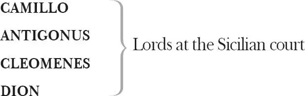

The Winter's Tale
LEONTES , King of Sicilia
HERMIONE , his queen
MAMILLIUS , their son, a child
PERDITA , their daughter

PAULINA , a lady, wife to Antigonus
EMILIA , a lady attending upon Hermione
POLIXENES , King of Bohemia
FLORIZEL , his son
ARCHIDAMUS , a lord of Bohemia
OLD SHEPHERD , reputed father of Perdita
CLOWN , his son
AUTOLYCUS , a rogue, formerly in the service of Prince Florizel
Shepherds and Shepherdesses, including MOPSA and DORCAS
Twelve countrymen disguised as satyrs
A MARINER , a JAILER , other Lords, Gentlemen, Servants
TIME , as Chorus
Act 1
Scene 1 1 / running scene 1
Enter Camillo and Archidamus
ARCHIDAMUS If you shall chance, Camillo, to visit Bohemia 2 , on the like occasion 3 whereon my services are now on foot 4 , you shall see, as I have said, great difference betwixt our Bohemia 5 and your Sicilia.
CAMILLO I think this coming summer the King of Sicilia means to pay Bohemia the visitation which he justly owes him.
ARCHIDAMUS Wherein our entertainment shall shame us, we will be justified in our loves 6 , for indeed—
CAMILLO Beseech you—
ARCHIDAMUS Verily 7 , I speak it in the freedom of my knowledge 8 : we cannot with such magnificence — in so rare 9 — I know not what to say. We will give you sleepy 10 drinks, that your senses, unintelligent of our insufficience 11 , may, though they cannot praise us, as little accuse us.
CAMILLO You pay a great deal too dear for what's given freely.
ARCHIDAMUS Believe me, I speak as my understanding instructs me and as mine honesty puts it to utterance.
CAMILLO Sicilia 12 cannot show himself over-kind to Bohemia. They were trained 13 together in their childhoods and there rooted betwixt them then such an affection which cannot choose but branch 14 now. Since their more mature dignities and royal necessities 15 made separation of their society, their encounters, though not personal, have been royally attorneyed 16 with interchange of gifts, letters, loving embassies 17 , that they have seemed to be together, though absent, shook hands, as over a vast 18 , and embraced, as it were, from the ends of opposed winds 19 . The 20 heavens continue their loves.
ARCHIDAMUS I think there is not in the world either malice or matter to alter it. You have an unspeakable 21 comfort of 22 your young prince Mamillius: it is a gentleman of the greatest promise that ever came into my note 23 .
CAMILLO I very well agree with you in the hopes of him: it is a gallant child; one that indeed physics the subject 24 , makes old hearts fresh. They that went on crutches ere 25 he was born desire yet their life 26 to see him a man.
ARCHIDAMUS Would they else 27 be content to die?
CAMILLO Yes; if there were no other excuse why they should desire to live.
ARCHIDAMUS If the king had no son, they would desire to live on crutches till he had one.
Exeunt
Scene 2 / running scene 1 continues
Enter Leontes, Hermione, Mamillius, Polixenes, Camillo [and Attendants ]
POLIXENES Nine changes of the wat'ry star 28 hath been
The shepherd's note 29 since we have left our throne
Without a burden 30 . Time as long again
Would be filled up, my brother, with our thanks.
And yet we should, for perpetuity 31 ,
Go hence in debt: and therefore, like a cipher 32 ,
Yet standing in rich place, I multiply
With one 'We thank you' many thousands moe
That go before it.
LEONTES Stay 33 your thanks a while,
And pay them when you part.
POLIXENES Sir, that's tomorrow.
I am questioned by my fears of what may chance
Or breed upon our absence, that may blow
No sneaping winds at home, to make us say
'This is put forth too truly' 34 . Besides, I have stayed
To tire your royalty.
LEONTES We are tougher, brother,
Than you can put us to't 35 .
POLIXENES No longer stay.
LEONTES One sev'nnight 36 longer.
POLIXENES Very sooth 37 , tomorrow.
LEONTES We'll part the time between's 38 then, and in that
I'll no gainsaying 39 .
POLIXENES Press me not, beseech you, so.
There is no tongue that moves, none, none i'th'world
So soon as yours could win me. So it should now,
Were there necessity in your request, although
'Twere needful 40 I denied it. My affairs
Do even drag me homeward, which to hinder
Were in your love a whip to me 41 , my stay
To you a charge 42 and trouble. To save both,
Farewell, our brother.
LEONTES Tongue-tied, our queen? Speak you.
HERMIONE I had thought, sir, to have held my peace until
You had drawn oaths from him not to stay. You, sir,
Charge 43 him too coldly. Tell him you are sure
All in Bohemia's well: this satisfaction
The bygone day 44 proclaimed. Say 45 this to him,
He's beat from his best ward 46 .
LEONTES Well said, Hermione.
HERMIONE To tell 47 , he longs to see his son, were strong 48 .
But 49 let him say so then, and let him go.
But let him swear so, and he shall not stay,
We'll thwack him hence with distaffs 50 .—
Yet of your royal presence I'll adventure 51
To Polixenes
The borrow of a week. When at Bohemia
You take 52 my lord, I'll give him my commission
To let him there a month behind the gest
Prefixed for's parting 53 .— Yet, good deed 54 , Leontes,
I love thee not a jar 55 o'th'clock behind
What lady she 56 her lord.— You'll stay?
POLIXENES No, madam.
HERMIONE Nay, but you will?
POLIXENES I may not, verily.
HERMIONE Verily?
You put me off with limber vows 57 . But I,
Though you would seek t'unsphere the stars 58 with oaths,
Should yet say 'Sir, no going.' Verily,
You shall not go; a lady's 'Verily' is
As potent as a lord's. Will you go yet?
Force me to keep you as a prisoner,
Not like a guest: so you shall pay your fees
When you depart 59 , and save your thanks. How say you?
My prisoner? Or my guest? By your dread 60 'Verily',
One of them you shall be.
POLIXENES Your guest, then, madam.
To be your prisoner should import offending 61 ,
Which is for me less easy to commit
Than you to punish.
HERMIONE Not your jailer, then,
But your kind hostess. Come, I'll question you
Of 62 my lord's tricks and yours when you were boys.
You were pretty lordings 63 then?
POLIXENES We were, fair queen,
Two lads that thought there was no more behind 64
But such a day tomorrow as today,
And to be boy eternal.
HERMIONE Was not my lord
The verier wag 65 o'th'two?
POLIXENES We were as twinned lambs that did frisk i'th'sun,
And bleat the one at th'other. What we changed 66
Was innocence for innocence. We knew not
The doctrine of ill-doing, nor dreamed
That any did. Had we pursued that life,
And our weak spirits ne'er been higher reared
With stronger blood 67 , we should have answered heaven
Boldly 'Not guilty', the imposition cleared
Hereditary ours 68 .
HERMIONE By this we gather
You have tripped 69 since.
POLIXENES O, my most sacred lady,
Temptations have since then been born to's 70 . For
In those unfledged 71 days was my wife a girl;
Your precious self had then not crossed the eyes
Of my young play-fellow 72 .
HERMIONE Grace to boot! 73
Of this make no conclusion 74 , lest you say
Your queen and I are devils. Yet go on.
Th'offences we have made you do we'll answer 75 ,
If you first sinned with us, and that with us 76
You did continue fault, and that you slipped not
With any but with us.
LEONTES Is he won yet?
HERMIONE He'll stay, my lord.
LEONTES At my request he would not.—
Aside?
Hermione, my dearest, thou never spok'st
To better purpose.
HERMIONE Never?
LEONTES Never, but once.
HERMIONE What? Have I twice said well? When was't before?
I prithee tell me. Cram's 77 with praise, and make's
As fat as tame things 78 . One good deed dying tongueless 79
Slaughters a thousand waiting upon that 80 .
Our praises are our wages. You may ride's 81
With one soft kiss a thousand furlong 82 s ere
With spur we heat an acre 83 . But to th'goal:
My last good deed was to entreat his stay:
What was my first? It has an elder sister 84 ,
Or I mistake you — O, would 85 her name were Grace 86 ! —
But once before I spoke to th'purpose: when?
Nay, let me have't: I long.
LEONTES Why, that was when
Three crabbèd 87 months had soured themselves to death,
Ere I could make thee open thy white hand
And clap 88 thyself my love; then didst thou utter
'I am yours for ever.'
HERMIONE 'Tis grace indeed.—
Why, lo 89 you now, I have spoke to th'purpose 90 twice:
To Polixenes?
The one forever earned a royal husband;
Th'other for some while a friend 91 .
Takes Polixenes' hand
LEONTES Too hot, too hot!
Aside
To mingle friendship far is mingling bloods 92 .
I have tremor cordis 93 on me: my heart dances,
But not for joy, not joy. This entertainment 94
May a free 95 face put on, derive a liberty
From heartiness 96 , from bounty 97 , fertile bosom 98 ,
And well become the agent 99 . 'T 100 may, I grant.
But to be paddling palms and pinching fingers 101 , 102
As now they are, and making practised 103 smiles,
As in a looking-glass, and then to sigh, as 'twere
The mort 104 o'th'deer 105 — O, that is entertainment
My bosom likes not, nor my brows 106 .— Mamillius,
Art thou my boy?
MAMILLIUS Ay, my good lord.
LEONTES I' fecks! 107
Why, that's my bawcock 108 . What? Hast smutched 109 thy nose?—
They say it is a copy out of mine.— Come, captain,
Aside?
We must be neat 110 ; not neat, but cleanly, captain.
And yet the steer 111 , the heifer and the calf
Are all called neat.— Still virginalling
Aside
Upon his palm 112 ?— How now, you wanton 113 calf!
Art thou my calf?
MAMILLIUS Yes, if you will, my lord.
LEONTES Thou want'st 114 a rough pash 115 and the shoots 116 that I have
To be full 117 like me.— Yet they say we are
Aside?
Almost as like as eggs; women say so,
That will say anything. But were they false
As o'er-dyed blacks 118 , as wind, as waters 119 , false
As dice are to be wished by one that fixes
No bourn 'twixt his and mine 120 , yet were it true
To say this boy were like me.— Come, sir page,
To Mamillius
Look on me with your welkin 121 eye. Sweet villain!
Most dear'st, my collop 122 ! Can thy dam 123 , may't be
Affection 124 ?— Thy intention 125 stabs the centre.
Aside?
Thou dost make possible things not so held 126 ,
Communicat'st with dreams — how can this be? —
With what's unreal thou 127 coactive art,
And fellow'st 128 nothing. Then 'tis very credent 129 co-join 130
Thou mayst co-join with something, and thou dost,
And that beyond commission 131 , and I find 132 it,
And that to the infection of my brains
And hard'ning of my brows 133 .
POLIXENES What means Sicilia 134 ?
HERMIONE He something seems 135 unsettled.
POLIXENES How, my lord?
LEONTES What cheer? How is't with you, best brother?
HERMIONE You look as if you held a brow of much distraction.
Are you moved 136 , my lord?
LEONTES No, in good earnest.—
How sometimes nature will betray its folly,
Aside?
Its tenderness, and make itself a pastime
To harder bosoms 137 !— Looking on the lines
Of my boy's face, methoughts I did recoil
Twenty-three years, and saw myself unbreeched 138 ,
In my green velvet coat; my dagger muzzled 139 ,
Lest it should bite its master, and so prove,
As ornaments oft do, too dangerous.
How like, methought, I then was to this kernel,
This squash 140 , this gentleman.— Mine honest friend,
To Mamillius
Will you take eggs for money 141 ?
MAMILLIUS No, my lord, I'll fight.
LEONTES You will? Why, happy man be's dole 142 ! My brother,
Are you so fond of your young prince as we
Do seem to be of ours?
POLIXENES If at home, sir,
He's all my exercise 143 , my mirth, my matter;
Now my sworn friend and then mine enemy;
My parasite 144 , my soldier, statesman, all.
He makes a July's day short as December,
And with his varying childness 145 cures in me
Thoughts that would thick my blood 146 .
LEONTES So stands this squire
Officed 147 with me. We two will walk, my lord,
And leave you to your graver 148 steps.— Hermione,
How thou lovest us, show in our brother's welcome.
Let what is dear 149 in Sicily be cheap 150 .
Next to thyself and my young rover 151 , he's
Apparent 152 to my heart.
HERMIONE If you would seek us,
We are yours i'th'garden: shall's attend 153 you there?
LEONTES To your own bents 154 dispose you: you'll be found 155 ,
Be you beneath the sky.— I am angling now,
Aside
Though you perceive me not how I give line.
Go to 156 , go to!
How she holds up the neb, the bill 157 to him!
And arms her with the boldness of a wife
To her allowing husband 158 !
[Exeunt Polixenes, Hermione and Attendants ]
Gone already?
Inch-thick, knee-deep, o'er head and ears a forked 159 one!—
Go, play, boy, play. Thy mother plays 160 , and I
Play too, but so disgraced a part 161 , whose issue 162
Will hiss 163 me to my grave. Contempt and clamour
Will be my knell 164 . Go play, boy, play.— There have 165 been,
Or I am much deceived, cuckolds 166 ere now.
And many a man there is, even at this present,
Now while I speak this, holds his wife by th'arm,
That little thinks she has been sluiced 167 in's absence
And his pond 168 fished 169 by his next neighbour, by
Sir Smile, his neighbour. Nay, there's comfort in't
Whiles other men have gates 170 and those gates opened,
As mine, against their will. Should all despair
That have revolted 171 wives, the tenth of mankind
Would hang themselves. Physic 172 for't there's none:
It is a bawdy 173 planet, that will strike 174
Where 'tis predominant 175 ; and 'tis powerful, think it,
From east, west, north and south. Be it concluded,
No barricado for a belly 176 . Know't,
It will let in and out the enemy
With bag and baggage 177 . Many thousand on's 178
Have the disease, and feel't not.— How now, boy?
MAMILLIUS I am like you, they say.
LEONTES Why that's some comfort. What, Camillo there?
CAMILLO Ay, my good lord.
Comes forward
LEONTES Go play, Mamillius, thou'rt an honest man.—
[Exit Mamillius ]
Camillo, this great sir will yet stay longer.
CAMILLO You had much ado 179 to make his anchor hold 180 :
When you cast out, it still came home 181 .
LEONTES Didst note it?
CAMILLO He would not stay at your petitions 182 , made
His business more material 183 .
LEONTES Didst perceive it?—
They're here with me already 184 , whisp'ring, rounding 185
Aside
'Sicilia is a so-forth 186 .' 'Tis far gone
When I shall gust 187 it last 188 .— How came't, Camillo,
To Camillo
That he did stay?
CAMILLO At the good queen's entreaty.
LEONTES At the queen's be't. 'Good' should be pertinent 189 ,
But so it is 190 , it is not. Was this taken 191
By any understanding pate 192 but thine?
For thy conceit is soaking 193 , will draw in
More than the common blocks 194 . Not noted, is't,
But of 195 the finer natures? By some severals 196
Of head-piece 197 extraordinary? Lower messes 198
Perchance are to this business 199 purblind 200 ? Say.
CAMILLO Business, my lord? I think most understand
Bohemia stays here longer.
LEONTES Ha?
CAMILLO Stays here longer.
LEONTES Ay, but why?
CAMILLO To satisfy 201 your highness and the entreaties
Of our most gracious mistress.
LEONTES Satisfy?
Th'entreaties of your mistress? Satisfy?
Let that suffice. I have trusted thee, Camillo,
With all the nearest things to my heart, as well 202
My chamber-councils 203 , wherein, priest-like, thou
Hast cleansed my bosom 204 , I from thee departed
Thy penitent reformed. But we 205 have been
Deceived in thy integrity, deceived
In that which seems so.
CAMILLO Be it forbid, my lord!
LEONTES To bide 206 upon't, thou art not honest: or,
If thou inclin'st that way, thou art a coward,
Which hoxes 207 honesty behind, restraining
From course required: or else thou must be counted 208
A servant grafted 209 in my serious trust
And therein negligent: or else a fool
That see'st a game 210 played home 211 , the rich stake drawn 212 ,
And tak'st it all for jest.
CAMILLO My gracious lord,
I may be negligent, foolish and fearful.
In every one of these no man is free,
But that his negligence, his folly, fear,
Among the infinite doings of the world,
Sometime puts forth. In your affairs, my lord,
If ever I were wilful-negligent 213 ,
It was my folly: if industriously
I played the fool, it was my negligence,
Not weighing 214 well the end: if ever fearful
To do a thing, where I the issue 215 doubted,
Whereof the execution did cry out
Against the non-performance 216 , 'twas a fear
Which oft infects the wisest. These, my lord,
Are such allowed infirmities that honesty
Is never free of. But, beseech your grace,
Be plainer with me. Let me know my trespass 217
By its own visage 218 ; if I then deny it,
'Tis none of mine.
LEONTES Ha' not you seen, Camillo —
But that's past doubt, you have, or your eye-glass 219
Is thicker than a cuckold's horn — or heard —
For to a vision so apparent 220 rumour
Cannot be mute — or thought — for cogitation 221
Resides not in that man that does not think —
My wife is slippery 222 ? If thou wilt confess,
Or else be impudently negative,
To 223 have nor eyes nor ears nor thought, then say
My wife's a hobby-horse 224 , deserves a name
As rank 225 as any flax-wench 226 that puts to
Before her troth-plight 227 : say't and justify't.
CAMILLO I would not be a stander-by to hear
My sovereign mistress clouded 228 so, without
My present 229 vengeance taken. 'Shrew 230 my heart,
You never spoke what did become 231 you less
Than this; which to reiterate were sin
As deep as that, though true 232 .
LEONTES Is whispering nothing?
Is leaning cheek to cheek? Is meeting noses?
Kissing with inside lip? Stopping the career 233
Of laughter with a sigh — a note infallible 234
Of breaking honesty 235 ? Horsing foot on foot 236 ?
Skulking in corners? Wishing clocks more swift?
Hours 237 , minutes? Noon, midnight? And all eyes
Blind with the pin and web 238 but theirs, theirs only,
That would unseen be wicked? Is this nothing 239 ?
Why then the world and all that's in't is nothing:
The covering sky is nothing, Bohemia nothing,
My wife is nothing, nor nothing have these nothings,
If this be nothing.
CAMILLO Good my lord, be cured
Of this diseased opinion, and betimes 240 .
For 'tis most dangerous.
LEONTES Say it be, 'tis true.
CAMILLO No, no, my lord.
LEONTES It is. You lie, you lie.
I say thou liest, Camillo, and I hate thee,
Pronounce thee a gross lout, a mindless slave,
Or else a hovering temporizer 241 , that
Canst with thine eyes at once see good and evil,
Inclining to them both. Were my wife's liver 242
Infected as her life, she would not live
The running of one glass 243 .
CAMILLO Who does infect her?
LEONTES Why, he that wears her like her medal 244 , hanging
About his neck, Bohemia: who, if I
Had servants true about me that bare 245 eyes
To see alike mine honour as their profits,
Their own particular thrifts 246 , they would do that
Which should undo 247 more doing 248 . Ay, and thou,
His cupbearer 249 — whom I from meaner form 250
Have benched 251 and reared to worship 252 , who mayst see
Plainly as heaven sees earth and earth sees heaven,
How I am galled 253 — mightst bespice 254 a cup
To give mine enemy a lasting wink 255 ,
Which draught to me were cordial 256 .
CAMILLO Sir, my lord,
I could do this, and that with no rash 257 potion,
But with a ling'ring dram 258 that should not work
Maliciously 259 like poison. But I cannot
Believe this crack 260 to be in my dread 261 mistress,
So sovereignly being honourable.
I have loved thee—
LEONTES Make that thy question, and go rot! 262
Dost think I am so muddy 263 , so unsettled,
To appoint myself in this vexation 264 , sully
The purity and whiteness of my sheets —
Which to preserve is sleep 265 , which being spotted 266
Is goads, thorns, nettles, tails of wasps —
Give scandal to the blood 267 o'th'prince my son —
Who I do think is mine and love as mine —
Without ripe moving to't 268 ? Would I do this?
Could man so blench 269 ?
CAMILLO I must believe you, sir.
I do, and will fetch off 270 Bohemia for't,
Provided that when he's removed, your highness
Will take again your queen as yours at first,
Even for your son's sake, and thereby for sealing
The injury of tongues 271 in courts and kingdoms
Known and allied to yours.
LEONTES Thou dost advise me
Even so as I mine own course have set down 272 .
I'll give no blemish to her honour, none.
CAMILLO My lord,
Go then; and with a countenance 273 as clear
As friendship wears at feasts, keep 274 with Bohemia
And with your queen. I am his cupbearer:
If from me he have wholesome beverage,
Account me not your servant.
LEONTES This is all.
Do't and thou hast the one half of my heart;
Do't not, thou splitt'st thine own.
CAMILLO I'll do't, my lord.
LEONTES I will seem friendly, as thou hast advised me.
Exit
CAMILLO O miserable 275 lady! But, for me,
What case 276 stand I in? I must be the poisoner
Of good Polixenes, and my ground 277 to do't
Is the obedience to a master; one
Who, in rebellion with himself 278 , will have
All that are his so too 279 . To do this deed,
Promotion follows. If 280 I could find example
Of thousands that had struck anointed kings
And flourished after, I'd not do't. But since
Nor brass nor stone nor parchment 281 bears not one,
Let villainy itself forswear't. I must
Forsake the court. To do't, or no, is certain
To me a break-neck 282 . Happy 283 star, reign now!
Here comes Bohemia.
Enter Polixenes
POLIXENES This is strange. Methinks
Aside
My favour here begins to warp 284 . Not speak?—
Good day, Camillo.
CAMILLO Hail, most royal sir!
POLIXENES What is the news i'th'court?
CAMILLO None rare 285 , my lord.
POLIXENES The king hath on him such a countenance
As 286 he had lost some province and a region
Loved as he loves himself. Even now I met him
With customary compliment 287 , when he,
Wafting his eyes to th'contrary 288 and falling 289
A lip of much contempt, speeds from me and
So leaves me to consider what is breeding
That changes thus his manners.
CAMILLO I dare not know, my lord.
POLIXENES How, dare not? Do not? Do you know, and dare not?
Be intelligent 290 to me. 'Tis thereabouts 291 .
For, to yourself, what you do know, you must 292 ,
And cannot say you dare not. Good Camillo,
Your changed complexions 293 are to me a mirror
Which shows me mine changed too, for I must be
A party in this alteration, finding
Myself thus altered with't.
CAMILLO There is a sickness
Which puts some of us in distemper 294 , but
I cannot name the disease, and it is caught
Of 295 you that yet are well.
POLIXENES How, caught of me?
Make me not sighted like the basilisk 296 .
I have looked on thousands who have sped 297 the better
By my regard 298 , but killed none so. Camillo —
As you are certainly a gentleman, thereto
Clerk-like 299 experienced, which no less adorns
Our gentry 300 than our parents' noble names,
In whose success 301 we are gentle 302 — I beseech you,
If you know aught 303 which does behove 304 my knowledge
Thereof to be informed, imprison't not
In ignorant concealment.
CAMILLO I may not answer.
POLIXENES A sickness caught of me, and yet I well?
I must be answered. Dost thou hear, Camillo,
I conjure 305 thee, by all the parts 306 of man
Which honour does acknowledge, whereof the least
Is not this suit 307 of mine, that thou declare
What incidency 308 thou dost guess of harm
Is creeping toward me; how far off, how near,
Which way to be prevented, if to be.
If not, how best to bear it.
CAMILLO Sir, I will tell you,
Since I am charged 309 in honour and by him
That I think honourable: therefore mark 310 my counsel,
Which must be ev'n 311 as swiftly followed as
I mean to utter it; or both yourself and me
Cry lost, and so goodnight 312 !
POLIXENES On, good Camillo.
CAMILLO I am appointed him 313 to murder you.
POLIXENES By whom, Camillo?
CAMILLO By the king.
POLIXENES For what?
CAMILLO He thinks, nay, with all confidence he swears,
As he had seen't or been an instrument
To vice 314 you to't, that you have touched his queen
Forbiddenly.
POLIXENES O, then my best 315 blood turn
To an infected jelly and my name
Be yoked with his that did betray the best!
Turn then my freshest reputation to
A savour 316 that may strike 317 the dullest 318 nostril
Where I arrive, and my approach be shunned,
Nay, hated too, worse than the great'st infection
That e'er was heard or read!
CAMILLO Swear his thought over 319
By each particular star in heaven and
By all their influences 320 for to 321 ; you may as well
Forbid the sea for to obey the moon
As or 322 by oath remove or counsel shake
The fabric 323 of his folly, whose foundation
Is piled upon his faith and will continue
The standing of his body 324 .
POLIXENES How should this grow 325 ?
CAMILLO I know not. But I am sure 'tis safer to
Avoid what's grown than question how 'tis born.
If therefore you dare trust my honesty,
That lies enclosèd in this trunk 326 which you
Shall bear along impawned 327 , away tonight!
Your followers I will whisper to 328 the business,
And will by twos and threes at several posterns 329
Clear them 330 o'th'city. For myself, I'll put
My fortunes to your service, which are here
By this discovery lost 331 . Be not uncertain,
For by the honour of my parents, I
Have uttered truth, which if you seek to prove 332 ,
I dare not stand by 333 ; nor shall you be safer
Than one condemnèd by the king's own mouth,
Thereon his execution sworn.
POLIXENES I do believe thee:
I saw his heart in's face. Give me thy hand.
Be pilot 334 to me and thy places 335 shall
Still neighbour mine 336 . My ships are ready and
My people did expect my hence departure 337
Two days ago. This jealousy
Is for a precious creature: as she's rare,
Must it be great, and as his person's mighty,
Must it be violent, and as he does conceive
He is dishonoured by a man which ever
Professed 338 to him, why, his revenges must
In that be made more bitter. Fear o'ershades me.
Good expedition 339 be my friend, and comfort
The gracious queen, part of his theme 340 , but nothing
Of his ill-ta'en 341 suspicion. Come, Camillo.
I will respect thee as a father if
Thou bear'st my life off hence. Let us avoid 342 .
CAMILLO It is in mine authority to command
The keys of all the posterns. Please your highness
To take the urgent hour. Come, sir, away.
Exeunt
Act 2
Scene 1 / running scene 2
Enter Hermione, Mamillius, Ladies
HERMIONE Take the boy to you. He so troubles me,
'Tis past enduring.
FIRST LADY Come, my gracious lord,
Takes Mamillius
Shall I be your playfellow?
MAMILLIUS No, I'll none of 343 you.
FIRST LADY Why, my sweet lord?
MAMILLIUS You'll kiss me hard and speak to me as if
I were a baby still.— I love you better.
To Second Lady
SECOND LADY And why so, my lord?
MAMILLIUS Not for because 344
Your brows are blacker — yet black brows, they say,
Become some women best, so 345 that there be not
Too much hair there, but in a semicircle
Or a half-moon made with a pen.
SECOND LADY Who taught 'this 346 ?
MAMILLIUS I learned it out of women's faces. Pray now
What colour are your eyebrows?
FIRST LADY Blue, my lord.
MAMILLIUS Nay, that's a mock. I have seen a lady's nose
That has been blue, but not her eyebrows.
FIRST LADY Hark ye.
The queen your mother rounds apace 347 . We shall
Present our services to a fine new prince
One of these days, and then you'd wanton with us 348 ,
If we would have you.
SECOND LADY She is spread of late
Into a goodly bulk. Good time encounter her! 349
HERMIONE What wisdom stirs amongst you? Come, sir, now
I am for 350 you again. Pray you sit by us,
And tell's a tale.
MAMILLIUS Merry or sad 351 shall't be?
HERMIONE As merry as you will.
MAMILLIUS A sad tale's best for winter. I have one
Of sprites 352 and goblins.
HERMIONE Let's have that, good sir.
Come on, sit down. Come on, and do your best
To fright me with your sprites. You're powerful at it.
MAMILLIUS There was a man—
HERMIONE Nay, come, sit down, then on.
MAMILLIUS Dwelt by a churchyard — I will tell it softly.
Sits
Yond crickets 353 shall not hear it.
HERMIONE Come on, then, and give't me in mine ear.
They talk apart
[Enter Leontes, Antigonus, Lords and others ]
LEONTES Was he met there? His train? Camillo with him?
A LORD Behind the tuft 354 of pines I met them. Never
Saw I men scour 355 so on their way: I eyed them
Even 356 to their ships.
LEONTES How blest am I
In my just censure 357 , in my true opinion!
Alack, for lesser knowledge! How accursed
In being so blest! There may be in the cup
A spider steeped 358 , and one may drink, depart,
And yet partake no venom, for his knowledge
Is not infected 359 : but if one present
Th'abhorred ingredient to his eye, make known
How he hath drunk, he cracks his gorge 360 , his sides,
With violent hefts 361 . I have drunk 362 , and seen the spider.
Camillo was his help in this, his pander 363 .
There is a plot against my life, my crown.
All's true that is mistrusted 364 . That false 365 villain
Whom I employed was pre-employed by him.
He has discovered my design, and I
Remain a pinched 366 thing; yea, a very trick 367
For them to play at will. How came the posterns
So easily open?
A LORD By his great authority,
Which often hath no less prevailed than so
On your command.
LEONTES I know't too well.—
Give me the boy. I am glad you did not nurse 368 him.
To Hermione
Though he does bear some signs of me, yet you
Have too much blood in him.
HERMIONE What is this? Sport? 369
LEONTES Bear the boy hence. He shall not come about her.
To a Lord or Lady
Away with him, and let her sport 370 herself
With that she's big with,— for 'tis Polixenes
To Hermione
Has made thee swell thus.
[The Lord or Lady exits with Mamillius ]
HERMIONE But I'd say he had not;
And I'll be sworn you would believe my saying,
Howe'er you lean to th'nayward 371 .
LEONTES You, my lords,
Look on her, mark her well. Be but about
To say 'She is a goodly lady', and
The justice 372 of your hearts will thereto add
''Tis pity she's not honest 373 , honourable.'
Praise her but for this her without-door 374 form,
Which on my faith deserves high speech, and straight 375
The shrug, the hum or ha, these petty brands 376
That calumny 377 doth use — O, I am out 378 —
That mercy does, for calumny will sear
Virtue itself 379 : these shrugs, these hums and ha's,
When you have said 'She's goodly', come between 380
Ere you can say 'She's honest.' But be't known,
From him that has most cause to grieve it should be,
She's an adultress.
HERMIONE Should a villain say so —
The most replenished 381 villain in the world —
He were as much more villain 382 . You, my lord,
Do but mistake.
LEONTES You have mistook 383 , my lady,
Polixenes for Leontes. O thou thing,
Which I'll not call a creature of thy place 384 ,
Lest barbarism, making me the precedent,
Should a like 385 language use to all degrees 386
And mannerly distinguishment 387 leave out
Betwixt the prince and beggar. I have said
She's an adult'ress. I have said with whom.
More, she's a traitor and Camillo is
A federary 388 with her, and one that knows
What she should shame to know 389 herself
But with her most vile principal, that she's
A bed-swerver 390 , even as bad as those
That vulgars 391 give bold'st titles 392 ; ay, and privy
To this their late escape.
HERMIONE No, by my life,
Privy to 393 none of this. How will this grieve you,
When you shall come to clearer knowledge, that
You thus have published 394 me. Gentle my 395 lord,
You scarce can right me throughly 396 then to say 397
You did mistake.
LEONTES No. If I mistake
In those foundations which I build upon,
The centre 398 is not big enough to bear
A school-boy's top 399 . Away with her, to prison!
He who shall speak for her is afar off 400 guilty
But that he speaks 401 .
HERMIONE There's some ill 402 planet reigns:
I must be patient till the heavens look
With an aspect 403 more favourable. Good my lords,
I am not prone to weeping — as our sex
Commonly are — the want 404 of which vain dew
Perchance shall dry your pities 405 : but I have
That honourable grief lodged here 406 which burns
Worse than tears drown. Beseech you all, my lords,
With thoughts so qualified 407 as your charities 408
Shall best instruct you, measure 409 me; and so
The king's will be performed.
LEONTES Shall I be heard 410 ?
HERMIONE Who is't that goes with me? Beseech your highness
My women may be with me, for you see
My plight 411 requires it. Do not weep, good fools.
There is no cause. When you shall know your mistress
Has deserved prison, then abound in tears
As I come out; this action I now go on
Is for my better grace 412 .— Adieu, my lord.
To Leontes
I never wished to see you sorry, now
I trust I shall.— My women, come, you have leave 413 .
LEONTES Go, do our bidding. Hence!
[Exit Hermione, guarded, with Ladies ]
A LORD Beseech your highness, call the queen again.
ANTIGONUS Be certain what you do, sir, lest your justice
Prove violence, in the which three great ones suffer:
Yourself, your queen, your son.
A LORD For her, my lord,
I dare my life lay down and will do't, sir,
Please you t'accept it, that the queen is spotless
I'th'eyes of heaven and to you — I mean,
In this which you accuse her.
ANTIGONUS If it prove
She's otherwise, I'll keep my stables where
I lodge my wife 414 , I'll go in couples 415 with her,
Than when I feel and see her 416 no further trust her,
For every inch of woman in the world,
Ay, every dram 417 of woman's flesh is false,
If she be.
LEONTES Hold your peaces.
A LORD Good my lord—
ANTIGONUS It is for you we speak, not for ourselves.
You are abused and by some putter-on 418
That will be damned for't. Would I knew the villain,
I would land-damn 419 him. Be she honour-flawed,
I have three daughters — the eldest is eleven
The second and the third, nine, and some 420 five —
If this prove true, they'll pay for't. By mine honour,
I'll geld 421 'em all: fourteen they shall not see,
To bring false generations 422 . They are co-heirs,
And I had rather glib 423 myself than they
Should not produce fair issue 424 .
LEONTES Cease. No more.
You smell this business with a sense as cold
As is a dead man's nose. But I do see't and feel't
As you feel doing thus 425 , and see withal 426
The instruments that feel 427 .
ANTIGONUS If it be so,
We need no grave to bury honesty 428 :
There's not a grain of it the face to sweeten 429
Of the whole dungy earth.
LEONTES What? Lack I credit 430 ?
FIRST LORD I had rather you did lack than I, my lord,
Upon this ground 431 . And more it would content me
To have her honour true than your suspicion 432 ,
Be blamed for't how you might.
LEONTES Why, what need we
Commune with you of this, but rather follow
Our forceful instigation 433 ? Our prerogative
Calls not your counsels, but our natural goodness
Imparts this 434 , which if you, or stupefied 435
Or seeming so in skill 436 , cannot or will not
Relish 437 a truth like us, inform yourselves
We need no more of your advice. The matter,
The loss, the gain, the ord'ring on't 438 , is all
Properly 439 ours.
ANTIGONUS And I wish, my liege 440 ,
You had only in your silent judgement tried it,
Without more overture 441 .
LEONTES How could that be?
Either thou art most ignorant 442 by age,
Or thou wert born a fool. Camillo's flight,
Added to their familiarity —
Which was as gross as ever touched conjecture,
That lacked sight only 443 , nought for approbation 444
But only seeing, all other circumstances
Made 445 up to th'deed 446 — doth push on this proceeding 447 .
Yet, for a greater confirmation —
For in an act of this importance 'twere
Most piteous to be wild 448 — I have dispatched in post 449
To sacred Delphos 450 , to Apollo's temple,
Cleomenes and Dion, whom you know
Of stuffed sufficiency 451 . Now from the oracle
They will bring all, whose spiritual counsel had 452 ,
Shall stop or spur me. Have I done well?
A LORD Well done, my lord.
LEONTES Though I am satisfied and need no more
Than what I know, yet shall the oracle
Give rest to th'minds of others, such as he 453
Whose ignorant credulity will not
Come up to 454 th'truth. So have we thought it good
From 455 our free 456 person she should be confined,
Lest that the treachery 457 of the two fled hence
Be left her to perform. Come, follow us.
We are to speak in public, for this business
Will raise 458 us all.
ANTIGONUS To laughter, as I take it,
Aside
If the good truth were known.
Exeunt
Scene 2 / running scene 3
Enter Paulina, a Gentleman [and Attendants ]
PAULINA The keeper of the prison, call to him.
Let him have knowledge who I am.
Gentleman goes to the door
Good lady,
No court in Europe is too good for thee.
What dost thou then in prison?
[Enter the Jailer ]
Now, good sir,
You know me, do you not?
JAILER For a worthy lady,
And one who much I honour.
PAULINA Pray you then,
Conduct me to the queen.
JAILER I may not, madam.
To the contrary I have express commandment.
PAULINA Here's ado 459 , to lock up honesty and honour from
Th'access of gentle 460 visitors! Is't lawful, pray you,
To see her women? Any of them? Emilia?
JAILER So please you, madam,
To put apart 461 these your attendants, I
Shall bring Emilia forth.
PAULINA I pray now call her.—
Withdraw yourselves.
[Exeunt Gentleman and Attendants ]
JAILER And, madam,
I must be present at your conference.
PAULINA Well, be't so, prithee.
[Exit Jailer ]
Here's such ado to make no stain a stain
As passes colouring 462 .
[Enter Jailer with Emilia ]
Dear gentlewoman,
How fares our gracious lady?
EMILIA As well as one so great and so forlorn 463
May hold together. On 464 her frights and griefs —
Which never tender lady hath borne greater —
She is something before her time delivered 465 .
PAULINA A boy?
EMILIA A daughter, and a goodly babe,
Lusty 466 and like to live. The queen receives
Much comfort in't, says 'My poor prisoner,
I am innocent as you.'
PAULINA I dare be sworn.
These dangerous unsafe lunes 467 i'th'king, beshrew 468 them!
He must be told on't 469 , and he shall. The office 470
Becomes 471 a woman best. I'll take't upon me.
If I prove honey-mouthed 472 , let my tongue blister
And never to my red-looked 473 anger be
The trumpet any more 474 . Pray you, Emilia,
Commend my best obedience 475 to the queen.
If she dares trust me with her little babe,
I'll show't the king and undertake to be
Her advocate to th'loud'st 476 . We do not know
How he may soften at the sight o'th'child:
The silence often of pure innocence
Persuades when speaking fails.
EMILIA Most worthy madam,
Your honour and your goodness is so evident
That your free 477 undertaking cannot miss
A thriving issue 478 . There is no lady living
So meet 479 for this great errand. Please your ladyship
To visit the next room, I'll presently 480
Acquaint the queen of your most noble offer,
Who but today hammered of this design 481 ,
But durst not tempt a minister of honour 482 ,
Lest she should be denied.
PAULINA Tell her, Emilia.
I'll use that tongue I have: if wit 483 flow from't
As boldness from my bosom, let't not be doubted
I shall do good.
EMILIA Now be you blest for it 484 !
I'll to the queen.— Please you come something nearer.
To Jailer
JAILER Madam, if't please the queen to send the babe,
I know not what I shall incur to pass it,
Having no warrant.
PAULINA You need not fear it, sir:
This child was prisoner to the womb and is
By law and process of great nature thence
Freed and enfranchised, not a party to
The anger of the king nor guilty of,
If any be, the trespass of the queen.
JAILER I do believe it.
PAULINA Do not you fear. Upon mine honour, I
Will stand betwixt you and danger.
Exeunt
Scene 3 / running scene 4
Enter Leontes
LEONTES Nor 485 night nor day no rest. It is but weakness
To bear the matter thus, mere weakness. If
The cause were not in being 486 — part o'th'cause,
She, th'adulteress, for the harlot 487 king
Is quite beyond mine arm, out of the blank 488
And level 489 of my brain, plot-proof. But she
I can hook 490 to me — say that she were gone,
Given to the fire 491 , a moiety 492 of my rest
Might come to me again. Who's there?
[Enter a Servant ]
SERVANT My lord?
LEONTES How does the boy?
SERVANT He took good rest tonight.
'Tis hoped his sickness is discharged.
LEONTES To see his nobleness!
Conceiving 493 the dishonour of his mother,
He straight declined, drooped, took it deeply,
Fastened and fixed the shame on't in himself,
Threw off his spirit, his appetite, his sleep,
And downright languished. Leave me solely 494 . Go,
See how he fares.—
[Exit Servant ]
Fie, fie! No thought of him 495 .
The very thought of my revenges that way
Recoil upon me — in himself too mighty,
And in his parties, his alliance 496 . Let him be
Until a time may serve. For present vengeance,
Take it on her. Camillo and Polixenes
Laugh at me, make their pastime at my sorrow.
They should not laugh if I could reach them, nor
Shall she 497 within my power.
[Enter Paulina, carrying the baby; Antigonus and Lords enter and try to hold her back ]
A LORD You must not enter.
PAULINA Nay, rather, good my lords, be second to 498 me.
Fear you his tyrannous passion more, alas,
Than the queen's life? A gracious innocent soul,
More free 499 than he is jealous.
ANTIGONUS That's enough.
SERVANT Madam, he hath not slept tonight, commanded
None should come at him.
PAULINA Not so hot 500 , good sir,
I come to bring him sleep 501 . 'Tis such as you,
That creep like shadows by him and do sigh
At each his needless heavings 502 , such as you
Nourish the cause of his awaking 503 . I
Do come with words as medicinal as true,
Honest as either 504 , to purge him of that humour 505
That presses him from sleep.
LEONTES What noise there, ho?
PAULINA No noise, my lord, but needful conference 506
About some gossips 507 for your highness.
LEONTES How? 508
Away with that audacious lady! Antigonus,
I charged thee that she should not come about me.
I knew she would.
ANTIGONUS I told her so, my lord,
On your displeasure's peril 509 and on mine,
She should not visit you.
LEONTES What? Canst not rule 510 her?
PAULINA From 511 all dishonesty he can. In this,
Unless he take the course that you have done —
Commit 512 me for committing honour — trust it,
He shall not rule me.
ANTIGONUS La you now 513 , you hear.
When she will take the rein, I let her run.
But she'll not stumble.
PAULINA Good my liege, I come.
And, I beseech you hear me, who professes
Myself your loyal servant, your physician,
Your most obedient counsellor, yet that dares
Less appear so in comforting your evils,
Than such as most seem yours 514 . I say, I come
From your good queen 515 .
LEONTES Good queen?
PAULINA Good queen, my lord, good queen. I say good queen,
And would by combat make her good 516 , so were I
A man, the worst 517 about you.
LEONTES Force her hence.
To Lords
PAULINA Let him that makes but trifles 518 of his eyes
First hand 519 me. On mine own accord I'll off 520 .
But first I'll do my errand. The good queen,
For she is good, hath brought you forth a daughter —
Here 'tis — commends it to your blessing.
Lays down the baby
LEONTES Out! 521
A mankind 522 witch! Hence with her, out o'door.
A most intelligencing bawd 523 !
PAULINA Not so.
I am as ignorant 524 in that as you
In so entitling 525 me, and no less honest
Than you are mad, which is enough, I'll warrant 526 ,
As this world goes, to pass for honest.
LEONTES Traitors!
To Lords
Will you not push her out?— Give her the bastard.
To Antigonus
Thou dotard 527 , thou art woman-tired 528 , unroosted 529
By thy dame Partlet 530 here. Take up the bastard,
Take't up, I say: give't to thy crone 531 .
PAULINA Forever
To Antigonus
Unvenerable 532 be thy hands, if thou
Tak'st up the princess by that forcèd baseness
Which he has put upon't 533 !
LEONTES He dreads 534 his wife.
PAULINA So I would you did. Then 'twere past all doubt
You'd call your children yours.
LEONTES A nest of traitors!
ANTIGONUS I am none, by this good light.
PAULINA Nor I, nor any
But one that's here, and that's himself, for he
The sacred honour of himself, his queen's,
His hopeful son's, his babe's, betrays to slander,
Whose sting is sharper than the sword's; and will not —
For, as the case now stands, it is a curse
He cannot be compelled to't — once remove
The root of his opinion 535 , which is rotten
As ever oak or stone was sound.
LEONTES A callat 536
Of boundless tongue, who late hath beat her husband
And now baits 537 me! This brat is none of mine.
It is the issue of Polixenes.
Hence with it, and together with the dam 538
Commit them to the fire!
PAULINA It is yours.
And, might we lay th'old proverb to your charge 539 ,
So like you, 'tis the worse 540 . Behold, my lords,
Although the print 541 be little, the whole matter 542
And copy of the father: eye, nose, lip,
The trick 543 of's frown, his forehead, nay 544 , the valley 545 ,
The pretty dimples of his chin and cheek, his smiles,
The very mould and frame of hand, nail, finger.
And thou, good goddess Nature, which hast made it
So like to him that got 546 it, if thou hast
The ordering of the mind 547 too, 'mongst all colours
No yellow 548 in't, lest she suspect, as he does,
Her children not her husband's!
LEONTES A gross hag 549 .
And, lozel 550 , thou art worthy to be hanged,
To Antigonus
That wilt not stay her tongue 551 .
ANTIGONUS Hang all the husbands
That cannot do that feat, you'll leave yourself
Hardly one subject.
LEONTES Once more, take her hence.
PAULINA A most unworthy and unnatural lord
Can do no more.
LEONTES I'll ha' thee burnt.
PAULINA I care not:
It is an heretic that makes the fire,
Not she which burns in't 552 . I'll not call you tyrant.
But this most cruel usage of your queen —
Not able to produce more accusation
Than your own weak-hinged fancy 553 — something savours 554
Of tyranny and will ignoble make you,
Yea, scandalous to the world.
LEONTES On your allegiance,
To Antigonus
Out of the chamber with her! Were I a tyrant,
Where were her life? 555 She durst not call me so,
If she did know me one. Away with her!
PAULINA I pray you do not push me. I'll be gone.
Look to your babe, my lord, 'tis yours. Jove 556 send her
A better guiding spirit! What needs these hands? 557
You 558 that are thus so tender o'er his follies
Will never do him good, not one of you.
So, so. Farewell, we are gone.
Exit
LEONTES Thou, traitor, hast set on 559 thy wife to this.
To Antigonus
My child? Away with't! Even thou, that hast
A heart so tender o'er it, take it hence
And see it instantly consumed with fire.
Even thou and none but thou. Take it up straight 560 .
Within this hour bring me word 'tis done,
And by good testimony 561 , or I'll seize thy life,
With what thou else call'st thine. If thou refuse
And wilt encounter with my wrath, say so;
The bastard brains with these my proper 562 hands
Shall I dash out. Go, take it to the fire,
For thou set'st on thy wife.
ANTIGONUS I did not, sir.
These lords, my noble fellows, if they please,
Can clear me in't.
LORDS We can. My royal liege,
He is not guilty of her coming hither.
LEONTES You're liars all.
A LORD Beseech your highness, give us better credit 563 .
We have always truly served you, and beseech' 564
So to esteem of us, and on our knees we beg,
As recompense of our dear 565 services
Past and to come, that you do change this purpose,
Which being so horrible, so bloody, must
Lead on to some foul issue 566 . We all kneel.
LEONTES I am a feather for each wind that blows 567 .
Shall I live on to see this bastard kneel
And call me father? Better burn it now
Than curse it then. But be it. Let it live.
It shall not neither.— You, sir, come you hither.
To Antigonus
You that have been so tenderly officious
With Lady Margery 568 , your midwife there,
To save this bastard's life — for 'tis a bastard,
So sure as this beard's grey 569 — what will you adventure 570
To save this brat's life?
ANTIGONUS Anything, my lord,
That my ability may undergo
And nobleness impose. At least thus much:
I'll pawn the little blood which I have left
To save the innocent. Anything possible.
LEONTES It shall be possible. Swear by this sword
Holds out sword
Thou wilt perform my bidding.
ANTIGONUS I will, my lord.
LEONTES Mark and perform it, see'st thou! For the fail
Of any point in't shall not only be
Death to thyself but to thy lewd-tongued 571 wife,
Whom for this time we pardon. We enjoin 572 thee,
As thou art liege-man 573 to us, that thou carry
This female bastard hence and that thou bear it
To some remote and desert 574 place quite out
Of our dominions; and that there thou leave it,
Without more mercy, to it 575 own protection
And favour of the climate. As by strange fortune 576
It came to us, I do in justice charge thee,
On thy soul's peril and thy body's torture,
That thou commend it strangely to some place 577
Where chance may nurse or end it 578 . Take it up.
ANTIGONUS I swear to do this, though a present 579 death
Had been more merciful. Come on, poor babe.
Takes up baby
Some powerful spirit instruct the kites 580 and ravens 581
To be thy nurses! Wolves and bears, they say,
Casting their savageness aside, have done
Like 582 offices of pity. Sir, be prosperous
In more 583 than this deed does require 584 ; — and blessing
Against this cruelty fight on thy 585 side,
Poor thing, condemned to loss!
Exit [with the baby ]
LEONTES No, I'll not rear
Another's issue.
Enter a Servant
SERVANT Please your highness, posts 586
From those you sent to th'oracle are come
An hour since: Cleomenes and Dion,
Being well arrived from Delphos, are both landed,
Hasting to th'court.
FIRST LORD So please you, sir, their speed
Hath been beyond account 587 .
LEONTES Twenty-three days
They have been absent: 'tis good speed, foretells
The great Apollo suddenly 588 will have
The truth of this appear. Prepare you, lords.
Summon a session 589 , that we may arraign 590
Our most disloyal lady, for, as she hath
Been publicly accused, so shall she have
A just and open trial. While she lives
My heart will be a burden to me. Leave me,
And think upon my bidding.
Exeunt
Act 3
Scene 1 591 / running scene 5
Enter Cleomenes and Dion
CLEOMENES The climate's delicate 592 , the air most sweet,
Fertile the isle, the temple much surpassing
The common praise it bears.
DION I shall report,
For most it caught 593 me, the celestial habits 594 ,
Methinks I so should term them, and the reverence
Of the grave 595 wearers. O, the sacrifice!
How ceremonious, solemn and unearthly
It was i'th'off'ring!
CLEOMENES But of all, the burst
And the ear-deaf'ning voice o'th'oracle,
Kin 596 to Jove's thunder, so surprised 597 my sense
That I was nothing.
DION If th'event 598 o'th'journey
Prove as successful to the queen — O, be't so! —
As it hath been to us rare 599 , pleasant, speedy,
The time is worth the use on't 600 .
CLEOMENES Great Apollo
Turn all to th'best! These proclamations,
So forcing faults upon Hermione,
I little like.
DION The violent carriage of it 601
Will clear or end the business: when the oracle,
Thus by Apollo's great divine 602 sealed up,
Shall the contents discover 603 , something rare
Even then will rush to knowledge. Go, fresh horses!
And gracious be the issue!
Exeunt
Scene 2 604 / running scene 6
Enter Leontes, Lords, Officers
LEONTES This sessions, to our great grief we pronounce,
Even pushes gainst our heart: the party tried
The daughter of a king, our wife, and one
Of 605 us too much beloved. Let us be cleared
Of being tyrannous, since we so openly
Proceed in justice, which shall have due course,
Even to the guilt or the purgation 606 .
Produce the prisoner.
OFFICER It is his highness' pleasure that the queen
Appear in person here in court. Silence!
[Enter Hermione as to her trial, Paulina and Ladies attending ]
LEONTES Read the indictment.
OFFICER Hermione, queen to the worthy Leontes, King of Sicilia, thou art here accused and arraigned of high treason, in committing adultery with Polixenes, King of Bohemia, and conspiring with Camillo to take away the life of our sovereign lord the king, thy royal husband: the pretence 607 whereof being by circumstances partly laid open, thou, Hermione, contrary to the faith and allegiance of a true subject, didst counsel 608 and aid them, for their better safety, to fly away by night.
Reads
HERMIONE Since what I am to say must be but that
Which contradicts my accusation and
The testimony on my part no other
But what comes from myself, it shall scarce boot 609 me
To say 'Not guilty': mine integrity
Being counted falsehood, shall, as I express it,
Be so received 610 . But thus: if powers divine
Behold our human actions, as they do,
I doubt not then but innocence shall make
False accusation blush and tyranny
Tremble at patience 611 . You, my lord, best know,
Whom least will seem to do so, my past life
Hath been as continent 612 , as chaste, as true,
As I am now unhappy, which is more
Than history 613 can pattern 614 , though devised
And played to take spectators 615 . For behold me
A fellow of the royal bed, which owe 616
A moiety 617 of the throne, a great king's daughter,
The mother to a hopeful prince, here standing
To prate 618 and talk for life and honour 'fore
Who please to come and hear. For life, I prize it
As I weigh grief, which I would spare 619 : for honour,
'Tis a derivative from me to mine,
And only that I stand for 620 . I appeal
To your own conscience 621 , sir, before Polixenes
Came to your court, how I was in your grace 622 ,
How merited 623 to be so. Since he came,
With what encounter 624 so uncurrent I
Have strained t'appear thus 625 : if one jot beyond
The bound of honour, or in act or will
That way inclining, hardened be the hearts
Of all that hear me, and my near'st of kin
Cry fie 626 upon my grave!
LEONTES I ne'er heard yet
That any of these bolder vices wanted
Less impudence to gainsay what they did
Than to perform it first 627 .
HERMIONE That's true enough.
Though 'tis a saying, sir, not due to me.
LEONTES You will not own it.
HERMIONE More than mistress of
Which comes to me in name of fault, I must not
At all acknowledge 628 . For Polixenes,
With whom I am accused, I do confess
I loved him, as in honour he required,
With such a kind of love as might become
A lady like me, with a love even such,
So and no other, as yourself commanded:
Which, not to have done, I think had been in me
Both disobedience and ingratitude
To you and toward your friend, whose love had spoke,
Even since it could speak, from an infant, freely
That it was yours 629 . Now, for 630 conspiracy,
I know not how it tastes, though it be dished 631
For me to try how: all I know of it
Is that Camillo was an honest man.
And why he left your court, the gods themselves —
Wotting 632 no more than I — are ignorant.
LEONTES You knew of his departure, as you know
What you have underta'en to do in's absence.
HERMIONE Sir,
You speak a language that I understand not:
My life stands in the level of your dreams 633 ,
Which 634 I'll lay down.
LEONTES Your actions are my dreams.
You had a bastard by Polixenes,
And I but dreamed it. As you were past all shame —
Those of your fact 635 are so — so past all truth,
Which to deny concerns more than avails 636 , for as
Thy brat hath been cast out, like to itself 637 ,
No father owning it — which is indeed
More criminal in thee than it — so thou
Shalt feel our justice, in whose easiest passage
Look for no less than death 638 .
HERMIONE Sir, spare your threats.
The bug 639 which you would fright me with, I seek.
To me can life be no commodity 640 ;
The crown and comfort of my life, your favour,
I do give 641 lost, for I do feel it gone,
But know not how it went. My second joy,
And first-fruits of my body, from his presence
I am barred, like one infectious. My third comfort
Starred most unluckily 642 , is from my breast —
The innocent milk in it 643 most innocent mouth —
Haled 644 out to murder. Myself on every post 645
Proclaimed a strumpet 646 , with immodest 647 hatred
The child-bed privilege 648 denied, which 'longs 649
To women of all fashion 650 . Lastly, hurried
Here to this place, i'th'open air, before
I have got strength of limit 651 . Now, my liege,
Tell me what blessings I have here alive,
That I should fear to die? Therefore proceed:
But yet hear this — mistake me not. No life,
I prize it not a straw, but for mine honour,
Which I would free 652 — if I shall be condemned
Upon surmises, all proofs sleeping else 653
But what your jealousies awake 654 , I tell you
'Tis rigour and not law 655 . Your honours all,
I do refer me to the oracle:
Apollo be my judge!
A LORD This your request
Is altogether just: therefore bring forth,
And in Apollo's name, his oracle.
[Exeunt some Officers ]
HERMIONE The Emperor of Russia was my father.
O that he were alive, and here beholding
His daughter's trial! That he did but see
The flatness 656 of my misery; yet with eyes
Of pity, not revenge!
[Enter Officers, with Cleomenes and Dion ]
OFFICER You here shall swear upon this sword of justice,
Holds sword
That you, Cleomenes and Dion, have
Been both at Delphos, and from thence have brought
This sealed-up oracle, by the hand delivered
Of great Apollo's priest; and that since then,
You have not dared to break the holy seal
Nor read the secrets in't.
CLEOMENES and DION All this we swear.
LEONTES Break up the seals and read.
OFFICER Hermione is chaste, Polixenes blameless, Camillo a true subject, Leontes a jealous tyrant, his innocent babe truly begotten 657 , and the king shall live without an heir, if that which is lost be not found.
Reads
LORDS Now blessèd be the great Apollo!
HERMIONE Praised!
LEONTES Hast thou read truth?
OFFICER Ay, my lord, even so as it is here set down.
LEONTES There is no truth at all i'th'oracle:
The sessions 658 shall proceed: this is mere falsehood.
[Enter a Servant ]
SERVANT My lord the king, the king!
LEONTES What is the business?
SERVANT O sir, I shall be hated to report it!
The prince your son, with mere conceit 659 and fear
Of the queen's speed 660 , is gone.
LEONTES How? Gone?
SERVANT Is dead.
LEONTES Apollo's angry, and the heavens themselves
Do strike at my injustice.
Hermione faints
How now there!
PAULINA This news is mortal 661 to the queen. Look down
And see what death is doing.
LEONTES Take her hence.
Her heart is but o'ercharged. She will recover.
I have too much believed mine own suspicion:
Beseech you, tenderly apply to her
Some remedies for life.—
[Exeunt Ladies, carrying Hermione ]
Apollo, pardon
My great profaneness gainst thine oracle!
I'll reconcile me to Polixenes,
New woo my queen, recall the good Camillo,
Whom I proclaim a man of truth, of mercy.
For, being transported 662 by my jealousies
To bloody thoughts and to revenge, I chose
Camillo for the minister to poison
My friend Polixenes, which had been done,
But that the good mind of Camillo tardied 663
My swift command, though I with death and with
Reward did threaten and encourage him,
Not doing it and being done 664 . He, most humane
And filled with honour, to my kingly guest
Unclasped my practice 665 , quit his fortunes here —
Which you knew great — and to the hazard
Of all incertainties himself commended 666 ,
No richer than 667 his honour. How he glisters 668
Through my rust! And how his piety
Does my deeds make the blacker!
PAULINA Woe the while!
O, cut my lace 669 , lest my heart, cracking it,
Break too.
A LORD What fit is this, good lady?
PAULINA What studied 670 torments, tyrant, hast for me?
What wheels 671 ? Rack 672 s? Fires? What flaying? Boiling?
In leads or oils? What old or newer torture
Must I receive, whose every word deserves
To taste of thy most worst? Thy tyranny,
Together working with thy jealousies —
Fancies 673 too weak for boys, too green 674 and idle 675
For girls of nine — O, think what they have done
And then run mad indeed, stark mad! For all
Thy bygone fooleries 676 were but spices 677 of it.
That thou betrayed'st Polixenes, 'twas nothing:
That did but show thee, of 678 a fool, inconstant 679
And damnable ingrateful. Nor was't much,
Thou wouldst have poisoned good Camillo's honour,
To have him kill a king. Poor trespasses 680 .
More monstrous standing by: whereof I reckon
The casting forth to crows thy baby-daughter
To be or 681 none or little; though a devil
Would have shed water out of fire ere done't 682 .
Nor is't directly laid to thee, the death
Of the young prince, whose honourable thoughts —
Thoughts high for one so tender 683 — cleft 684 the heart
That could conceive 685 a gross and foolish sire 686
Blemished his gracious dam: this is not, no,
Laid to thy answer 687 . But the last — O, lords,
When I have said 688 , cry woe! The queen, the queen,
The sweet'st, dear'st creature's dead, and vengeance for't
Not dropped down 689 yet.
A LORD The higher powers forbid!
PAULINA I say she's dead. I'll swear't. If word nor oath
Prevail not, go and see. If you can bring
Tincture or lustre 690 in her lip, her eye,
Heat outwardly or breath within, I'll serve you
As I would do the gods. But, O thou tyrant,
Do not repent these things, for they are heavier
Than all thy woes can stir 691 : therefore betake thee
To 692 nothing but despair. A thousand knees
Ten thousand years together, naked, fasting,
Upon a barren mountain and still 693 winter
In storm perpetual, could not move the gods
To look that way thou wert 694 .
LEONTES Go on, go on.
Thou canst not speak too much. I have deserved
All tongues to talk their bitt'rest.
A LORD Say no more.
Howe'er the business goes, you have made fault
To Paulina
I'th'boldness of your speech 695 .
PAULINA I am sorry for't;
All faults I make, when I shall come to know them,
I do repent. Alas, I have showed too much
The rashness of a woman. He is touched
To th'noble heart. What's gone and what's past help
Should be past grief. Do not receive affliction
At my petition 696 ; I beseech you, rather
Let me be punished, that have minded 697 you
Of what you should forget. Now, good my liege,
Sir, royal sir, forgive a foolish woman.
The love I bore your queen — lo, fool again! —
I'll speak of her no more, nor of your children.
I'll not remember 698 you of my own lord,
Who is lost too. Take your patience 699 to you,
And I'll say nothing.
LEONTES Thou didst speak but well
When most the truth 700 , which I receive much better
Than to be pitied of 701 thee. Prithee bring me
To the dead bodies of my queen and son.
One grave shall be for both: upon them 702 shall
The causes of their death appear, unto
Our shame perpetual. Once a day I'll visit
The chapel where they lie, and tears shed there
Shall be my recreation. So long as nature
Will bear up with this exercise 703 , so long
I daily vow to use 704 it. Come and lead me
To these sorrows.
Exeunt
Scene 3 705 / running scene 7
Enter Antigonus [carrying the ] babe, [and ] a Mariner
ANTIGONUS Thou art perfect 706 then, our ship hath touched upon
The deserts 707 of Bohemia?
MARINER Ay, my lord, and fear
We have landed in ill time. The skies look grimly
And threaten present blusters 708 . In my conscience 709 ,
The heavens with that we have in hand 710 are angry
And frown upon's.
ANTIGONUS Their sacred wills be done! Go, get aboard.
Look to thy bark 711 . I'll not be long before
I call upon thee.
MARINER Make your best haste, and go not
Too far i'th'land: 'tis like to be loud 712 weather.
Besides, this place is famous for the creatures
Of prey that keep upon't.
ANTIGONUS Go thou away. I'll follow instantly.
MARINER I am glad at heart
To be so rid o'th'business 713 .
Exit
ANTIGONUS Come, poor babe.
I have heard, but not believed, the spirits o'th'dead
May walk again. If such thing be, thy mother
Appeared to me last night, for ne'er was dream
So like a waking. To me comes a creature 714 ,
Sometimes her head on one side, some another 715 .
I never saw a vessel 716 of like sorrow,
So filled and so becoming 717 . In pure white robes,
Like very sanctity 718 , she did approach
My cabin where I lay, thrice bowed before me,
And, gasping to begin some speech, her eyes
Became two spouts; the fury 719 spent, anon 720
Did this break from her: 'Good Antigonus,
Since fate, against thy better disposition,
Hath made thy person for the thrower-out
Of my poor babe, according to thine oath,
Places remote enough are in Bohemia.
There weep and leave it crying. And, for 721 the babe
Is counted lost forever, Perdita 722 ,
I prithee call't. For this ungentle 723 business
Put on thee by my lord, thou ne'er shalt see
Thy wife Paulina more.' And so, with shrieks 724
She melted into air. Affrighted much,
I did in time collect myself and thought
This was so and no slumber. Dreams are toys 725 ,
Yet for this once, yea superstitiously,
I will be squared 726 by this. I do believe
Hermione hath suffered death, and that
Apollo would, this being indeed the issue
Of King Polixenes, it should here be laid,
Either for life or death, upon the earth
Of its right father. Blossom, speed 727 thee well.
Lays down the baby with a box and bundle
There lie, and there thy character 728 : there these 729 ,
Which may, if fortune please, both breed thee, pretty,
And still rest thine 730 . The storm begins. Poor wretch,
Thunder
That for thy mother's fault 731 art thus exposed
To loss and what may follow! Weep I cannot,
But my heart bleeds. And most accursed am I
To be by oath enjoined 732 to this. Farewell!
The day frowns more and more: thou'rt like to have
A lullaby too rough. I never saw
The heavens so dim by day. A savage clamour 733 !
Well may I get aboard. This is the chase 734 !
I am gone forever.
Exit, pursued by a bear 735
[Enter a Shepherd ]
SHEPHERD I would there were no age between ten and three-and-twenty, or that youth would sleep out the rest, for there is nothing in the between but getting wenches with child, wronging the ancientry 736 , stealing, fighting — Hark you now! Would any but these boiled-brains 737 of nineteen and two-and-twenty hunt this 738 weather? They have scared away two of my best sheep, which I fear the wolf will sooner find than the master. If anywhere I have them, 'tis by the seaside, browsing of 739 ivy. Good luck, an't be thy 740 will. What have we here? Mercy on's, a bairn 741 ? A very pretty bairn! A boy or a child 742 , I wonder? A pretty one, a very pretty one. Sure, some scape 743 . Though I am not bookish 744 , yet I can read waiting- gentlewoman in the scape. This has been some stair-work, some trunk-work, some behind-door-work 745 : they were warmer 746 that got 747 this than the poor thing is here. I'll take it up for pity — yet I'll tarry 748 till my son come. He hallooed 749 but even now. Whoa, ho, hoa!
Sees the baby
Enter Clown 750
CLOWN Hilloa, loa!
SHEPHERD What? Art so near? If thou'lt see a thing to talk on 751 when thou art dead and rotten, come hither. What ailest 752 thou, man?
CLOWN I have seen two such sights, by sea and by land! But I am not to say it is a sea, for it is now the sky: betwixt the firmament 753 and it you cannot thrust a bodkin 754 's point.
SHEPHERD Why, boy, how is it?
CLOWN I would you did but see how it chafes 755 , how it rages, how it takes up 756 the shore! But that's not to the point. O, the most piteous cry of the poor souls! Sometimes to see 'em, and not to see 'em. Now the ship boring 757 the moon with her main-mast, and anon 758 swallowed with yeast 759 and froth, as you'd thrust a cork into a hogshead 760 . And then for the land-service 761 , to see how the bear tore out his shoulder-bone. How he cried to me for help and said his name was Antigonus, a nobleman. But to make an end of the ship 762 , to see how the sea flap-dragoned 763 it. But first, how the poor souls roared, and the sea mocked them. And how the poor gentleman roared and the bear mocked him, both roaring louder than the sea or weather.
SHEPHERD Name of mercy, when was this, boy?
CLOWN Now, now. I have not winked 764 since I saw these sights. The men are not yet cold under water, nor the bear half dined on the gentleman. He's at it now.
SHEPHERD Would I had been by 765 , to have helped the old man!
CLOWN I would you had been by the ship side, to have helped her; there your charity would have lacked footing 766 .
SHEPHERD Heavy 767 matters, heavy matters! But look thee here, boy. Now bless thyself. Thou met'st 768 with things dying, I with things newborn. Here's a sight for thee: look thee, a bearing-cloth 769 for a squire 770 's child. Look thee here. Take up, take up, boy. Open't. So, let's see — it was told me I should be rich by the fairies — this is some changeling 771 . Open't. What's within, boy?
CLOWN You're a made old man. If the sins of your youth are forgiven you, you're well to live 772 . Gold, all gold!
Opens the box
SHEPHERD This is fairy gold 773 , boy, and 'twill prove so. Up with't, keep it close 774 . Home, home, the next 775 way. We are lucky, boy, and to be so still 776 requires nothing but secrecy. Let my sheep go. Come, good boy, the next way home.
CLOWN Go you the next way with your findings. I'll go see if the bear be gone from the gentleman and how much he hath eaten. They are never curst 777 but when they are hungry. If there be any of him left, I'll bury it.
SHEPHERD That's a good deed. If thou mayst discern by that which is left of him what 778 he is, fetch me to th'sight of him.
CLOWN Marry 779 , will I. And you shall help to put him i'th'ground.
SHEPHERD 'Tis a lucky day, boy, and we'll do good deeds on't.
Exeunt
Act 4
Scene 1 780 / running scene 8
Enter Time, the Chorus
TIME I, that please some, try 781 all, both joy and terror
Of 782 good and bad, that makes and unfolds 783 error,
Now take upon me, in the name of Time,
To use my wings 784 . Impute it not a crime
To me or my swift passage, that I slide
O'er sixteen years and leave the growth untried 785
Of that wide gap, since it is in my power
To o'erthrow law and in one self-born 786 hour
To plant and o'erwhelm 787 custom. Let me pass
The same I am, ere ancient'st order was
Or what is now received 788 . I witness 789 to
The times that brought them 790 in, so shall I do 791
To th'freshest things now reigning and make stale
The glistering of this present 792 , as my tale
Now seems to it 793 . Your patience this allowing,
I turn my glass 794 and give my scene such growing
As 795 you had slept between. Leontes leaving —
Th'effects of his fond jealousies so grieving
That he shuts up himself 796 — imagine me,
Gentle 797 spectators, that I now may be
In fair Bohemia, and remember well,
I mentioned a son o'th'king's 798 , which Florizel
I now name to you, and with speed so pace 799
To speak of Perdita, now grown in grace
Equal with wond'ring 800 . What of her ensues
I list not prophesy 801 , but let Time's news
Be known when 'tis brought forth. A shepherd's daughter
And what to her adheres 802 , which follows after,
Is th'argument 803 of Time. Of this allow,
If ever you have spent time worse ere now.
If never, yet 804 that Time himself doth say
He wishes earnestly you never may.
Exit
Scene 2 805 / running scene 9
Enter Polixenes and Camillo
POLIXENES I pray thee, good Camillo, be no more importunate 806 : 'tis a sickness denying 807 thee anything, a death to grant this.
CAMILLO It is fifteen 808 years since I saw my country. Though I have for the most part been aired 809 abroad, I desire to lay my bones there. Besides, the penitent king, my master, hath sent for me, to whose feeling 810 sorrows I might be some allay 811 , or I o'erween 812 to think so, which is another spur to my departure.
POLIXENES As thou lovest me, Camillo, wipe not out the rest of thy services by leaving me now: the need I have of thee thine own goodness hath made: better not to have had thee than thus to want 813 thee. Thou, having made me businesses 814 which none without thee can sufficiently manage, must either stay to execute them thyself or take away with thee the very services thou hast done, which if I have not enough considered 815 , as too much I cannot, to be more thankful to thee shall be my study, and my profit therein the heaping friendships 816 . Of that fatal 817 country, Sicilia, prithee speak no more, whose very naming punishes me with the remembrance of that penitent, as thou call'st him, and reconciled 818 king, my brother, whose loss of his most precious queen and children are even now to be afresh lamented. Say to me, when sawest thou the Prince Florizel, my son? Kings are no less unhappy 819 , their issue not being gracious 820 , than they are in losing them when they have approved 821 their virtues.
CAMILLO Sir, it is three days since I saw the prince. What his happier affairs may be, are to me unknown. But I have missingly noted 822 , he is of late much retired 823 from court and is less frequent to his princely exercises 824 than formerly he hath appeared.
POLIXENES I have considered so much, Camillo, and with some care — so far that I have eyes under my service 825 which look upon his removedness 826 , from whom I have this intelligence, that he is seldom from the house of a most homely shepherd: a man, they say, that from very nothing, and beyond the imagination of his neighbours, is grown into an unspeakable estate 827 .
CAMILLO I have heard, sir, of such a man, who hath a daughter of most rare note 828 . The report of her is extended more than can be thought to begin 829 from such a cottage.
POLIXENES That's likewise part of my intelligence: but, I fear, the angle 830 that plucks our son thither. Thou shalt accompany us to the place where we will, not appearing what we are, have some question 831 with the shepherd, from whose simplicity I think it not uneasy 832 to get the cause of my son's resort thither. Prithee be my present 833 partner in this business, and lay aside the thoughts of Sicilia.
CAMILLO I willingly obey your command.
POLIXENES My best Camillo, we must disguise ourselves.
Exeunt
Scene 3 834 / running scene 10
Enter Autolycus 835 singing
AUTOLYCUS When daffodils begin to peer 836 ,
With hey, the doxy 837 over the dale,
Why then comes in the sweet o' 838 the year,
For the red blood reigns in the winter's pale 839 .
The white sheet bleaching on the hedge 840 ,
With hey, the sweet birds, O, how they sing!
Doth set my pugging tooth an edge 841 .
For a quart of ale is a dish for a king.
The lark, that tirra-lirra chants,
With hey, the thrush and the jay,
Are summer songs for me and my aunts 842 ,
While we lie tumbling 843 in the hay.
I have served Prince Florizel and in my time wore three-pile 844 , but now I am out of service 845 .
But shall I go mourn for that, my dear?
The pale moon shines by night,
And when I wander here and there,
I then do most go right.
If tinkers 846 may have leave to live 847 ,
And bear the sow-skin budget 848 ,
Then my account I well may give,
And in the stocks 849 avouch it 850 .
My traffic 851 is sheets. When the kite builds, look to lesser linen 852 littered under 853 . My father named me Autolycus, who being, as I am, littered under Mercury 854 , was likewise a snapper-up of unconsidered 855 trifles. With die 856 and drab 857 I purchased this caparison 858 , and my revenue is the silly cheat 859 . Gallows and knock 860 are too powerful on the highway. Beating and hanging are terrors to me. For the life to come 861 , I sleep out the thought of it. A prize, a prize!
He sees the Clown approaching
Enter Clown
CLOWN Let me see, every 'leven wether tods 862 , every tod yields pound and odd 863 shilling. Fifteen hundred shorn, what comes the wool to?
AUTOLYCUS If the springe 864 hold, the cock 865 's mine.
Aside
CLOWN I cannot do't without counters 866 . Let me see, what am I to buy for our sheep-shearing feast 867 ? Three pound of sugar, five pound of currants, rice — what will this sister of mine do with rice? But my father hath made her mistress of the feast, and she lays it on 868 . She hath made me 869 four-and-twenty nosegays 870 for the shearers — three-man-song-men 871 all, and very good ones — but they are most of them means 872 and basses; but one puritan 873 amongst them, and he sings psalms to hornpipes 874 . I must have saffron to colour the warden pies 875 . Mace 876 , dates? — none, that's out of my note 877 . Nutmegs, seven; a race 878 or two of ginger, but that I may beg. Four pound of prunes, and as many of raisins o'th'sun 879 .
AUTOLYCUS O, that ever I was born!
Grovels on the ground
CLOWN I'th'name of me 880 .
AUTOLYCUS O, help me, help me! Pluck but off these rags, and then, death, death!
CLOWN Alack, poor soul, thou hast need of more rags to lay on thee, rather than have these off.
AUTOLYCUS O, sir, the loathsomeness of them offends me more than the stripes 881 I have received, which are mighty ones and millions.
CLOWN Alas, poor man, a million of beating may come to a great matter 882 .
AUTOLYCUS I am robbed, sir, and beaten. My money and apparel ta'en from me, and these detestable things put upon me.
CLOWN What, by a horseman, or a footman 883 ?
AUTOLYCUS A footman, sweet sir, a footman.
CLOWN Indeed, he should be a footman by the garments he has left with thee. If this be a horseman's coat, it hath seen very hot service 884 . Lend me thy hand, I'll help thee. Come, lend me thy hand.
Helps him to his feet
AUTOLYCUS O, good sir, tenderly, O!
CLOWN Alas, poor soul!
AUTOLYCUS O, good sir, softly, good sir! I fear, sir, my shoulder-blade is out 885 .
CLOWN How now? Canst stand?
AUTOLYCUS Softly, dear sir. Good sir, softly. You ha' done me a charitable office.
Picks his pocket
CLOWN Dost lack any money? I have a little money for thee.
AUTOLYCUS No, good sweet sir. No, I beseech you, sir. I have a kinsman not past three quarters of a mile hence, unto whom I was going. I shall there have money, or anything I want. Offer me no money, I pray you. That kills my heart.
CLOWN What manner of fellow was he that robbed you?
AUTOLYCUS A fellow, sir, that I have known to go about with troll-my-dames 886 . I knew
him once a servant of the prince. I cannot tell, good sir, for which of his virtues it was, but he was certainly whipped out of the court.
CLOWN His vices, you would say. There's no virtue whipped out of the court. They cherish it to make it stay there; and yet it will no more but abide 887 .
AUTOLYCUS Vices, I would say, sir. I know this man well. He hath been since an ape-bearer 888 , then a process-server 889 , a bailiff, then he compassed a motion 890 of the prodigal son 891 , and married a tinker's wife within a mile where my land and living 892 lies, and, having flown over 893 many knavish professions, he settled only in rogue. Some call him Autolycus.
CLOWN Out upon him! Prig 894 , for my life, prig. He haunts wakes 895 , fairs and bear-baitings.
AUTOLYCUS Very true, sir. He, sir, he. That's the rogue that put me into this apparel.
CLOWN Not a more cowardly rogue in all Bohemia; if you had but looked big and spit at him, he'd have run.
AUTOLYCUS I must confess to you, sir, I am no fighter. I am false of heart 896 that way, and that he knew, I warrant him.
CLOWN How do you now?
AUTOLYCUS Sweet sir, much better than I was. I can stand and walk. I will even take my leave of you, and pace softly 897 towards my kinsman's.
CLOWN Shall I bring thee on the way?
AUTOLYCUS No, good-faced 898 sir. No, sweet sir.
CLOWN Then fare thee well. I must go buy spices for our sheep-shearing.
Exit
AUTOLYCUS Prosper you, sweet sir! Your purse is not hot 899 enough to purchase your spice. I'll be with you at your sheep-shearing too. If I make not this cheat 900 bring out 901 another and the shearers prove sheep 902 , let me be unrolled 903 and my name put in the book of virtue!
[Sings ] song Jog on, jog on, the footpath way,
And merrily hent 904 the stile-a:
A merry heart goes all the day,
Your sad tires in a mile-a.
Exit
Scene 4 / running scene 11
Enter Florizel [wearing shepherd's clothing, and ] Perdita
FLORIZEL These your unusual weeds 905 to each part of you
Does give a life: no shepherdess, but Flora 906
Peering in April's front 907 . This your sheep-shearing
Is as a meeting of the petty 908 gods,
And you the queen on't.
PERDITA Sir, my gracious lord,
To chide at your extremes 909 it not becomes me —
O, pardon, that I name them! Your high self,
The gracious mark o'th'land 910 , you have obscured 911
With a swain's wearing 912 , and me, poor lowly maid,
Most goddess-like pranked up 913 . But that our feasts
In every mess 914 have folly 915 and the feeders
Digest it with a custom 916 , I should blush
To see you so attired, swoon, I think,
To show myself a glass 917 .
FLORIZEL I bless the time
When my good falcon made her flight across
Thy father's ground.
PERDITA Now Jove afford you cause!
To me the difference 918 forges dread. Your greatness
Hath not been used to fear. Even now I tremble
To think your father, by some accident 919 ,
Should pass this way as you did. O, the Fates!
How would he look, to see his work so noble
Vilely bound up 920 ? What would he say? Or how
Should I, in these my borrowed flaunts 921 , behold
The sternness 922 of his presence?
FLORIZEL Apprehend 923
Nothing but jollity. The gods themselves,
Humbling their deities to love, have taken
The shapes of beasts upon them: Jupiter
Became a bull 924 , and bellowed: the green Neptune
A ram 925 , and bleated: and the fire-robed god,
Golden Apollo, a poor humble swain 926 ,
As I seem now. Their transformations
Were never for a piece of beauty rarer,
Nor in a way 927 so chaste, since my desires
Run not before 928 mine honour, nor my lusts
Burn hotter than my faith.
PERDITA O, but, sir,
Your resolution cannot hold, when 'tis
Opposed, as it must be, by th'power of the king.
One of these two must be necessities,
Which then will speak, that you must change this purpose,
Or I my life 929 .
FLORIZEL Thou dearest Perdita,
With these forced 930 thoughts, I prithee darken not
The mirth o'th'feast. Or 931 I'll be thine, my fair,
Or not my father's. For I cannot be
Mine own, nor anything to any, if
I be not thine. To this I am most constant,
Though 932 destiny say no. Be merry, gentle.
Strangle such thoughts as these with anything
That you behold the while 933 . Your guests are coming:
Lift up your countenance, as 934 it were the day
Of celebration of that nuptial which
We two have sworn shall come.
PERDITA O lady Fortune,
Stand you 935 auspicious!
FLORIZEL See, your guests approach.
Address 936 yourself to entertain them sprightly 937 ,
And let's be red with mirth.
[Enter Shepherd, Clown, Mopsa, Dorcas and others, with Polixenes and Camillo disguised ]
SHEPHERD Fie, daughter! When my old wife lived, upon
This day she was both pantler 938 , butler, cook,
Both dame 939 and servant, welcomed all, served all,
Would sing her song and dance her turn: now here,
At upper end o'th'table, now i'th'middle,
On his 940 shoulder, and his, her face o'fire
With labour and the thing she took to quench it,
She would to each one sip 941 . You are retired 942 ,
As if you were a feasted one and not
The hostess of the meeting. Pray you bid
These unknown friends to's welcome, for it is
A way to make us better friends, more known.
Come, quench your blushes and present yourself
That which you are, mistress o'th'feast. Come on,
And bid us welcome to your sheep-shearing,
As your good flock shall prosper.
PERDITA Sir, welcome.
To Polixenes
It is my father's will I should take on me
The hostess-ship o'th'day.— You're welcome, sir.—
To Camillo
Give me those flowers there, Dorcas.— Reverend sirs,
For you there's rosemary 943 and rue 944 . These keep
Gives flowers
Seeming and savour 945 all the winter long.
Grace and remembrance be to you both,
And welcome to our shearing!
POLIXENES Shepherdess,
A fair one are you — well you fit 946 our ages
With flowers of winter.
PERDITA Sir, the year growing ancient,
Not yet on summer's death, nor on the birth
Of trembling winter 947 , the fairest flowers o'th'season
Are our carnations and streaked gillyvors 948 ,
Which some call nature's bastards 949 . Of that kind
Our rustic garden's barren, and I care not
To get slips 950 of them.
POLIXENES Wherefore 951 , gentle maiden,
Do you neglect 952 them?
PERDITA For 953 I have heard it said
There is an art which in their piedness 954 shares
With great creating nature 955 .
POLIXENES Say there be.
Yet nature is made better by no mean 956
But nature makes that mean, so over that art,
Which you say adds to nature, is an art
That nature makes 957 . You see, sweet maid, we marry
A gentler scion 958 to the wildest stock 959 ,
And make conceive a bark of baser kind
By bud of nobler race 960 . This is an art
Which does mend 961 nature, change it rather, but
The art itself is nature.
PERDITA So it is.
POLIXENES Then make your garden rich in gillyvors,
And do not call them bastards.
PERDITA I'll not put
The dibble 962 in earth to set 963 one slip of them.
No more than were I painted 964 I would wish
This youth should say 'twere well and only therefore
Desire to breed by me. Here's flowers for you:
Gives flowers
Hot 965 lavender, mints, savory 966 , marjoram,
The marigold, that goes to bed wi'th'sun
And with him rises weeping 967 . These are flowers
Of middle summer, and I think they are given
To men of middle age. You're very welcome.
CAMILLO I should leave grazing, were I of your flock,
And only live by gazing.
PERDITA Out, alas! 968
You'd be so lean that blasts of January
Would blow you through and through.—
Now, my fair'st friend,
To Florizel
I would I had some flowers o'th'spring that might
Become your time of day,— and yours, and yours,
To Shepherdesses
That wear upon your virgin branches yet
Your maidenheads 969 growing.— O Proserpina 970 ,
For the flowers now that, frighted, thou let'st fall
From Dis's wagon! Daffodils,
That come before the swallow dares 971 , and take 972
The winds of March with beauty: violets, dim 973 ,
But sweeter than the lids of Juno 974 's eyes
Or Cytherea 975 's breath: pale primroses
That die unmarried, ere they can behold
Bright Phoebus 976 in his strength — a malady
Most incident to maids 977 : bold oxlips and
The crown imperial 978 : lilies of all kinds,
The flower-de-luce 979 being one. O, these I lack,
To make you garlands of, and my sweet friend,
To strew him o'er and o'er!
FLORIZEL What, like a corpse?
PERDITA No, like a bank for love to lie and play on.
Not like a corpse. Or if 980 , not to be buried,
But quick 981 and in mine arms. Come, take your flowers.
Methinks I play as I have seen them do
In Whitsun pastorals 982 . Sure this robe of mine
Does change my disposition.
FLORIZEL What you do
Still 983 betters what is done. When you speak, sweet,
I'd have you do it ever: when you sing,
I'd have you buy and sell so, so give alms 984 ,
Pray so, and, for the ord'ring 985 your affairs,
To sing them too. When you do dance, I wish you
A wave o'th'sea, that you might ever do
Nothing but that. Move still 986 , still so,
And own no other function 987 . Each your doing 988 ,
So singular 989 in each particular 990 ,
Crowns what you are doing in the present deeds 991 ,
That all your acts are queens.
PERDITA O Doricles 992 ,
Your praises are too large. But that your youth,
And the true 993 blood which peeps fairly through't,
Do plainly give you out 994 an unstained shepherd,
With wisdom I might fear, my Doricles,
You wooed me the false way 995 .
FLORIZEL I think you have
As little skill 996 to fear as I have purpose
To put you to't. But come, our dance, I pray.
Your hand, my Perdita. So turtles 997 pair,
That never mean to part.
PERDITA I'll swear for 'em.
They stand aside
POLIXENES This is the prettiest low-born lass that ever
To Camillo
Ran on the greensward 998 . Nothing she does or seems
But smacks of something greater than herself,
Too noble for this place.
CAMILLO He tells her something
That makes her blood look out 999 . Good sooth 1000 , she is
The queen of curds and cream 1001 .
CLOWN Come on, strike up!
DORCAS Mopsa must be your mistress 1002 . Marry, garlic,
To mend her kissing with 1003 !
MOPSA Now, in good time 1004 !
CLOWN Not a word, a word. We stand upon 1005 our manners.
Come, strike up!
Music
Here a dance of Shepherds and Shepherdesses
POLIXENES Pray, good shepherd, what fair swain is this
Which dances with your daughter?
SHEPHERD They call him Doricles, and boasts 1006 himself
To have a worthy feeding 1007 ; but I have it
Upon his own report and I believe it.
He looks like sooth 1008 . He says he loves my daughter.
I think so too, for never gazed the moon
Upon the water as he'll stand and read,
As 'twere, my daughter's eyes. And to be plain,
I think there is not half a kiss to choose
Who loves another best.
POLIXENES She dances featly 1009 .
SHEPHERD So she does anything, though I report it,
That should be silent. If young Doricles
Do light upon 1010 her, she shall bring him that
Which he not dreams of.
Enter Servant 1011
SERVANT O, master, if you did but hear the pedlar at the door, you would never dance again after a tabor 1012 and pipe. No, the bagpipe could not move you. He sings several tunes faster than you'll tell 1013 money. He utters them as he had eaten ballads 1014 and all men's ears grew 1015 to his tunes.
CLOWN He could never come better 1016 . He shall come in. I love a ballad but even too well, if it be doleful matter merrily set down, or a very pleasant thing indeed and sung lamentably.
SERVANT He hath songs for man or woman, of all sizes. No milliner 1017 can so fit his customers with gloves. He has the prettiest love-songs for maids, so without bawdry 1018 , which is strange, with such delicate burdens 1019 of dildos and fadings 1020 , 'jump her and thump her' 1021 . And where some stretch-mouthed 1022 rascal would, as it were, mean mischief and break a foul gap into the matter 1023 , he makes the maid to answer 'Whoop 1024 , do me no harm, good man', puts him off, slights him, with 'Whoop, do me no harm, good man'.
POLIXENES This is a brave 1025 fellow.
CLOWN Believe me, thou talkest of an admirable conceited 1026 fellow. Has he any unbraided 1027 wares?
SERVANT He hath ribbons of all the colours i'th'rainbow; points 1028 more than all the lawyers in Bohemia can learnedly handle, though they come to him by th'gross 1029 : inkles 1030 , caddisses 1031 , cambrics 1032 , lawns 1033 . Why, he sings 'em over 1034 as they were gods or goddesses. You would think a smock 1035 were a she-angel, he so chants to the sleeve-hand 1036 and the work about 1037 the square 1038 on't.
CLOWN Prithee bring him in, and let him approach singing.
PERDITA Forewarn him that he use no scurrilous words in's tunes.
Servant goes to door
CLOWN You have 1039 of these pedlars, that have more in them than you'd think, sister.
PERDITA Ay, good brother, or go about 1040 to think.
Enter Autolycus, singing
He wears a false beard and carries a pack
AUTOLYCUS Lawn as white as driven snow,
Song
Cypress 1041 black as e'er was crow,
Gloves as sweet 1042 as damask roses,
Masks 1043 for faces and for noses,
Bugle 1044 bracelet, necklace amber,
Perfume for a lady's chamber,
Golden quoifs 1045 and stomachers 1046 ,
For my lads to give their dears,
Pins and poking-sticks 1047 of steel,
What maids lack from head to heel.
Come buy of me, come. Come buy, come buy.
Buy lads, or else your lasses cry. Come buy!
CLOWN If I were not in love with Mopsa, thou shouldst take no money of me, but being enthralled 1048 as I am, it will also be the bondage 1049 of certain ribbons and gloves.
MOPSA I was promised them against 1050 the feast, but they come not too late now.
DORCAS He hath promised you more than that 1051 , or there be liars.
MOPSA He hath paid you 1052 all he promised you. Maybe he has paid you more, which will shame you to give him again 1053 .
CLOWN Is there no manners left among maids? Will they wear their placket 1054 s where they should bear their faces 1055 ? Is there not milking-time, when you are going to bed, or kiln-hole 1056 , to whistle of these secrets, but you must be tittle-tattling before all our guests? 'Tis well they are whisp'ring. Clamour 1057 your tongues, and not a word more.
MOPSA I have done. Come, you promised me a tawdry-lace 1058 and a pair of sweet gloves.
CLOWN Have I not told thee how I was cozened 1059 by the way and lost all my money?
AUTOLYCUS And indeed, sir, there are cozeners abroad 1060 : therefore it behoves 1061 men to be wary.
CLOWN Fear not thou, man, thou shalt lose nothing here.
AUTOLYCUS I hope so, sir, for I have about me many parcels of charge 1062 .
CLOWN What hast here? Ballads?
MOPSA Pray now, buy some. I love a ballad in print alife 1063 , for then we are sure they are true.
AUTOLYCUS Here's one to a very doleful tune, how a usurer 1064 's wife was brought to bed of 1065 twenty money-bags at a burden 1066 and how she longed to eat adders' heads and toads carbonadoed 1067 .
MOPSA Is it true, think you?
AUTOLYCUS Very true, and but a month old.
DORCAS Bless me from marrying a usurer!
AUTOLYCUS Here's the midwife's name to't, one Mistress Tale-porter 1068 , and five or six honest wives that were present. Why should I carry lies abroad?
MOPSA Pray you now, buy it.
CLOWN Come on, lay it by 1069 , and let's first see more ballads. We'll buy the other things anon.
AUTOLYCUS Here's another ballad of a fish that appeared upon the coast on Wednesday the fourscore 1070 of April, forty thousand fathom 1071 above water, and sung this ballad against the hard hearts of maids. It was thought she was a woman and was turned into a cold fish for she would not exchange flesh 1072 with one that loved her. The ballad is very pitiful and as true.
DORCAS Is it true too, think you?
AUTOLYCUS Five justices' 1073 hands 1074 at it, and witnesses more than my pack 1075 will hold.
CLOWN Lay it by too; another.
AUTOLYCUS This is a merry ballad, but a very pretty one.
MOPSA Let's have some merry ones.
AUTOLYCUS Why, this is a passing 1076 merry one and goes to the tune of 'Two maids wooing a man'. There's scarce a maid westward but she sings it. 'Tis in request 1077 , I can tell you.
MOPSA We can both sing it. If thou'lt bear a part 1078 , thou shalt hear. 'Tis in three parts.
DORCAS We had the tune on't 1079 a month ago.
AUTOLYCUS I can bear my part. You must know 'tis my occupation. Have at it with you 1080 .
[They sing the ] song
AUTOLYCU Get you hence, for I must go
Where it fits not you to know.
DORCAS Whither?
MOPSA O, whither?
DORCAS Whither?
MOPSA It becomes thy oath full well,
Thou to me thy secrets tell.
DORCAS Me too, let me go thither.
MOPSA Or 1081 thou goest to th'grange 1082 or mill.
DORCAS If to either, thou dost ill 1083 .
AUTOLYCUS Neither.
DORCAS What, neither?
AUTOLYCUS Neither.
DORCAS Thou hast sworn my love to be.
MOPSA Thou hast sworn it more to me.
Then whither goest? Say, whither?
CLOWN We'll have this song out anon 1084 by ourselves. My father and the gentlemen are in sad 1085 talk, and we'll not trouble them. Come, bring away thy pack after me. Wenches, I'll buy for you both. Pedlar, let's have the first choice. Follow me, girls.
[Exit with Dorcas and Mopsa ]
AUTOLYCUS And you shall pay well for 'em.
Song
Follows them, singing
Will you buy any tape,
Or lace for your cape,
My dainty duck, my dear-a?
Any silk, any thread,
Any toys 1086 for your head,
Of the new'st and finest, finest wear-a?
Come to the pedlar.
Money's a meddler.
That doth utter 1087 all men's ware-a 1088 .
Exit
[Enter Servant ]
SERVANT Master, there is three carters 1089 , three shepherds, three neat-herds 1090 , three swine-herds, that have made themselves all men of hair 1091 . They call themselves Saltiers 1092 , and they have a dance which the wenches say is a gallimaufry of gambols 1093 , because they are not in't. But they themselves are o'th'mind, if it be not too rough for some that know little but bowling 1094 , it will please plentifully.
SHEPHERD Away! We'll none on't; here has been too much homely 1095 foolery already. I know, sir, we weary you.
POLIXENES You weary those that refresh us. Pray let's see these four threes 1096 of herdsmen.
SERVANT One three of them, by their own report, sir, hath danced before the king, and not the worst of the three but jumps twelve foot and a half by th'square 1097 .
SHEPHERD Leave your prating 1098 . Since these good men are pleased, let them come in. But quickly now.
SERVANT Why, they stay 1099 at door, sir.
Goes to the door
Here a dance of twelve Satyrs
POLIXENES O, father 1100 , you'll know more of that hereafter 1101 .—
To Shepherd
Is it not too far gone? 'Tis time to part them.
To Camillo
He's simple 1102 and tells much.—
How now, fair shepherd!
To Florizel
Your heart is full of something that does take
Your mind from feasting. Sooth, when I was young
And handed 1103 love as you do, I was wont 1104
To load my she with knacks 1105 . I would have ransacked
The pedlar's silken treasury and have poured it
To her acceptance. You have let him go
And nothing marted 1106 with him. If your lass
Interpretation should abuse 1107 and call this
Your lack of love or bounty 1108 , you were straited 1109
For a reply, at least if you make a care
Of happy holding her 1110 .
FLORIZEL Old sir, I know
She prizes not such trifles as these are.
The gifts she looks 1111 from me are packed and locked
Up in my heart, which I have given already,
But not delivered 1112 . O, hear me breathe my life 1113
Before this ancient sir, whom, it should seem,
Hath sometime 1114 loved.— I take thy hand, this hand,
To Perdita
As soft as dove's down and as white as it,
Or Ethiopian's tooth, or the fanned snow that's bolted 1115
By th'northern blasts 1116 twice o'er.
Takes her hand
POLIXENES What follows this?
How prettily th'young swain seems to wash 1117
The hand was 1118 fair before! I have put you out 1119 .
But to 1120 your protestation 1121 : let me hear
What you profess.
FLORIZEL Do, and be witness to't.
POLIXENES And this my neighbour too?
FLORIZEL And he, and more
Than he, and men, the earth, the heavens, and all;
That were I crowned the most imperial monarch,
Thereof 1122 most worthy, were I the fairest youth
That ever made eye swerve, had force and knowledge
More than was ever man's, I would not prize them
Without her love; for her employ them all,
Commend them and condemn them to her service
Or to their own perdition 1123 .
POLIXENES Fairly offered.
CAMILLO This shows a sound affection.
SHEPHERD But, my daughter,
Say you the like to him?
PERDITA I cannot speak
So well, nothing so well. No, nor mean better.
By th'pattern of mine own thoughts I cut out
The purity of his 1124 .
SHEPHERD Take hands, a bargain!
And, friends unknown, you shall bear witness to't.
I give my daughter to him, and will make
Her portion 1125 equal his.
FLORIZEL O, that must be
I'th'virtue of your daughter: one being dead 1126 ,
I shall have more than you can dream of yet,
Enough then for your wonder. But come on,
Contract us 'fore these witnesses 1127 .
SHEPHERD Come, your hand.
And, daughter, yours.
POLIXENES Soft 1128 , swain 1129 , awhile, beseech you.
Have you a father?
FLORIZEL I have, but what of him?
POLIXENES Knows he of this?
FLORIZEL He neither does nor shall.
POLIXENES Methinks a father
Is at the nuptial of his son a guest
That best becomes 1130 the table. Pray you once more,
Is not your father grown incapable
Of 1131 reasonable affairs? Is he not stupid
With age and alt'ring rheums 1132 ? Can he speak? Hear?
Know man from man? Dispute 1133 his own estate?
Lies he not bed-rid? And again does nothing
But what he did being childish 1134 ?
FLORIZEL No, good sir.
He has his health and ampler strength indeed
Than most have of his age.
POLIXENES By my white beard,
You offer him, if this be so, a wrong
Something unfilial 1135 . Reason 1136 my son
Should choose himself a wife, but as good reason
The father, all whose joy is nothing else
But fair posterity 1137 hold some counsel 1138 , should hold some counsel
In such a business.
FLORIZEL I yield 1139 all this.
But for some other reasons, my grave sir,
Which 'tis not fit you know, I not acquaint
My father of this business.
POLIXENES Let him know't.
FLORIZEL He shall not.
POLIXENES Prithee let him.
FLORIZEL No, he must not.
SHEPHERD Let him, my son. He shall not need to grieve
At knowing of thy choice.
FLORIZEL Come, come, he must not.
Mark 1140 our contract.
POLIXENES Mark your divorce, young sir,
Takes off disguise
Whom son I dare not call. Thou art too base
To be acknowledged. Thou a sceptre's heir,
That thus affects 1141 a sheep-hook 1142 !— Thou, old traitor,
To Shepherd
I am sorry that by hanging thee I can
But shorten thy life one week.— And thou, fresh piece
To Perdita
Of excellent 1143 witchcraft, who of force 1144 must know
The royal fool thou cop'st with 1145 —
SHEPHERD O, my heart!
POLIXENES I'll have thy beauty scratched with briers and made
More homely 1146 than thy state.— For thee, fond 1147 boy,
To Florizel
If I may ever know thou dost but sigh
That thou no more shalt see this knack 1148 , as never
I mean thou shalt, we'll bar thee from succession 1149 ,
Not hold thee of our blood 1150 , no, not our kin,
Far than Deucalion off 1151 . Mark thou my words.
Follow us to the court.— Thou churl 1152 , for this time,
To Shepherd
Though full of our displeasure, yet we free thee
From the dead blow of it 1153 .— And you, enchantment 1154 ,—
To Perdita
Worthy enough a herdsman — yea, him 1155 too,
That makes himself, but for our honour therein,
Unworthy thee 1156 — if ever henceforth thou
These rural latches 1157 to his entrance open,
Or hoop his body more with thy embraces,
I will devise a death as cruel for thee
As thou art tender 1158 to't.
Exit
PERDITA Even here undone 1159 !
I was not much afeard, for once or twice
I was about to speak and tell him plainly,
The selfsame sun that shines upon his court
Hides not his visage 1160 from our cottage but
Looks on alike 1161 .— Will't please you, sir, be gone?
To Florizel
I told you what would come of this. Beseech you
Of your own state take care. This dream of mine —
Being now awake, I'll queen it no inch further,
But milk my ewes and weep.
CAMILLO Why, how now, father!
Speak ere thou diest.
SHEPHERD I cannot speak, nor think
Nor dare to know that which I know.— O, sir,
To Florizel
You have undone a man of fourscore three 1162 ,
That thought to fill his grave in quiet 1163 , yea,
To die upon the bed my father died,
To lie close by his honest bones; but now
Some hangman must put on my shroud and lay me
Where no priest shovels in dust 1164 .— O cursèd wretch,
To Perdita
That knew'st this was the prince, and wouldst adventure 1165
To mingle faith 1166 with him! Undone, undone!
If I might die within this hour, I have lived
To die when I desire.
Exit
FLORIZEL Why look you so upon me?
I am but sorry, not afeard. Delayed,
But nothing altered. What I was, I am.
More straining on for plucking back 1167 , not following
My leash unwillingly 1168 .
CAMILLO Gracious my lord,
You know your father's temper. At this time
He will allow no speech — which I do guess
You do not purpose 1169 to him — and as hardly 1170
Will he endure your sight as yet, I fear.
Then, till the fury of his highness settle,
Come not before him.
FLORIZEL I not purpose it.
I think, Camillo? 1171
CAMILLO Even he, my lord.
May remove his disguise
PERDITA How often have I told you 'twould be thus!
How often said, my dignity 1172 would last
But 1173 till 'twere known!
FLORIZEL It cannot fail but by
The violation of my faith 1174 , and then
Let nature crush the sides o'th'earth together
And mar the seeds 1175 within! Lift up thy looks 1176 .
From my succession wipe 1177 me, father. I
Am heir to my affection.
CAMILLO Be advised 1178 .
FLORIZEL I am, and by my fancy 1179 . If my reason
Will thereto be obedient, I have reason.
If not, my senses, better pleased with madness,
Do bid it welcome.
CAMILLO This is desperate 1180 , sir.
FLORIZEL So call it, but it does fulfil my vow.
I needs must think it honesty 1181 . Camillo,
Not for Bohemia, nor the pomp 1182 that may
Be thereat gleaned, for all the sun sees or
The close 1183 earth wombs 1184 or the profound 1185 seas hides
In unknown fathoms, will I break my oath
To this my fair beloved: therefore, I pray you
As you have ever been my father's honoured friend,
When he shall miss me — as, in faith, I mean not
To see him any more — cast your good counsels
Upon his passion 1186 . Let myself and fortune
Tug 1187 for the time to come. This you may know,
And so deliver 1188 , I am put to sea
With her whom here I cannot hold on shore.
And most opportune to her need, I have
A vessel rides fast by 1189 , but not prepared
For this design. What course I mean to hold 1190
Shall nothing benefit your knowledge, nor
Concern me the reporting 1191 .
CAMILLO O, my lord,
I would your spirit were easier for advice 1192 ,
Or stronger for your need.
FLORIZEL Hark, Perdita.—
Takes her aside
I'll hear you by and by.
To Camillo
CAMILLO He's irremovable 1193 ,
Aside
Resolved for flight. Now were I happy, if
His going I could frame to serve my turn 1194 ,
Save him from danger, do him love and honour,
Purchase 1195 the sight again of dear Sicilia
And that unhappy king, my master, whom
I so much thirst to see.
FLORIZEL Now, good Camillo,
I am so fraught 1196 with curious 1197 business that
I leave out ceremony 1198 .
CAMILLO Sir, I think
You have heard of my poor 1199 services, i'th'love
That I have borne your father?
FLORIZEL Very nobly
Have you deserved. It is my father's music
To speak your deeds, not little of his care
To have them recompensed as thought on 1200 .
CAMILLO Well, my lord,
If you may please to think I love the king
And through him what's nearest to him, which is
Your gracious self, embrace but my direction 1201 ,
If your more ponderous 1202 and settled 1203 project
May suffer alteration 1204 . On mine honour,
I'll point you where you shall have such receiving 1205
As shall become your highness, where you may
Enjoy 1206 your mistress, from the whom I see,
There's no disjunction 1207 to be made, but by —
As heavens forfend 1208 ! — your ruin. Marry her,
And, with my best endeavours in your absence,
Your discontenting 1209 father strive to qualify 1210
And bring him up to liking 1211 .
FLORIZEL How, Camillo,
May this, almost a miracle, be done?
That I may call thee something more than man
And after that trust to 1212 thee.
CAMILLO Have you thought on 1213
A place whereto you'll go?
FLORIZEL Not any yet,
But as th'unthought-on accident is guilty
To what we wildly do 1214 , so we profess
Ourselves to be the slaves of chance and flies
Of every wind that blows 1215 .
CAMILLO Then list 1216 to me.
This follows, if you will not change your purpose
But undergo this flight: make for Sicilia,
And there present yourself and your fair princess,
For so I see she must be, 'fore Leontes;
She shall be habited 1217 as it becomes
The partner of your bed. Methinks I see
Leontes opening his free arms and weeping
His welcomes forth, asks thee there 'Son, forgiveness',
As 'twere i'th'father's person 1218 , kisses the hands
Of your fresh princess; o'er and o'er divides him
'Twixt his unkindness 1219 and his kindness. Th'one
He chides to hell and bids the other grow
Faster than thought or time.
FLORIZEL Worthy Camillo,
What colour 1220 for my visitation shall I
Hold up before him?
CAMILLO Sent by the king your father
To greet him and to give him comforts. Sir,
The manner of your bearing 1221 towards him, with
What you as 1222 from your father shall deliver —
Things known betwixt us three — I'll write you down,
The which shall point you forth at every sitting 1223
What you must say, that he shall not perceive
But that you have your father's bosom 1224 there
And speak his very heart.
FLORIZEL I am bound to you.
There is some sap 1225 in this.
CAMILLO A course more promising
Than a wild dedication of yourselves
To unpathed 1226 waters, undreamed shores, most certain
To miseries enough, no hope to help you,
But as you shake off one 1227 to take another.
Nothing so certain as 1228 your anchors, who
Do their best office if they can but stay 1229 you
Where you'll be loath to be. Besides, you know
Prosperity's the very bond of love 1230 ,
Whose fresh complexion and whose heart together
Affliction alters 1231 .
PERDITA One of these is true:
I think affliction may subdue the cheek 1232 ,
But not take in 1233 the mind.
CAMILLO Yea? Say you so?
There shall not at your father's house these seven years 1234
Be born another such 1235 .
FLORIZEL My good Camillo,
She's as forward of her breeding as
She is i'th'rear our birth 1236 .
CAMILLO I cannot say 'tis pity
She lacks instructions 1237 , for she seems a mistress
To most that teach.
PERDITA Your pardon, sir. For this
I'll blush you thanks.
FLORIZEL My prettiest Perdita!
But, O, the thorns we stand upon!— Camillo,
Preserver of my father, now of me,
The medicine of our house, how shall we do?
We are not furnished 1238 like Bohemia's son,
Nor shall appear 1239 in Sicilia.
CAMILLO My lord,
Fear none of this. I think you know my fortunes 1240
Do all lie there. It shall be so my care
To have you royally appointed 1241 as if
The scene you play were mine 1242 . For instance 1243 , sir,
That you may know you shall not want 1244 , one word.
They talk apart
Enter Autolycus
AUTOLYCUS Ha, ha! What a fool honesty is! And trust, his sworn brother, a very simple gentleman. I have sold all my trumpery 1245 : not a counterfeit stone 1246 , not a ribbon, glass 1247 , pomander 1248 , brooch, table-book 1249 , ballad, knife, tape, glove, shoe-tie, bracelet, horn-ring 1250 , to keep my pack from fasting 1251 . They throng who should buy first, as if my trinkets had been hallowed 1252 and brought a benediction 1253 to the buyer, by which means I saw whose purse was best in picture 1254 , and what I saw, to my good use 1255 I remembered. My clown, who wants 1256 but something 1257 to be a reasonable man, grew 1258 so in love with the wenches' song, that he would not stir his pettitoes 1259 till he had both tune and words, which so drew the rest of the herd to me that all their other senses stuck in ears 1260 . You might have pinched a placket 1261 , it was senseless; 'twas nothing to geld a codpiece of a purse 1262 . I would have filed keys off that hung in chains. No hearing, no feeling, but my sir's 1263 song, and admiring the nothing 1264 of it. So that in this time of lethargy I picked and cut most of their festival purses, and had not the old man come in with a whoo-bub 1265 against his daughter and the king's son and scared my choughs 1266 from the chaff 1267 , I had not left a purse alive in the whole army.
Camillo, Florizel and Perdita come forward
CAMILLO Nay, but my letters, by this means being there
So soon as you arrive, shall clear that doubt.
FLORIZEL And those that you'll procure from King Leontes—
CAMILLO Shall satisfy 1268 your father.
PERDITA Happy be you!
All that you speak shows fair.
CAMILLO Who have we here?
Sees Autolycus
We'll make an instrument of this, omit
Nothing 1269 may give us aid.
AUTOLYCUS If they have overheard me now, why, hanging.
Aside
CAMILLO How now, good fellow? Why shakest thou so? Fear not, man. Here's no harm intended to thee.
AUTOLYCUS I am a poor fellow, sir.
CAMILLO Why, be so still. Here's nobody will steal that from thee. Yet for the outside of thy poverty 1270 we must make an exchange: therefore discase 1271 thee instantly — thou must think 1272 there's a necessity in't — and change garments with this gentleman. Though the pennyworth 1273 on his side be the worst, yet hold thee, there's some boot 1274 .
Gives money
AUTOLYCUS I am a poor fellow, sir.— I know ye well enough.
Aside
CAMILLO Nay, prithee, dispatch 1275 : the gentleman is half flayed 1276 already.
AUTOLYCUS Are you in earnest 1277 , sir? I smell the trick 1278 on't 1279 .
Aside
FLORIZEL Dispatch, I prithee.
AUTOLYCUS Indeed, I have had earnest, but I cannot with conscience take it.
CAMILLO Unbuckle, unbuckle.
Florizel and Autolycus exchange clothes
Fortunate mistress — let my prophecy
Come home to ye 1280 ! — you must retire yourself
Into some covert 1281 ; take your sweetheart's hat
And pluck 1282 it o'er your brows, muffle your face,
Dismantle you 1283 , and, as you can, disliken 1284
The truth of your own seeming 1285 , that you may —
For I do fear eyes over 1286 — to shipboard
Get undescried 1287 .
PERDITA I see the play so lies 1288
That I must bear a part.
CAMILLO No remedy 1289 .
Have you done there?
FLORIZEL Should I now meet my father,
He would not call me son.
CAMILLO Nay, you shall have no hat.
Gives hat to Perdita
Come, lady, come. Farewell, my friend.
AUTOLYCUS Adieu, sir.
FLORIZEL O Perdita, what have we twain 1290 forgot!
Pray you a word.
CAMILLO What I do next, shall be to tell the king
Aside
Of this escape and whither they are bound.
Wherein my hope is I shall so prevail
To force him after 1291 , in whose company
I shall review 1292 Sicilia, for whose sight
I have a woman's 1293 longing.
FLORIZEL Fortune speed 1294 us!
Thus we set on, Camillo, to th'seaside.
CAMILLO The swifter speed the better.
Exeunt [Florizel, Perdita and Camillo ]
AUTOLYCUS I understand the business, I hear it. To have an open ear, a quick eye, and a nimble hand, is necessary for a cutpurse 1295 ; a good nose is requisite also, to smell out work for th'other senses. I see this is the time that the unjust man doth thrive. What an exchange 1296 had this been without boot 1297 ? What a boot 1298 is here with this exchange? Sure, the gods do this year connive at 1299 us, and we may do anything extempore 1300 . The prince himself is about a piece of iniquity 1301 , stealing away from his father with his clog 1302 at his heels. If I thought it were a piece of honesty to acquaint the king withal 1303 , I would not do't. I hold it the more knavery to conceal it; and therein am I constant 1304 to my profession.
Enter Clown and Shepherd
Carrying fardel 1305 and box
Aside, aside. Here is more matter for a hot 1306 brain. Every lane's end, every shop, church, session 1307 , hanging, yields a careful 1308 man work.
He stands aside
CLOWN See, see. What a man you are now! There is no other way but to tell the king she's a changeling 1309 and none of your flesh and blood.
SHEPHERD Nay, but hear me.
CLOWN Nay, but hear me.
SHEPHERD Go to 1310 , then.
CLOWN She being none of your flesh and blood, your flesh and blood has not offended the king, and so your flesh and blood is not to be punished by him. Show those things you found about her, those secret things, all but what she has with her. This being done, let the law go whistle, I warrant you.
SHEPHERD I will tell the king all, every word, yea, and his son's pranks too; who, I may say, is no honest man, neither to his father nor to me, to go about to make me the king's brother-in-law.
CLOWN Indeed, brother-in-law was the farthest off you could have been to him and then your blood had been the dearer by I know how much an ounce 1311 .
AUTOLYCUS Very wisely, puppies 1312 !
Aside
SHEPHERD Well, let us to the king. There is that in this fardel will make him scratch his beard.
AUTOLYCUS I know not what impediment this complaint 1313 may be to the flight of my master 1314 .
Aside
CLOWN Pray heartily he be at palace.
AUTOLYCUS Though I am not naturally honest, I am so sometimes by chance: let me pocket 1315 up my pedlar's excrement 1316 .— How now, rustics! Whither are you bound?
Aside
Takes off his false beard
SHEPHERD To th'palace, an it like 1317 your worship.
AUTOLYCUS Your affairs there? What? With whom? The condition 1318 of that fardel, the place of your dwelling, your names, your ages, of what having 1319 , breeding, and any thing that is fitting to be known, discover 1320 .
CLOWN We are but plain 1321 fellows, sir.
AUTOLYCUS A lie; you are rough and hairy. Let me have no lying; it becomes none but tradesmen, and they often give us soldiers the lie 1322 , but we pay them for it with stamped coin, not stabbing steel: therefore they do not give us the lie 1323 .
CLOWN Your worship had like to have given us one 1324 , if you had not taken yourself with the manner 1325 .
SHEPHERD Are you a courtier, an't like you, sir?
AUTOLYCUS Whether it like me or no, I am a courtier. See'st thou not the air of the court in these enfoldings 1326 ? Hath not my gait 1327 in it the measure 1328 of the court? Receives not thy nose court-odour from me? Reflect I not on thy baseness 1329 court-contempt? Think'st thou, for that 1330 I insinuate 1331 or toaze 1332 from thee thy business, I am therefore no courtier? I am courtier cap-a-pe 1333 ; and one that will either push on or pluck back thy business there: whereupon I command thee to open thy affair 1334 .
SHEPHERD My business, sir, is to the king.
AUTOLYCUS What advocate 1335 hast thou to him?
SHEPHERD I know not, an't like you.
CLOWN Advocate's the court-word for a pheasant 1336 . Say you have none.
Aside to the Shepherd
SHEPHERD None, sir. I have no pheasant, cock nor hen.
AUTOLYCUS How blessed are we that are not simple men! Yet nature might have made me as these are, therefore I will not disdain.
Aside
CLOWN This cannot be but 1337 a great courtier.
To Shepherd
SHEPHERD His garments are rich, but he wears them not handsomely.
CLOWN He seems to be the more noble in being fantastical 1338 . A great man, I'll warrant; I know by the picking on's teeth 1339 .
AUTOLYCUS The fardel there? What's i'th'fardel? Wherefore that box?
SHEPHERD Sir, there lies such secrets in this fardel and box, which none must know but the king, and which he shall know within this hour, if I may come to th'speech of him.
AUTOLYCUS Age 1340 , thou hast lost thy labour.
SHEPHERD Why, sir?
AUTOLYCUS The king is not at the palace. He is gone aboard a new ship to purge melancholy and air himself, for, if thou be'st capable of things serious 1341 , thou must know the king is full of grief.
SHEPHERD So 'tis said, sir, about his son, that should have married a shepherd's daughter.
AUTOLYCUS If that shepherd be not in hand-fast 1342 , let him fly 1343 ; the curses he shall have, the tortures he shall feel, will break the back of man, the heart of monster.
CLOWN Think you so, sir?
AUTOLYCUS Not he alone shall suffer what wit can make heavy 1344 and vengeance bitter, but those that are germane 1345 to him, though removed fifty times, shall all come under the hangman, which though it be great pity, yet it is necessary. An old sheep-whistling rogue 1346 a ram-tender 1347 , to offer 1348 to have his daughter come into grace 1349 ! Some say he shall be stoned, but that death is too soft for him, say I. Draw our throne into a sheep-cote 1350 ? All deaths are too few, the sharpest too easy.
CLOWN Has the old man e'er a son, sir, do you hear, an't like you, sir?
AUTOLYCUS He has a son, who shall be flayed alive, then 'nointed 1351 over with honey, set on the head of a wasp's nest, then stand till he be three quarters and a dram 1352 dead, then recovered again with aqua-vitae 1353 or some other hot infusion, then, raw as he is, and in the hottest day prognostication proclaims 1354 , shall he be set against a brick wall, the sun looking with a southward eye upon him, where he is to behold him with flies blown 1355 to death. But what talk we of these traitorly rascals, whose miseries are to be smiled at, their offences being so capital 1356 ? Tell me, for you seem to 1357 be honest plain men, what you have to the king. Being something gently considered 1358 , I'll bring you where he is aboard, tender 1359 your persons to his presence, whisper him 1360 in your behalfs; and if it be in man 1361 besides the king to effect your suits, here is man shall do it.
CLOWN He seems to be of great authority. Close 1362 with him, give him gold; and though authority be a stubborn bear, yet he is oft led by the nose with gold. Show the inside of your purse to the outside of his hand, and no more ado. Remember 'stoned' and 'flayed alive'.
To Shepherd
SHEPHERD An't please you, sir, to undertake the business for us, here is that 1363 gold I have. I'll make it as much more and leave this young man in pawn 1364 till I bring it you.
Offers gold
AUTOLYCUS After I have done what I promised?
SHEPHERD Ay, sir.
AUTOLYCUS Well, give me the moiety 1365 .— Are you a party in this business?
Takes gold/To Clown
CLOWN In some sort, sir. But though my case 1366 be a pitiful one, I hope I shall not be flayed out of it.
AUTOLYCUS O, that's the case of the shepherd's son. Hang him, he'll be made an example.
CLOWN Comfort, good comfort! We must to the king and show our strange sights. He must know 'tis none of your daughter nor my sister. We are gone else 1367 . Sir, I will give you as much as this old man does when the business is performed, and remain, as he says, your pawn till it be brought you.
To Shepherd
AUTOLYCUS I will trust you. Walk before 1368 toward the seaside. Go on the right hand, I will but look upon the hedge 1369 and follow you.
CLOWN We are blest in this man, as I may say, even blest.
SHEPHERD Let's before as he bids us. He was provided to do us good.
[Exeunt Shepherd and Clown ]
AUTOLYCUS If I had a mind to be honest, I see fortune would not suffer 1370 me. She drops booties 1371 in my mouth. I am courted 1372 now with a double occasion 1373 : gold and a means to do the prince my master good; which who knows how that may turn back to my advancement? I will bring these two moles, these blind ones, aboard him 1374 . If he think it fit to shore them 1375 again and that the complaint they have to the king concerns him nothing, let him call me rogue for being so far officious 1376 proof against 1377 , for I am proof against that title and what shame else belongs to't. To him will I present them. There may be matter 1378 in it.
Exit
Act 5
Scene 1 1379 / running scene 12
Enter Leontes, Cleomenes, Dion, Paulina [and ] Servants
CLEOMENES Sir, you have done enough, and have performed
A saint-like sorrow 1380 . No fault could you make,
Which you have not redeemed; indeed, paid down
More penitence than done trespass 1381 . At the last,
Do as the heavens have done, forget your evil.
With them forgive yourself.
LEONTES Whilst I remember
Her and her virtues, I cannot forget
My blemishes in them 1382 , and so still think of
The wrong I did myself, which was so much
That heirless it hath made my kingdom and
Destroyed the sweet'st companion that e'er man
Bred his hopes out of. True?
PAULINA Too true, my lord.
If, one by one, you wedded all the world,
Or from the all that are 1383 took something good
To make a perfect woman, she you killed
Would be unparalleled.
LEONTES I think so. Killed?
She I killed? I did so: but thou strik'st me
Sorely, to say I did. It is as bitter
Upon thy tongue as in my thought. Now, good now 1384 ,
Say so but seldom.
CLEOMENES Not at all, good lady.
You might have spoken a thousand things that would
Have done the time more benefit 1385 and graced
Your kindness better.
PAULINA You are one of those
Would have him wed again.
DION If you would not so,
You pity not the state, nor the remembrance
Of his most sovereign name 1386 , consider little
What dangers by his highness' fail of issue 1387
May drop upon his kingdom and devour
Incertain lookers on 1388 . What were more holy
Than to rejoice the former queen is well 1389 ?
What holier than, for royalty's repair,
For present comfort and for future good,
To bless the bed of majesty again
With a sweet fellow to't?
PAULINA There is none worthy,
Respecting 1390 her that's gone. Besides, the gods
Will have fulfilled their secret purposes.
For has not the divine Apollo said?
Is't not the tenor 1391 of his oracle,
That King Leontes shall not have an heir
Till his lost child be found? Which that it shall
Is all as monstrous 1392 to our human reason
As my Antigonus to break his grave
And come again to me, who, on my life, 1393
Did perish with the infant. 'Tis your counsel 1394
My lord should to the heavens be contrary,
Oppose against their wills.— Care not for issue.
To Leontes
The crown will find an heir. Great Alexander
Left his to th'worthiest 1395 , so his successor
Was like to be the best.
LEONTES Good Paulina,
Who hast the memory of Hermione,
I know, in honour — O, that ever I
Had squared me 1396 to thy counsel! Then, even now,
I might have looked upon my queen's full 1397 eyes,
Have taken treasure from her lips—
PAULINA And left them
More rich for what they yielded.
LEONTES Thou speak'st truth.
No more such wives: therefore, no wife. One worse,
And better used 1398 , would make her 1399 sainted spirit
Again possess her corpse, and 1400 on this stage —
Where we offenders now 1401 — appear soul-vexed 1402 ,
And begin, 'Why 1403 to me?'
PAULINA Had she such power,
She had 1404 just such cause.
LEONTES She had, and would incense me
To murder her I married.
PAULINA I should so 1405 .
Were I the ghost that walked, I'd bid you mark 1406
Her eye, and tell me for what dull part in't
You chose her. Then I'd shriek, that even your ears
Should rift 1407 to hear me and the words that followed
Should be 'Remember mine 1408 .'
LEONTES Stars, stars,
And all eyes else 1409 dead coals! Fear thou no wife;
I'll have no wife, Paulina.
PAULINA Will you swear
Never to marry but by my free leave 1410 ?
LEONTES Never, Paulina, so be blest my spirit!
PAULINA Then, good my lords, bear witness to his oath.
CLEOMENES You tempt 1411 him over-much.
PAULINA Unless another,
As like Hermione as is her picture,
Affront 1412 his eye.
CLEOMENES Good madam—
PAULINA I have done.
Yet, if my lord will marry — if you will, sir,
No remedy, but you will — give me the office 1413
To choose you a queen. She shall not be so young
As was your former, but she shall be such
As, walked your first queen's ghost 1414 , it should take joy
To see her in your arms.
LEONTES My true Paulina,
We shall not marry till thou bid'st us.
PAULINA That
Shall be when your first queen's again in breath.
Never till then.
Enter a Servant 1415
SERVANT One that gives out himself 1416 Prince Florizel,
Son of Polixenes, with his princess, she
The fairest I have yet beheld, desires access
To your high presence.
LEONTES What 1417 with him? He comes not
Like to his father's greatness. His approach,
So out of circumstance 1418 and sudden, tells us
'Tis not a visitation framed 1419 , but forced
By need and accident 1420 . What train 1421 ?
SERVANT But few,
And those but mean 1422 .
LEONTES His princess, say you, with him?
SERVANT Ay, the most peerless piece of earth 1423 , I think,
That e'er the sun shone bright on.
PAULINA O, Hermione,
As every present time doth boast itself
Above a better gone, so must thy grave
Give way to what's seen now 1424 ! Sir, you yourself
To Servant
Have said and writ so, but your writing now
Is colder than that theme 1425 : 'She had not been,
Nor was not to be equalled.' Thus your verse
Flowed with her beauty once; 'tis shrewdly ebbed 1426 ,
To say you have seen a better.
SERVANT Pardon, madam.
The one 1427 I have almost forgot — your pardon —
The other, when she has obtained your eye,
Will have your tongue 1428 too. This is a creature,
Would she begin a sect, might quench the zeal
Of all professors else 1429 , make proselytes 1430
Of who 1431 she but bid follow.
PAULINA How? Not women?
SERVANT Women will love her that she is a woman
More worth than any man: men that she is
The rarest of all women.
LEONTES Go, Cleomenes.
Yourself, assisted with your honoured friends,
Bring them to our embracement.— Still, 'tis strange
To Paulina
He thus should steal upon us.
[Exeunt Cleomenes and others ]
PAULINA Had our prince 1432 ,
Jewel of children, seen this hour, he had paired
Well with this lord, there was not full a 1433 month
Between their births.
LEONTES Prithee no more; cease. Thou know'st
He dies to me again when talked of. Sure,
When I shall see this gentleman, thy speeches
Will bring me to consider that which may
Unfurnish 1434 me of reason. They are come.
Enter Cleomenes and others, [with ] Florizel and Perdita
Your mother was most true to wedlock, prince,
To Florizel
For she did print your royal father off 1435 ,
Conceiving you. Were I but twenty-one,
Your father's image is so hit 1436 in you,
His very air, that I should call you brother,
As I did him, and speak of something wildly
By us performed before. Most dearly welcome!
And your fair princess — goddess! — O, alas!
I lost a couple, that 'twixt heaven and earth
Might thus have stood begetting 1437 wonder as
You, gracious couple, do. And then I lost —
All mine own folly — the society 1438 ,
Amity 1439 too, of your brave father, whom,
Though bearing misery, I desire my life
Once more to look on him 1440 .
FLORIZEL By his command
Have I here touched 1441 Sicilia and from him
Give you all greetings that a king, at 1442 friend,
Can send his brother, and but 1443 infirmity,
Which waits upon worn times 1444 hath something seized
His wished ability 1445 , he had himself
The lands and waters 'twixt your throne and his
Measured 1446 to look upon you, whom he loves —
He bade me say so — more than all the sceptres
And those that bear them living 1447 .
LEONTES O, my brother —
Good gentleman! — the wrongs I have done thee stir
Afresh within me, and these thy offices 1448 ,
So rarely 1449 kind, are as interpreters
Of my behind-hand slackness 1450 . Welcome hither,
As is the spring to th'earth. And hath he too
Exposed this paragon 1451 to th'fearful usage 1452 ,
At least ungentle 1453 , of the dreadful Neptune 1454 ,
To greet a man not worth her pains 1455 , much less
Th'adventure of her person 1456 ?
FLORIZEL Good my lord,
She came from Libya.
LEONTES Where the warlike Smalus 1457 ,
That noble honoured lord, is feared and loved?
FLORIZEL Most royal sir, from thence, from him whose daughter
His tears proclaimed 1458 his, parting with her: thence,
A prosperous south-wind friendly, we have crossed,
To execute 1459 the charge 1460 my father gave me
For visiting your highness. My best train
I have from your Sicilian shores dismissed,
Who for Bohemia bend 1461 , to signify
Not only my success in Libya, sir,
But my arrival and my wife's in safety
Here where we are.
LEONTES The blessèd gods
Purge all infection from our air whilst you
Do climate 1462 here! You have a holy father,
A graceful 1463 gentleman, against whose person,
So sacred as it is, I have done sin,
For which the heavens, taking angry note,
Have left me issueless 1464 . And your father's blest,
As he from heaven merits it, with you,
Worthy his 1465 goodness. What might I have been,
Might I a son and daughter now have looked on,
Such goodly things as you.
Enter a Lord
LORD Most noble sir,
That which I shall report will bear no credit 1466 ,
Were not the proof so nigh 1467 . Please you, great sir,
Bohemia greets you from himself by me.
Desires you to attach 1468 his son, who has —
His dignity and duty 1469 both cast off —
Fled from his father, from his hopes, and with
A shepherd's daughter.
LEONTES Where's Bohemia? Speak.
LORD Here in your city. I now came from him.
I speak amazedly 1470 , and it becomes
My marvel 1471 and my message. To your court
Whiles he was hast'ning, in the chase, it seems,
Of this fair couple, meets he on the way
The father of this seeming 1472 lady and
Her brother, having both their country quitted
With this young prince.
FLORIZEL Camillo has betrayed me,
Whose honour and whose honesty till now
Endured all weathers.
LORD Lay't so to his charge 1473 :
He's with the king your father.
LEONTES Who? Camillo?
LORD Camillo, sir. I spake with him, who now
Has these poor men in question 1474 . Never saw I
Wretches so quake. They kneel, they kiss the earth,
Forswear themselves 1475 as often as they speak.
Bohemia stops 1476 his ears, and threatens them
With divers 1477 deaths in death.
PERDITA O, my poor father!
The heaven sets spies upon us, will not have
Our contract 1478 celebrated.
LEONTES You are married?
FLORIZEL We are not, sir, nor are we like to be.
The stars, I see, will kiss the valleys first 1479 :
The odds for high and low's alike 1480 .
LEONTES My lord,
Is this the daughter of a king?
FLORIZEL She is,
When once she is my wife.
LEONTES That 'once' I see by your good father's speed
Will come on very slowly. I am sorry,
Most sorry, you have broken from his liking
Where you were tied in duty, and as sorry
Your choice is not so rich in worth 1481 as beauty,
That you might well enjoy her.
FLORIZEL Dear, look 1482 up.
To Perdita
Though Fortune, visible an enemy,
Should chase us with my father, power no jot
Hath she to change our loves. Beseech you, sir,
Remember since you owed no more to time
Than I do now 1483 . With thought of such affections,
Step forth mine advocate 1484 . At your request
My father will grant precious things as trifle 1485 s.
LEONTES Would he do so, I'd beg your precious mistress,
Which he counts but a trifle.
PAULINA Sir, my liege,
Your eye hath too much youth in't. Not a month
'Fore your queen died, she was more worth such gazes
Than what you look on now.
LEONTES I thought of her,
Even in these looks I made.— But your petition 1486
To Florizel
Is yet unanswered. I will to your father.
Your honour not o'erthrown by your desires 1487 ,
I am friend to them and you, upon which errand
I now go toward him: therefore follow me
And mark what way I make 1488 . Come, good my lord.
Exeunt
Scene 2 / running scene 13
Enter Autolycus and a Gentleman
AUTOLYCUS Beseech you, sir, were you present at this relation 1489 ?
FIRST GENTLEMAN I was by 1490 at the opening of the fardel, heard the old shepherd deliver the manner how he found it: whereupon, after a little amazedness, we were all commanded out of the chamber 1491 . Only this, methought I heard the shepherd say, he found the child.
AUTOLYCUS I would most gladly know the issue 1492 of it.
FIRST GENTLEMAN I make a broken delivery 1493 of the business; but the changes I perceived in the king and Camillo were very notes of admiration 1494 . They seemed almost, with staring on one another, to tear the cases of their eyes 1495 . There was speech in their dumbness, language in their very gesture. They looked as 1496 they had heard of a world ransomed, or one destroyed. A notable passion of wonder appeared in them, but the wisest beholder that knew no more but seeing, could not say if th'importance 1497 were joy or sorrow, but in the extremity of the one 1498 , it must needs be.
Enter another Gentleman
Here comes a gentleman that happily 1499 knows more. The news, Rogero?
SECOND GENTLEMAN Nothing but bonfires 1500 . The oracle is fulfilled. The king's daughter is found. Such a deal of wonder is broken out within this hour that ballad-makers 1501 cannot be able to express it.
Enter another Gentleman
Here comes the lady Paulina's steward. He can deliver you more. How goes it now, sir? This news, which is called true, is so like an old tale that the verity 1502 of it is in strong suspicion. Has the king found his heir?
THIRD GENTLEMAN Most true, if ever truth were pregnant by circumstance 1503 . That which you hear you'll swear you see, there is such unity in the proofs. The mantle 1504 of Queen Hermione's, her jewel about the neck of it, the letters of Antigonus found with it which they know to be his character 1505 , the majesty of the creature in resemblance of the mother, the affection of 1506 nobleness which nature shows above her breeding, and many other evidences proclaim her with all certainty to be the king's daughter. Did you see the meeting of the two kings?
SECOND GENTLEMAN No.
THIRD GENTLEMAN Then have you lost a sight which was to be seen, cannot be spoken of. There might you have beheld one joy crown another, so and in such manner that it seemed sorrow wept to take leave of them, for their joy waded in tears. There was casting up of eyes, holding up of hands, with countenance 1507 of such distraction 1508 that they were to be known by garment, not by favour 1509 . Our king, being ready to leap out of himself for joy of his found daughter, as if that joy were now become a loss, cries 'O, thy mother, thy mother!' Then asks Bohemia forgiveness, then embraces his son-in-law, then again worries he 1510 his daughter with clipping 1511 her. Now he thanks the old shepherd, which stands by like a weather-bitten conduit of many kings' reigns 1512 . I never heard of such another encounter, which lames report to follow it 1513 and undoes 1514 description to do 1515 it.
SECOND GENTLEMAN What, pray you, became of Antigonus, that carried hence the child?
THIRD GENTLEMAN Like an old tale still, which will have matter to rehearse 1516 , though credit 1517 be asleep and not an ear open: he was torn to pieces with 1518 a bear. This avouches 1519 the shepherd's son, who has not only his innocence 1520 , which seems much, to justify him, but a handkerchief and rings of his that Paulina knows.
FIRST GENTLEMAN What became of his bark 1521 and his followers?
THIRD GENTLEMAN Wrecked the same instant of their master's death and in the view of the shepherd, so that all the instruments which aided to expose the child were even then lost when it was found. But, O, the noble combat that 'twixt joy and sorrow was fought in Paulina! She had one eye declined for the loss of her husband, another elevated 1522 that the oracle was fulfilled. She lifted the princess from the earth, and so locks her in embracing, as if she would pin her to her heart that she might no more be in danger of losing 1523 .
FIRST GENTLEMAN The dignity of this act was worth the audience of kings and princes, for by such was it acted.
THIRD GENTLEMAN One of the prettiest touches 1524 of all and that which angled for mine eyes, caught the water 1525 though not the fish, was when, at the relation of the queen's death, with the manner how she came to't bravely confessed and lamented by the king, how attentiveness 1526 wounded his daughter, till, from one sign of dolour 1527 to another, she did, with an 'Alas', I would fain 1528 say, bleed tears, for I am sure my heart wept blood. Who was most marble 1529 there changed colour, some swooned, all sorrowed. If all the world could have seen't, the woe had been universal.
FIRST GENTLEMAN Are they returned to the court?
THIRD GENTLEMAN No. The princess hearing of her mother's statue, which is in the keeping of Paulina — a piece many years in doing and now newly performed 1530 by that rare Italian master, Julio Romano 1531 , who, had he himself eternity and could put breath into his work, would beguile 1532 nature of her custom 1533 , so perfectly he is her ape 1534 . He so near to Hermione hath done 1535 Hermione that they say one would speak to her and stand in hope of answer. Thither with all greediness of affection are they gone, and there they intend to sup.
SECOND GENTLEMAN I thought she had some great matter there in hand, for she hath privately twice or thrice a day, ever since the death of Hermione visited that removèd 1536 house. Shall we thither and with our company piece 1537 the rejoicing?
FIRST GENTLEMAN Who would be thence 1538 that has the benefit of access? Every wink of an eye some new grace 1539 will be born. Our absence makes us unthrifty 1540 to our knowledge. Let's along.
Exeunt [Gentlemen ]
AUTOLYCUS Now, had I not the dash 1541 of my former life in me, would preferment 1542 drop on my head. I brought the 1543 old man and his son aboard the prince; told him I heard them talk of a fardel and I know not what. But he at that time, overfond of the shepherd's daughter, so he then took her to be, who began to be much seasick, and himself little better, extremity of weather continuing, this mystery remained undiscovered. But 'tis all one to me, for had I been the finder out of this secret, it would not have relished 1544 among my other discredits 1545 .
Enter Shepherd and Clown
Here come those I have done good to against my will, and already appearing in the blossoms 1546 of their fortune.
SHEPHERD Come, boy. I am past more children, but thy sons and daughters will be all gentlemen born.
CLOWN You are well met, sir. You denied to fight with me this 1547 other day, because I was no gentleman born. See you these clothes? Say you see them not and think me still no gentleman born. You were best say these robes are not gentlemen born. Give me the lie 1548 , do, and try 1549 whether I am not now a gentleman born.
AUTOLYCUS I know you are now, sir, a gentleman born.
CLOWN Ay, and have been so any time these four hours.
SHEPHERD And so have I, boy.
CLOWN So you have, but I was a gentleman born before my father, for the king's son took me by the hand, and called me brother, and then the two kings called my father brother, and then the prince my brother and the princess my sister called my father father; and so we wept, and there was the first gentleman-like tears that ever we shed.
SHEPHERD We may live, son, to shed many more.
CLOWN Ay, or else 'twere hard luck, being in so preposterous 1550 estate as we are.
AUTOLYCUS I humbly beseech you, sir, to pardon me all the faults I have committed to your worship and to give me your good report 1551 to the prince my master.
SHEPHERD Prithee, son, do, for we must be gentle 1552 , now we are gentlemen.
CLOWN Thou wilt amend thy life?
AUTOLYCUS Ay, an it like your good worship.
CLOWN Give me thy hand. I will swear to the prince thou art as honest a true fellow as any is in Bohemia.
SHEPHERD You may say it, but not swear it.
CLOWN Not swear it, now I am a gentleman? Let boors 1553 and franklins 1554 say it, I'll swear it.
SHEPHERD How if it be false, son?
CLOWN If it be ne'er so false 1555 , a true gentleman may swear it in 1556 the behalf of his friend, and I'll swear to the prince thou art a tall fellow of thy hands 1557 and that thou wilt not be drunk. But I know thou art no tall fellow of thy hands and that thou wilt be drunk. But I'll swear it, and I would 1558 thou wouldst be a tall fellow of thy hands.
AUTOLYCUS I will prove so, sir, to my 1559 power.
CLOWN Ay, by any means prove a tall fellow. If I do not wonder how thou dar'st venture to be drunk, not being a tall fellow, trust me not. Hark, the kings and the princes, our kindred, are going to see the queen's picture 1560 . Come, follow us. We'll be thy good masters.
Exeunt
Scene 3 / running scene 14
Enter Leontes, Polixenes, Florizel, Perdita, Camillo, Paulina, Lords and Attendants
LEONTES O grave 1561 and good Paulina, the great comfort
That I have had of thee!
PAULINA What 1562 , sovereign sir,
I did not well I meant well. All my services
You have paid home 1563 . But that you have vouchsafed 1564 ,
With your crowned brother and these your contracted 1565
Heirs of your kingdoms, my poor house to visit,
It is a surplus of your grace, which never
My life may last to answer 1566 .
LEONTES O Paulina,
We honour you with trouble 1567 . But we came
To see the statue of our queen. Your gallery 1568
Have we passed through, not without much content 1569
In many singularities 1570 , but we saw not
That which my daughter came to look upon,
The statue of her mother.
PAULINA As she lived peerless,
So her dead likeness, I do well believe,
Excels whatever yet you looked upon
Or hand of man hath done: therefore I keep it
Lonely 1571 , apart. But here it is. Prepare
To see the life as lively mocked 1572 as ever
Still 1573 sleep mocked death. Behold, and say 'tis well 1574 .
Paulina draws a curtain and reveals Hermione standing like a statue
I like your silence, it the more shows off
Your wonder. But yet speak. First, you, my liege,
Comes it not something near 1575 ?
LEONTES Her natural posture!
Chide me, dear stone, that I may say indeed
Thou art Hermione; or rather, thou art she
In thy not chiding, for she was as tender
As 1576 infancy and grace. But yet, Paulina,
Hermione was not so much wrinkled, nothing
So agèd as this seems.
POLIXENES O, not by much.
PAULINA So much the more our carver's excellence.
Which lets go by some sixteen years and makes her
As she lived now.
LEONTES As now she might have done,
So much to my good comfort, as it is
Now piercing to my soul. O, thus she stood,
Even with such life of majesty, warm life,
As now it coldly stands, when first I wooed her!
I am ashamed. Does not the stone 1577 rebuke me
For being more stone than it? O royal piece,
There's magic in thy majesty, which has
My evils conjured to remembrance and
From thy admiring 1578 daughter took the spirits 1579 ,
Standing like stone with thee.
PERDITA And give me leave,
And do not say 'tis superstition 1580 , that
I kneel and then implore her blessing.— Lady,
Kneels before the statue
Dear queen, that ended when I but began,
Give me that hand of yours to kiss.
PAULINA O, patience!
Prevents Perdita from touching
The statue is but newly fixed 1581 ; the colour's not dry.
Perdita stands?
CAMILLO My lord, your sorrow was too sore 1582 laid on,
Which sixteen winters cannot blow away,
So many summers dry 1583 . Scarce any joy
Did ever so long live; no sorrow
But killed itself much sooner.
POLIXENES Dear my brother,
Let him that was the cause 1584 of this have power
To take off so much grief from you as he
Will piece up in 1585 himself.
PAULINA Indeed, my lord,
If I had thought the sight of my poor image
Would thus have wrought 1586 you — for the stone is mine —
I'd not have showed it.
LEONTES Do not draw the curtain.
PAULINA No longer shall you gaze on't, lest your fancy 1587
May think anon it moves.
LEONTES Let be, let be.
Would I were dead, but that methinks already —
What was he that did make it?— See, my lord,
Would you not deem it breathed? And that those veins
Did verily 1588 bear blood?
POLIXENES Masterly done.
The very life seems warm upon her lip.
LEONTES The fixture 1589 of her eye has motion 1590 in't,
As we are mocked with art.
PAULINA I'll draw the curtain.
My lord's almost so far transported 1591 that
He'll think anon it lives.
LEONTES O, sweet Paulina,
Make me to think so twenty years together!
No settled senses 1592 of the world can match
The pleasure of that madness. Let't 1593 alone.
PAULINA I am sorry, sir, I have thus far stirred you, but
I could afflict you farther.
LEONTES Do, Paulina,
For this affliction has a taste as sweet
As any cordial 1594 comfort. Still, methinks
There is an air comes from her 1595 . What fine chisel
Could ever yet cut breath? Let no man mock me,
For I will kiss her.
PAULINA Good my lord, forbear:
The ruddiness 1596 upon her lip is wet.
You'll mar 1597 it if you kiss it, stain your own
With oily painting. Shall I draw the curtain?
LEONTES No, not these twenty years.
PERDITA So long could I
Stand by, a looker-on.
PAULINA Either forbear 1598 ,
Quit presently 1599 the chapel 1600 , or resolve you 1601
For more amazement. If you can behold it,
I'll make the statue move indeed, descend
And take you by the hand. But then you'll think —
Which I protest against — I am assisted
By wicked powers 1602 .
LEONTES What you can make her do,
I am content to look on. What to speak,
I am content to hear, for 'tis as easy
To make her speak as move.
PAULINA It is required
You do awake your faith. Then all stand still.
On 1603 : those that think it is unlawful business
I am about, let them depart.
LEONTES Proceed:
No foot shall stir.
PAULINA Music; awake her: strike 1604 !
Music
'Tis time: descend: be stone no more: approach:
To Hermione
Strike all that look upon with marvel. Come,
I'll fill your grave up 1605 . Stir. Nay, come away.
Bequeath to death your numbness, for from him 1606
Dear life redeems you.— You perceive she stirs.
Start not. Her actions shall be holy as
Hermione comes down
You hear my spell is lawful. Do not shun her
Until you see her die again, for then
You kill her double 1607 . Nay, present your hand:
When she was young you wooed her, now in age
Is she become the suitor 1608 ?
LEONTES O, she's warm!
Touches her
If this be magic, let it be an art
Lawful as eating.
POLIXENES She embraces him.
CAMILLO She hangs about his neck.
If she pertain to life 1609 let her speak too.
POLIXENES Ay, and make it manifest 1610 where she has lived,
Or how stol'n from the dead.
PAULINA That she is living,
Were it but told you, should be hooted 1611 at
Like an old tale. But it appears she lives,
Though yet she speak not. Mark a little while.—
Please you to interpose, fair madam. Kneel
To Perdita
And pray your mother's blessing.— Turn, good lady,
To Hermione
Our Perdita is found.
HERMIONE You gods, look down
And from your sacred vials pour your graces
Upon my daughter's head!— Tell me, mine own.
Where hast thou been preserved 1612 ? Where lived? How found
Thy father's court? For thou shalt hear that I,
Knowing by Paulina that the oracle
Gave hope thou wast in being 1613 , have preserved
Myself to see the issue 1614 .
PAULINA There's time enough for that,
Lest they desire upon this push to trouble
Your joys with like relation 1615 . Go together,
You precious winners all. Your exultation
Partake 1616 to every one. I, an old turtle 1617 ,
Will wing me to some withered bough and there
My mate 1618 , that's never to be found again,
Lament till I am lost 1619 .
LEONTES O, peace, Paulina!
Thou shouldst a husband take by my consent,
As I by thine a wife. This is a match 1620 ,
And made between's 1621 by vows. Thou hast found mine —
But how, is to be questioned, for I saw her,
As I thought, dead, and have in vain said many
A prayer upon her grave. I'll not seek far —
For 1622 him, I partly know his mind — to find thee
An honourable husband.— Come, Camillo,
And take her by the hand, whose worth and honesty
Is richly noted and here justified 1623
By us, a pair of kings.— Let's from this place.—
What? Look upon my brother.— Both your pardons,
To Hermione, then also Polixenes
That e'er I put between your holy looks
My ill suspicion. This your son-in-law,
And son unto the king, whom, heavens directing,
Is troth-plight 1624 to your daughter.— Good Paulina,
Lead us from hence, where we may leisurely
Each one demand 1625 , and answer to his part
Performed in this wide gap of time since first
We were dissevered 1626 . Hastily, lead away.
Exeunt
Textual Notes
F=First Folio text of 1623, the only authority for the play
F2=a correction introduced in the Second Folio text of 1632
Ed=a correction introduced by a later editor
SH=speech heading (i.e. speaker's name)
F includes list of parts ('The Names of the Actors') at end of text
1.2.3 burden spelled Burthen in F 126 And =F2. F=A 188 do =Ed. F=do's 241 they say =F2. F=say 318 hobby-horse =Ed. F=Holy-Horse
2.1.6 SH FIRST LADY =Ed. F=Lady
2.3.45 What =F2. F=Who
3.2.10 Silence =Ed. F prints as a stage direction
3.3.69 bairn spelled barne in F 103 made =Ed. F=mad
4.3.1 SH AUTOLYCUS =Ed. Not in F 32 counters spelled Compters in F 46 offends =F2. F=offend
4.4.13 Digest it =F2. F=Digest 14 swoon =Ed. F=sworne 113 your =F2. F=you 184 out =Ed. F=on't
4.4.234 SH AUTOLYCUS =Ed. Not in F 254 kiln spelled kill in F 336 square spelled squire in F
437 acknowledged =F2. F= acknowledge 441 who =F2. F=whom 447 shalt see =Ed. F=shalt neuer see 458 hoop =Ed. F=hope 528 whom = F2. F=who 681 flayed spelled fled in F 761 or =F2. F=at
5.1.93 SH PAULINA =Ed. Assigned to Cleomenes in F
5.3.21 lonely =Ed. F=Louely
Notes
1 Location: Sicilia (now Sicily)
2 Bohemia Bohemia, a central European kingdom, formerly part of the Austrian Empire; its capital was Prague
3 on ... occasion in the same circumstances
4 on foot in employment
5 Bohemia the King of Bohemia
6 Wherein ... loves in whatever manner our hospitality may shame us, we shall make up for it in our love for you
7 Verily truly
8 in ... knowledge as my knowledge enables me to do
9 rare exceptional/excellent
10 sleepy sleep-inducing
11 insufficience inadequacy
12 Sicilia the King of Sicily
13 trained educated (plays on the sense of 'directed or joined horticulturally')
14 branch flourish
15 necessities responsibilities
16 attorneyed represented
17 embassies messages
18 vast boundless space
19 ends ... winds opposite corners of the globe
20 The may the
21 unspeakable indescribable
22 of in the form of
23 note attention
24 physics the subject gives health to the people
25 ere before
26 desire ... life are determined to survive
27 else otherwise
28 wat'ry star the moon, which changes each month
29 note observation
30 burden i.e. occupant
31 perpetuity ever
32 cipher zero that, worthless in itself, may increase the value of a number it is added to
33 Stay restrain
34 questioned ... truly' plagued by anxieties as to what might happen in my absence and concerned that no biting (sneaping ) winds of hostility should make me conclude I was right to be afraid
35 put us to't prove by testing me
36 sev'nnight week
37 very sooth truly
38 between's between us
39 no gainsaying not be refused
40 needful necessary
41 Were ... me would be a punishment to me (although wellintentioned)
42 charge burdensome responsibility
43 Charge entreat
44 this ... day such reassuring news was announced yesterday
45 Say if you say
46 ward defensive position (fencing term)
47 tell say (to us)
48 strong i.e. as an argument
49 But only
50 distaffs cleft staffs around which wool or flax was wound for use in spinning
51 adventure risk
52 take receive
53 behind ... parting after the time (gest ) appointed for his departure
54 good deed indeed
55 jar tick
56 behind ... she less than any noble woman (loves)
57 limber vows limp protestations
58 t'unsphere the stars to unhinge the cosmos (each star was thought to be contained within its own hollow sphere)
59 pay ... depart Elizabethan prisoners were required to pay a fee on being released
60 dread greatly to be feared
61 import offending imply that I had offended
62 Of about
63 pretty lordings fine young gentlemen
64 behind to come
65 verier wag more mischievous fellow
66 changed exchanged
67 weak ... blood childish dispositions/innocence never developed into adult passions
68 the ... ours excepting the inherited (original) sin of all mankind/and have been spared inherited (original) sin
69 tripped sinned
70 to's to us
71 unfledged undeveloped, youthful
72 play-fellow i.e. Leontes
73 Grace to boot! Charming too!
74 Of ... conclusion do not follow that statement (about temptation) to its logical conclusion
75 answer explain/respond to/repay
76 sinned ... us had sexual relations with us and continued to do so only with us and no others
77 Cram's cram us (i.e. me)
78 tame things domestic pets (fat plays on her pregnancy)
79 tongueless unremarked upon
80 Slaughters ... that means that all corresponding deeds go unrecognized as well
81 ride's ride us (with sexual connotations)
82 furlong a furlong is 220 yards (200 metres)
83 ere ... acre before we will cover an acre as a result of (instead) being kicked with a spur
84 sister i.e. the first good deed Leontes mentioned
85 would I wish/if only
86 Grace i.e. virtue/honour/divine favour
87 crabbèd bitter, frustrating (crab apples were a notoriously sour fruit)
88 clap seal a bargain by striking hands reciprocally
89 lo look
90 to th'purpose effectively
91 friend companion (Leontes may pick up on the sense of 'lover')
92 mingling bloods process believed to occur during sex, since semen was assumed to be chiefly composed of blood
93 tremor cordis heart palpitations
94 entertainment hospitality (can have sexual connotations)
95 free innocent/open/generous
96 heartiness welcoming warmth
97 bounty generosity
98 fertile bosom profuse affection
99 well ... agent still reflect well on the person behaving in such a way (Hermione)
100 'T it
101 paddling ... fingers i.e. flirtatious gestures
102 paddling fingering
103 practised studied/flirtatious
104 mort horn sounded at the kill of a deer /death
105 deer puns on 'dear'
106 brows forehead, from which cuckolds (men with unfaithful wives) were supposed to grow horns
107 I' fecks! In faith!
108 bawcock fine fellow (from French beau coq , meaning 'fine cock, rooster')
109 smutched dirtied, smudged
110 neat clean, smart (puns on the sense of 'horned cattle')
111 steer young male ox
112 virginalling ... palm moving the fingers up and down, as if playing the virginals (a keyed instrument); with sexual innuendo
113 wanton wild/untrained/playful/lustful
114 Thou want'st you lack
115 rough pash shaggy head
116 shoots horns (signifying cuckoldry)
117 full complete, fully grown
118 o'er-dyed blacks fabric weakened by excessive dyeing/fabric that has had black dye applied over a pre-existing colour
119 wind, as waters i.e. changeable, capricious
120 bourn ... mine boundary between his and my possessions (of which he intends to cheat me at dice )
121 welkin sky-blue
122 collop piece of flesh, offspring
123 Can thy dam is your mother capable (of infidelity)
124 Affection strong feeling/passion/animosity/delusion (sense apparently shifts between Hermione's supposed erotic desire for Polixenes and Leontes' intense reaction)
125 intention intensity, forceful purpose (which strikes to his heart, the centre of his being)
126 not so held deemed impossible
127 thou coactive art you collaborate
128 fellow'st are companion to
129 credent likely, believable
130 co-join conjoin (sexual suggestion)
131 commission what is permitted
132 find discover, discern
133 hard'ning ... brows i.e. as a cuckold, beginning to grow horns
134 Sicilia i.e. Leontes
135 something seems appears somewhat
136 moved distressed
137 make ... bosoms provide entertainment to those with harder hearts
138 unbreeched i.e. a child, not yet in breeches (short trousers)
139 muzzled sheathed or with its tip protected
140 squash unripe pea-pod (familiar/contemptuous)
141 take ... money i.e. be deceived into accepting something of inferior value (proverbial)
142 happy ... dole may his destiny be good fortune/happiness
143 exercise usual occupation
144 parasite sponger, flattering courtier
145 childness childlike ways
146 Thoughts ... blood i.e. melancholy, thought to thicken the blood
147 Officed in such a role
148 graver slower, more sedate
149 dear expensive/beloved
150 cheap inexpensive/common
151 rover wanderer
152 Apparent in line to
153 shall's attend shall we wait for
154 bents inclinations
155 found discovered literally/exposed morally
156 Go to expression of impatient dismissal
157 neb, the bill nose and the mouth, i.e. she inclines her face as if to be kissed
158 arms ... husband behaves as though she were with her own husband
159 forked horned
160 plays ambiguous: amuses herself/is busily engaged/practises deceit/has sexual intercourse; sense then shifts to 'perform a role'
161 so ... part i.e. the cuckold, butt of jokes
162 issue outcome/end/action/offspring (plays on the sense of 'children')
163 hiss derisive response to Leontes' performance in role of cuckold
164 knell funeral bells
165 There have perhaps elided 'There've' for sake of metre
166 cuckolds men with unfaithful wives
167 sluiced flushed out with water, i.e. semen
168 pond plays on sense of 'vagina'
169 fished plays on sense of 'copulated with'
170 gates i.e. vaginas
171 revolted unfaithful
172 Physic remedy
173 bawdy lewd
174 strike blast with a malevolent influence
175 predominant in the ascendant
176 barricado ... belly i.e. defence against sexual entry
177 bag and baggage plays on the sense of 'penis and testicles'
178 on's of us
179 ado trouble, fuss
180 his anchor hold him (Polixenes) stay
181 still came home always returned, i.e. failed to take hold
182 petitions requests, entreaties
183 material urgent
184 They're ... already i.e. people are already talking about me
185 rounding talking secretly
186 so-forth so-and-so, i.e. cuckold
187 'Tis ... last it must be far advanced, if I am the last to realize it
188 gust taste
189 pertinent appropriate (as a description of her)
190 so it is as matters stand
191 taken understood, perceived
192 pate head
193 conceit is soaking understanding is receptive
194 blocks idiots
195 But of except by
196 severals individuals
197 headpiece intellect
198 Lower messes inferior classes
199 business plays on 'sexual business'
200 purblind blind
201 Satisfy Leontes picks up on the sense of 'gratify sexually'
202 well well as with
203 chamber-councils personal business
204 cleansed my bosom heard my confession and given me absolution
205 we Leontes falls back on royal 'we' to assert authority
206 bide dwell
207 hoxes cripples
208 counted accounted, deemed
209 grafted planted
210 game plays on the sense of 'sexual play/contest'
211 home to its conclusion
212 stake drawn prize collected (plays on the sense of 'penis ready for action')
213 wilful-negligent deliberately neglectful
214 weighing considering, anticipating
215 issue outcome
216 whereof ... non-performance where, the deed being accomplished, it became clear that it should indeed have been undertaken
217 trespass crime
218 visage face, appearance
219 eye-glass lens of the eye
220 vision so apparent something so obvious
221 cogitation thought
222 slippery licentious/deceitful/unchaste
223 be ... To shamelessly deny that you
224 hobby-horse whore
225 rank lustful
226 flax-wench lowly woman (flax was spun on a – phallic – distaff, so this also signifies 'whore/lecherous woman')
227 puts ... troth-plight has sex before her betrothal
228 clouded i.e. defamed
229 present immediate
230 'Shrew curse (beshrew)
231 become befit, suit
232 were ... true would be as sinful as the (adulterous) wrongs you describe, even if they were true
233 career full gallop
234 note infallible certain sign
235 honesty virtue, decency/chastity
236 Horsing ... foot foot-treading, a favourite erotic signal of the period; plays on sexual sense of 'mount', adopting sexual position
237 Hours wishing hours were
238 pin and web cataract
239 nothing of no significance; plays on 'no thing' (i.e. vagina/no penis)
240 betimes quickly
241 temporizer procrastinator
242 liver thought to be the seat of sexual passion
243 glass hourglass
244 medal miniature portrait of the beloved
245 bare bore, had
246 particular thrifts personal profit
247 undo prevent, ruin
248 doing action/sex
249 cupbearer servant who carried his master's cup and was responsible for serving wine
250 meaner form lower rank
251 benched given a position of authority
252 worship honour, respectability
253 galled distressed, vexed
254 bespice season (with poison)
255 lasting wink eternal sleep (death)
256 cordial health giving, heart restoring
257 rash immediately effective
258 dram draught, tiny amount
259 Maliciously violently
260 crack moral breach (with vaginal connotations)
261 dread noble, respected
262 Make ... rot! If you are going to dispute my accusations, then go and rot!
263 muddy dull-witted
264 appoint ... vexation put myself in this distress
265 sleep peace of mind
266 spotted stained
267 Give ... blood raise questions about the legitimacy
268 ripe moving to't full, compelling reason for it
269 blench turn aside
270 fetch off kill (plays on the sense of 'rescue')
271 for ... tongues preventing damaging talk
272 Thou ... down i.e. what you suggest is exactly what I had intended to do
273 countenance expression/appearance
274 keep keep company with
275 miserable doomed, unfortunate
276 case situation
277 ground reason, imperative
278 in ... himself behaving uncharacteristically, defying his true nature
279 All ... too all of his servants behave in such a way as well
280 If even if
281 brass ... parchment monuments or materials on which history is recorded
282 break-neck i.e. death
283 Happy favourable
284 warp contract/go astray
285 none rare nothing exceptional
286 As as if
287 customary compliment usual courtesy
288 Wafting ... th'contrary looking away
289 falling letting fall, pouting
290 intelligent informative, communicative
291 'Tis thereabouts it must be something of this sort, i.e. something you dare not say
292 to ... must within your heart, if you know something, you cannot deny that you do
293 complexions appearance, expressions
294 distemper disordered constitution
295 Of from
296 basilisk mythical reptile that could kill with its sight and breath
297 sped fared/succeeded
298 regard look/favour, esteem
299 Clerk-like educated (and)
300 gentry gentlemanly role
301 whose success being descended from whom
302 gentle honourable
303 aught anything
304 behove benefit
305 conjure charge, solemnly appeal
306 parts qualities
307 whereof ... suit not the least of which is (to answer) my request
308 incidency event
309 charged commanded
310 mark pay attention to
311 ev'n even, just
312 goodnight i.e. the end
313 him by him/to be the one
314 vice force
315 his ... best i.e. Judas, betrayer of Christ
316 savour smell
317 strike blast, have an evil influence over
318 dullest least receptive
319 Swear ... over even if you swear what he says is untrue
320 influences an invisible substance was supposed to stream from stars and influence destiny
321 for to to
322 or either
323 fabric building, structure
324 The ... body for the rest of his life
325 grow have developed
326 trunk body
327 impawned as a pledge
328 whisper to inform secretly of
329 posterns back gates of the city
330 Clear them make their way out
331 which ... lost i.e. in revealing this information I have ruined my fortunes
332 prove test
333 stand by reaffirm publicly
334 pilot guide
335 thy ... mine your position/privileges shall always be related to mine
336 places dignities, rank, honours
337 hence departure departure from here
338 Professed professed friendship
339 Good expedition prompt departure
340 theme concern, motive
341 ill-ta'en misinformed, unjustified
342 avoid leave
343 none of have nothing to do with
344 for because because
345 so provided
346 'this you this
347 rounds apace grows larger rapidly (in pregnancy)
348 wanton with us (want to) play with us
349 Good ... her! May she have a happy labour!
350 for ready for
351 sad serious/mournful
352 sprites spirits
353 Yond crickets i.e. the other women over there
354 tuft thicket
355 scour move swiftly
356 Even all the way
357 just censure accurate/justifiable judgement
358 in ... infected i.e. a spider (thought to be venomous) would not poison the drink they were in unless the drinker knew of its presence
359 steeped soaked
360 gorge stomach/throat
361 hefts heaves
362 I have drunk perhaps elided 'I've drunk' for sake of metre
363 pander pimp, go-between
364 mistrusted suspected
365 false deceitful
366 pinched tormented
367 trick trifle, toy
368 nurse breastfeed (babies of noble households were breastfed by wet-nurses)
369 Sport? A joke?
370 sport entertain (plays on the sense of 'have sex')
371 howe'er ... th'nayward whatever you think to the contrary
372 justice rightful judgement
373 honest truthful/chaste
374 without-door public, outward
375 straight immediately
376 brands stigmas/slanders
377 calumny slander
378 out wrong/angry/speechless
379 That ... itself i.e. mercy , not slander, uses shrugs to suggest that Hermione is unchaste; slander attacks actual virtue (which she does not possess)
380 come between interrupt
381 replenished complete
382 He ... villain saying so would make him an even greater villain
383 mistook plays on the sense of 'wrongfully had sex with'
384 I'll ... place i.e. I will not desecrate your high rank by calling you what you really are (in fact Leontes does so: creature plays on the sense of 'whore')
385 a like the same
386 degrees social classes
387 mannerly distinguishment the proper distinction
388 federary confederate, accomplice
389 know plays on the sense of 'have sex'
390 bed-swerver unfaithful to the marital bed ('swerver' means offender, trespasser; possible play on 'swiver')
391 vulgars common people
392 bold'st titles coarsest names
393 Privy to secretly aware of
394 published publicly denounced
395 Gentle my my noble
396 throughly thoroughly
397 to say by saying
398 centre mainstay, support (i.e. if my supposition is incorrect, then the whole structure of my mind/the world will collapse)
399 top spinning-top, toy
400 afar off indirectly/by implication
401 But ... speaks merely by speaking up
402 ill malevolent
403 aspect astrological influence
404 want lack
405 Perchance ... pities may perhaps prevent you from feeling pity for me
406 here i.e. in my heart
407 qualified tempered, moderated
408 charities senses of charity
409 measure judge
410 heard i.e. obeyed
411 plight situation, i.e. her pregnancy
412 better grace higher virtue (in the eyes of God)
413 leave permission (to go)
414 keep ... wife i.e. treat my wife as I would an animal/segregate my wife from all men (as mares were from stallions in stables)
415 in couples leashed together (as hounds were for the hunt)
416 Than ... her not trust her except when I can see or feel her
417 dram tiny portion
418 putter-on plotter, instigator
419 land-damn of unclear meaning; probably 'thrash pitilessly'
420 some about
421 geld spay, make infertile
422 bring false generations have illegitimate children
423 glib castrate
424 fair issue legitimate offspring
425 doing thus perhaps Leontes touches Antigonus or places Antigonus' hand on something
426 withal in addition
427 instruments that feel i.e. fingers
428 honesty chastity/fidelity/truth
429 the ... sweeten to perfume the face
430 credit credibility, (others') belief
431 Upon this ground in this matter (plays on sense of 'earth')
432 suspicion doubt
433 instigation incentive, direction
434 Our ... this my royal privilege does not require your advice; I am informing you of this out of natural goodness
435 or stupefied either insensible
436 in skill falsely
437 Relish appreciate, understand
438 ord'ring on't management of it
439 Properly personally
440 liege lord, superior entitled to feudal allegiance and service
441 overture public disclosure
442 ignorant by age grown stupid with age
443 gross ... only obvious as any suspicion that lacked only visible proof (gross plays on the senses of 'coarse/vile')
444 nought for approbation nothing remained for proof
445 Made added
446 deed event/sexual act
447 proceeding course of action
448 wild rash
449 post haste
450 Delphos Delos, the island where Apollo the sun god was born and home to an oracle; possibly conflated with Delphi, the Greek town more famous for its oracle
451 stuffed sufficiency complete competency
452 had having been heard
453 he any man/Antigonus
454 Come up to face
455 From away from
456 free accessible/innocent/not imprisoned
457 treachery i.e. suspected plot to kill Leontes
458 raise rouse, incite
459 ado a fuss
460 gentle noble/kind
461 put apart dismiss, leave
462 passes colouring surpasses dyeing/is beyond all attempts at justification
463 forlorn outcast
464 On on account of
465 is ... delivered has given birth prematurely
466 Lusty robust
467 lunes fits of madness, attributed to changes of the moon
468 beshrew curse
469 on't of it
470 office task
471 Becomes is suited to
472 honey-mouthed deceitful
473 never ... more may my tongue never be allowed to declare my anger again
474 red-looked dressed in red, like the military herald who preceded the trumpeter
475 Commend ... obedience send my devoted support
476 Her ... th'loud'st her most vociferous representative
477 free generous
478 miss ... issue fail to achieve a positive outcome (thriving issue plays on the sense of 'healthy offspring')
479 meet suitable
480 presently immediately
481 hammered ... design thought of this enterprise
482 durst ... honour dared not ask a noble person
483 wit good sense, wisdom
484 I ... it punishment I risk to let it out of the prison
485 Nor neither
486 in being alive
487 harlot lascivious (Polixenes)
488 blank target
489 level aim, range
490 hook attach
491 Given ... fire burned at the stake (punishment for treason)
492 moiety part
493 Conceiving learning of
494 solely alone
495 him i.e. Polixenes
496 parties, his alliance supporters, his allies
497 she she who is
498 be second to support
499 free innocent
500 hot rash, hasty
501 sleep i.e. peace
502 needless heavings pointless sighs or groans
503 awaking sleeplessness
504 either both
505 humour mood/sickness
506 needful conference necessary conversation
507 gossips godparents
508 How? What?
509 On ... peril at the risk of your fury
510 rule control
511 From away from
512 Commit imprison
513 La you now there you are, then
514 in ... yours when it comes to condoning your wrongs than those who seem superficially to be most loyal
515 queen may pun on 'quean' (whore)
516 by ... good prove her innocence by a duel
517 the worst even the most lowly
518 makes but trifles thinks little of, i.e. she'll scratch them
519 hand touch
520 On ... off I'll go when I decide
521 Out! Away!
522 mankind masculine/furious
523 intelligencing bawd spying pimp
524 ignorant inexperienced, unknowing
525 entitling calling
526 warrant assure (you)
527 dotard old fool
528 woman-tired hen-pecked
529 unroosted dislodged, usurped in domestic authority
530 Partlet traditional name for a hen
531 crone old woman/old ewe
532 Unvenerable unworthy of respect
533 by ... upon't under that base name (of bastard ) he has forced on it
534 dreads fears (Paulina's response seems to shift sense to 'respects, reveres')
535 as ... opinion i.e. as he is king, it is a shame he cannot be forced to uproot the basis of his belief
536 callat nag/whore
537 baits provokes (plays on beats )
538 dam mother (contemptuous, usually applied to animals)
539 lay ... charge apply the old proverb to you
540 'tis the worse the child is the worse off for it
541 print copy
542 matter substance/image
543 trick manner, habit
544 nay even
545 valley perhaps the groove between the nose and the lip or a cleft in the chin
546 got begot, conceived
547 ordering ... mind temperament
548 No yellow let there be no yellow (traditionally the colour of jealousy)
549 hag witch
550 lozel scoundrel
551 stay her tongue shut her up
552 It ... in't i.e. it is you , the one who orders the fire, who is a heretic as you are burning me unjustly
553 weak-hinged fancy fragile, unsupported imaginings
554 savours smells
555 Where ... life? i.e. I would have had her killed by now
556 Jove Roman king of the gods
557 What ... hands? i.e. There is no need to manhandle me
558 You i.e. Leontes' attendants
559 set on put up
560 straight immediately
561 testimony authority/evidence
562 proper own
563 credit credibility/honour
564 beseech' beseech you
565 dear heartfelt/valuable
566 foul issue terrible outcome
567 I ... blows I am exposed to every opinion
568 Lady Margery derogatory name for a woman; 'Margery-prater' is a slang term for 'hen'
569 this beard's grey probably refers to Antigonus' beard
570 adventure risk
571 lewd-tongued outspoken/lascivious
572 enjoin command
573 liege-man loyal servant
574 desert deserted
575 it its
576 strange fortune unnatural circumstances/foreign events, i.e. Polixenes
577 commend ... place commit it to some foreign land
578 nurse ... it nurture or kill it
579 present instant, immediate
580 kites birds of prey
581 ravens thought to be a bird of ill omen
582 Like similar
583 more more ways
584 require deserves
585 thy addressed to the baby
586 posts messengers
587 beyond account without precedent/beyond description
588 suddenly immediately
589 session legal hearing
590 arraign put on trial
591 Location: on the road
592 delicate exquisite/fragrant
593 caught struck/charmed
594 habits clothing
595 grave reverend, wise
596 Kin similar
597 surprised assailed, overwhelmed
598 th'event the outcome
599 rare wonderful, exceptional
600 worth ... on't well spent
601 violent ... it rash way it has been executed
602 great divine chief priest
603 discover reveal
604 Location: Sicilia
605 Of by
606 Even ... purgation until we have established guilt or acquittal
607 pretence purpose
608 counsel advise/communicate with
609 boot profit
610 mine ... received as I am thought to be a liar my claims shall be received accordingly
611 patience endurance, suffering
612 continent restrained/faithful
613 history any historical narrative or fictional tale
614 pattern show, provide a model for
615 take spectators enthrall an audience
616 which owe who owns
617 moiety portion
618 prate prattle
619 For ... spare I value life as I do grief, both of which I could do without
620 for ... for honour is handed down from me to my children and it is only for that reason that I make a stand
621 conscience also 'inward consciousness'
622 grace favour
623 merited deserved
624 With ... thus by what unacceptable behaviour have I transgressed that I appear on trial like this
625 encounter behaviour (plays on the sense of 'sexual act')
626 fie shame
627 I ... first I've never heard that adulterers lacked the same audacity to deny (gainsay ) their actions that was required to perform them
628 More ... acknowledge I must not answer for more than those faults that I actually possess
629 friend ... yours relative (Polixenes), who has professed his love freely for you since childhood
630 for as for
631 dished served up
632 Wotting knowing
633 level ... dreams target, aim of your delusions
634 Which i.e. my life
635 of your fact who have committed your crime
636 concerns ... avails is of more importance than practical advantage to you
637 like to itself which, as a bastard, it should be
638 in ... death i.e. the very mildest form of your punishment will be death, perhaps preceded by torture
639 bug imagined terror, fearful threat
640 commodity thing of value
641 give acknowledge, give up for
642 Starred most unluckily born under an unlucky star
643 it its
644 Haled dragged
645 post proclamations were nailed up publicly
646 strumpet harlot/whore
647 immodest outrageous
648 child-bed privilege rights extended to women after they had given birth, including bed-rest
649 'longs belongs
650 fashion ranks
651 strength of limit strength gained during the post-natal period of recuperation
652 free clear
653 sleeping else otherwise unforthcoming
654 awake create/muster
655 rigour ... law severity rather than justice (plays on the phrase 'the rigour of the law')
656 flatness absoluteness
657 truly begotten conceived legitimately
658 sessions trial
659 conceit imagining
660 speed fate
661 mortal fatal
662 transported carried away, overcome
663 tardied held back from
664 Not ... done depending on whether he did or did not do the deed
665 Unclasped my practice revealed my plot
666 commended entrusted
667 No richer than with nothing but
668 glisters shines
669 lace laces that fasten the corset, cut to relieve faintness
670 studied planned
671 wheels to which victims were tied and beaten
672 Rack torture instrument that stretched the limbs
673 Fancies imaginings
674 green immature
675 idle foolish
676 bygone fooleries previous mistakes
677 spices slight tastes
678 of as
679 inconstant disloyal
680 Poor trespasses small crimes
681 or either
682 shed ... done't wept from his fiery eyes, or while burning in hell-fire before he would commit such a sin
683 tender young
684 cleft broke
685 conceive understand
686 sire father
687 Laid ... answer something you are required to answer to
688 said finished speaking
689 dropped down emerged
690 Tincture or lustre colour or brightness
691 heavier ... stir more sorrowful/weightier than all your remorse/misery can shift
692 betake thee To prepare for/go to
693 still permanent
694 look ... wert look in your direction, take pity on you
695 Howe'er ... speech whatever the nature of events you have erred in being so outspoken
696 petition urging, request
697 minded reminded
698 remember remind
699 patience endurance, suffering
700 Thou ... truth you spoke best when most truthfully
701 of by
702 them i.e. the gravestones/burial monuments
703 nature ... exercise I am physically able
704 use undertake
705 Location: Bohemia (coast)
706 Thou ... o'th'business dialogue between Antigonus and Mariner is set as verse, but may have been intended as prose
707 perfect certain
708 deserts deserted coastal areas
709 present blusters impending storms
710 conscience opinion
711 that ... hand what we are undertaking
712 bark small ship
713 loud stormy
714 creature being, figure
715 some another sometimes on the other side
716 vessel container, figure
717 filled ... becoming full of sorrow and so beautiful
718 sanctity holiness
719 fury strong passion
720 anon presently
721 for because
722 Perdita literally 'the lost one'
723 ungentle ignoble/cruel
724 shrieks ghosts were traditionally supposed to shriek in high-pitched voices
725 toys trifles
726 squared ruled
727 speed fare, survive
728 character written account of her history and parentage
729 these gold and jewels later found with the baby
730 breed ... thine pay for your upbringing with sufficient left over
731 fault crime
732 enjoined committed, obliged
733 clamour the noise of hunters and dogs or the roar of the bear
734 chase hunt (of Antigonus)/hunted bear
735 bear a real polar bear cub was available at the time of the play's first performance, but some scholars assume an actor in bear-costume
736 ancientry elderly/ancestors
737 boiled-brains idiots
738 this in this
739 browsing of feeding on
740 an't be thy if it be God's
741 bairn child
742 child baby girl
743 scape sexual transgression
744 bookish well-read
745 stair-work ... behind-door-work i.e. secret sexual liaisons (work plays on the sense of 'sexual activity' and trunk plays on the sense of 'body')
746 warmer i.e. from sexual activity
747 got begot, conceived
748 tarry wait
749 hallooed called out
750 Clown a rustic, comic character; the Shepherd's son
751 on about
752 ailest troubles/prevents
753 firmament sky
754 bodkin pin/needle
755 chafes seethes
756 takes up consumes/rebukes
757 boring piercing
758 anon then/shortly
759 yeast foam
760 hogshead cask of alcohol
761 land-service combat on land/food served on land (i.e. events on land)
762 make ... ship finish the story of the ship/tell you how the ship met its end
763 flap-dragoned consumed (as in a game of flapdragon, where raisins are plucked from burning brandy and swallowed)
764 winked shut my eyes
765 by nearby
766 your ... footing you would have been unable to stand (footing puns on the sense of 'establishment of a charity ')
767 Heavy grave, sorrowful
768 met'st met
769 bearing-cloth christening robe
770 squire i.e. one of a relatively high social position
771 changeling child taken by the fairies, or the one substituted for it
772 you're ... live you will live prosperously
773 fairy gold if not kept secret, riches brought by fairies were thought to bring bad luck
774 close secret
775 next nearest
776 still yet/always
777 curst vicious
778 what who
779 Marry by the Virgin Mary
780 Location: the theatre
781 try test (proverbial: 'time tries all things')
782 both ... Of bringer of both joy and terror to the
783 unfolds reveals
784 wings Time was traditionally depicted as winged
785 growth untried development unexamined
786 self-born selfsame/self-created (by Time)
787 plant and o'erwhelm create and overrule
788 ere ... received since the beginning of time, before the oldest laws and customs were set down and before those of the present day
789 witness bear willing testimony
790 them i.e. law and custom
791 do be
792 stale ... present redundant and past what is now fresh and gleaming
793 seems to it seems old in comparison to the present
794 glass hour-glass
795 As as if
796 Leontes ... himself leaving Leontes to the consequences of his foolish jealousies, so distraught he shuts himself away
797 Gentle noble, well-born/excellent/polite, courteous
798 king's i.e. Polixenes'
799 pace proceed
800 Equal with wond'ring as great as the admiration her grace inspires
801 list not prophesy wish not to foretell
802 adheres pertains
803 argument subject matter
804 yet yet allow
805 Location: Bohemia (court)
806 importunate persistent, urging
807 'tis ... denying it makes me ill to deny
808 fifteen the discrepancy between Camillo's fifteen and Time's sixteen years may be a scribal error or a slip on Shakespeare's part
809 been aired lived
810 feeling heartfelt
811 allay comfort
812 o'erween presume
813 want be without
814 made me businesses handled affairs for me
815 considered rewarded
816 heaping friendships growth of Camillo's kindnesses/increase of mutual friendship
817 fatal deadly
818 reconciled remorseful, confessed
819 unhappy miserable/unfortunate
820 gracious virtuous
821 approved proved
822 missingly noted noticed in his absence
823 retired absent
824 exercises activities, pastimes
825 eyes ... service employees to watch him
826 removedness absence/where he goes
827 unspeakable estate indescribable wealth
828 rare note exceptional report
829 begin originate
830 angle fish-hook
831 question conversation
832 uneasy difficult
833 present immediate
834 Location: Bohemia (rural)
835 Autolycus literally, 'the wolf himself' or 'the lone wolf'; in classical mythology, he was a crafty thief
836 peer peep out/appear
837 doxy whore/low woman
838 sweet o' sweetest part of
839 pale paleness/domain
840 sheet ... hedge spring-cleaning involved washing linen, which was hung out to dry on hedges
841 set ... edge unclear; the general sense seems to be 'whet my appetite for thieving' ('to pug' means 'to tug or pull' hence possibly 'to steal'); alternative possibility is sexual ('pug' meant mistress/whore and 'tooth' was associated with desire, as in 'toothsome')
842 aunts whores, wenches
843 tumbling having sex
844 three-pile costly thick velvet
845 out of service unemployed
846 tinkers menders of metal pots and kettles (also applied to beggars and thieves)
847 leave to live permission to live freely
848 sow-skin budget pigskin toolbag
849 in ... avouch it affirm that I am a tinker (rather than a vagabond) and thus escape punishment
850 stocks instrument of punishment in which the arms or legs were confined
851 traffic trade, goods
852 kite ... linen the kite (a bird of prey) supposedly stole pieces of cloth to build its nest; Autolycus steals sheets that have been left out to dry
853 littered under fathered by/born under the influence of (the connotations of animal birth recall Autolycus' wolfishness)
854 Mercury Roman god of thieves/the planet
855 unconsidered disregarded, unattended
856 die i.e. gambling
857 drab whoring/pimping
858 caparison clothing, outfit
859 silly cheat petty deception/foolish victim of my trickery
860 Gallows and knock hanging and beating (punishments of a highwayman)
861 For ... come as for the future/the afterlife
862 'leven wether tods eleven sheep will produce 12 kg (a tod ) of wool
863 odd one
864 springe trap
865 cock woodcock, a proverbially stupid bird
866 counters round metal discs used for calculating
867 sheep-shearing feast festival held between May and July; the shearing of the sheep was accompanied by general celebrations
868 lays it on sets about it thoroughly
869 made me made
870 nosegays posies of flowers
871 three-man-song-men men who sing three-part songs
872 means boy altos or adult counter-tenors
873 puritan pious Protestant, opposed to excessive festivity
874 hornpipes wind instruments/lively vigorous dance/piece of music for such a dance; the puritan is so religious he will only sing psalms to them
875 warden pies made from a variety of pear
876 Mace spice made from nutmeg
877 out of my note not on my list
878 race root
879 o'th'sun sun-dried
880 I'th'name of me a mild, and unusual, oath
881 stripes lashes of a whip
882 great matter serious consequences/infected wounds
883 horseman ... footman highwayman or robber on foot (who would wear inferior garments )
884 hot service active use, i.e. excessive wear
885 out dislocated
886 troll-my-dames loose women/whores
887 abide stay briefly
888 ape-bearer showman with a performing monkey
889 process-server officer who serves a summons
890 compassed a motion travelled around with a puppet show
891 prodigal son in the New Testament parable, the younger son who squanders his inheritance but is forgiven by his father (Luke 15)
892 living property
893 flown over dabbled with
894 Prig thief/tinker
895 wakes country festivals
896 false of heart fearful
897 softly gently
898 good-faced honest, kind
899 hot full (plays on the sense of 'spicy')
900 cheat deception
901 bring out lead to
902 sheep i.e. to be stupid
903 unrolled removed from the list of thieves and vagabonds
904 hent grasp
905 unusual weeds special (festival) clothes
906 Flora Roman goddess of flowers
907 Peering ... front appearing at the beginning of April
908 petty minor
909 chide ... extremes rebuke your exaggerations
910 mark o'th'land object of public attention
911 obscured concealed, disguised
912 swain's wearing rustic clothing
913 pranked up dressed up, adorned
914 mess group of diners/collection of dishes
915 folly lewd or foolish behaviour
916 Digest ... custom tolerate it because it is a tradition
917 show ... glass look at myself in a mirror
918 difference i.e. in rank
919 accident chance event
920 Vilely bound up humbly/degradingly dressed (literally, bound like a book)
921 flaunts fancy clothes
922 sternness majesty
923 Apprehend be apprehensive about, imagine
924 Jupiter ... bull in classical mythology the Roman supreme god Jupiter transformed himself into a bull and abducted Europa
925 Neptune ... ram the Roman sea god Neptune took on the shape of a ram to carry off Theophane
926 Apollo ... swain the classical sun god Apollo disguised himself as a shepherd to seduce Alcestis
927 in a way for an undertaking/in a manner
928 Run not before do not overtake
929 I my life possibly Perdita anticipates being threatened with death
930 forced unnatural/uneasy
931 Or either
932 Though even if
933 with ... while i.e. by occupying yourself with anything else in the meantime
934 as as if
935 Stand you be/remain (Fortune was traditionally fickle)
936 Address prepare
937 sprightly in a lively, cheerful manner
938 pantler pantry-maid
939 dame hostess
940 On his at one person's
941 to ... sip toast each person
942 retired withdrawn
943 rosemary herb symbolizing remembrance
944 rue herb symbolizing repentance and grace
945 Seeming and savour appearance and smell
946 fit suit, match
947 the year ... winter i.e. in autumn
948 gillyvors gillyflowers, a type of dual-coloured carnation
949 nature's bastards gillyflowers are a result of cross-pollination
950 slips cuttings (plays on sense of 'sexual lapse')
951 Wherefore why
952 neglect reject
953 For because
954 an ... nature i.e. artificial cross-breeding, in its effect of creating streaked colour, only imitates nature's skill
955 piedness being multicoloured
956 mean method
957 over ... makes i.e. man and his materials are created by nature, therefore anything he does is essentially natural too
958 gentler scion nobler shoot
959 stock stem/ancestry
960 race root/ancestry, i.e. through cross-breeding, a superior plant is generated from a baser one
961 mend improve
962 dibble tool for making holes in which to plant seedlings
963 set plant
964 painted wearing make-up
965 Hot herbs were divided into 'hot' or 'cold' varieties based on their supposed qualities
966 savory a type of herb
967 goes ... weeping the marigold closes at sunset and opens, filled with dew, at sunrise
968 Out, alas! exclamation of dismay
969 maidenheads virginities
970 Proserpina in Ovid's Metamorphoses , Proserpina, the daughter of Ceres, is abducted by Dis (Pluto) as she gathers flowers, and is taken in his chariot (wagon ) to the underworld where he rules
971 dares i.e. return from its migration
972 take bewitch
973 dim modest/drooping
974 Juno queen of the Roman gods
975 Cytherea Venus
976 Phoebus the sun god
977 malady ... maids i.e. greensickness, a type of anaemia that caused pallor and weakness; it affected adolescent girls
978 crown imperial a lily first imported into England from Constantinople in the late sixteenth century
979 flower-de-luce fleur-de-lis, heraldic lily (actually a type of iris)
980 if if so
981 quick alive
982 Whitsun pastorals morris dances and plays celebrating Whitsun, seven Sundays after Easter
983 Still always
984 alms charity to the poor or sick
985 ord'ring arranging of
986 still plays on the sense of 'motionless'
987 own ... function perform no other activity
988 your doing thing you do
989 singular exceptional (plays on the sense of 'individual, particular ')
990 particular individual aspect
991 what ... deeds your present actions
992 Doricles the name Florizel has assumed
993 true honourable/faithful
994 give you out proclaim you to be
995 the false way with dishonourable intentions
996 skill cause
997 turtles turtle-doves, thought to mate for life
998 greensward grass
999 blood look out blush
1000 sooth truth
1001 curds and cream derived from milk and thus associated with shepherds
1002 mistress dance partner
1003 mend ... with i.e. improve her breath (so bad that even garlic would help)
1004 in good time expression of indignation
1005 stand upon insist on
1006 boasts say he boasts
1007 worthy feeding rich pasture, grazing land
1008 like sooth truthful
1009 featly skilfully
1010 light upon choose her (for marriage)
1011 Servant i.e. the Old Shepherd's servant (whose presence indicates that though humble, the household is not impoverished)
1012 tabor small drum used for morris dancing
1013 tell count out
1014 ballads narrative songs sung and sold by itinerant pedlars
1015 grew listened attentively/were drawn to
1016 better at a better time
1017 milliner vendor of fashionable hats and gloves
1018 bawdry lewdness
1019 burdens refrains
1020 dildos and fadings nonsense words used in refrains (plays on the senses of 'false penis' and 'moment after orgasm')
1021 'jump ... her' also with sexual connotations
1022 stretched-mouthed wide-mouthed/obscene
1023 break ... matter interrupt the song with an obscenity (gap plays on the sense of 'vagina')
1024 Whoop exclamation of outcry or excitement
1025 brave excellent/impudent
1026 admirable conceited extraordinarily witty, ingenious
1027 unbraided untarnished, not shop-soiled ('braid' plays on the sense of 'ribbon')
1028 points laces used to attach doublet and hose (plays on the sense of 'arguments')
1029 by th'gross wholesale
1030 inkles linen tape
1031 caddisses yarn tape used for garters
1032 cambrics fine linen from Cambray in Flanders
1033 lawns fine linen
1034 'em over about them
1035 smock woman's undergarment
1036 sleeve-hand cuff
1037 work about embroidery on
1038 square square piece of material on the chest area
1039 You have there are some
1040 go about wish
1041 Cypress lightweight crepe fabric
1042 sweet scented
1043 Masks worn by women to protect the complexion from the sun
1044 Bugle glittering
1045 quoifs close-fitting caps
1046 stomachers decorated fronts for women's dresses
1047 poking-sticks rod for stiffening the folds of a ruff (with possible phallic play)
1048 enthralled enslaved (by love)
1049 bondage (buying and) binding up
1050 against in preparation for
1051 more than that presumably marriage
1052 paid you had sex with you/given you
1053 paid ... again refers to pregnancy and the shame of an illegitimate child
1054 plackets ... faces i.e. reveal their most private affairs in public
1055 placket slit in a skirt or petticoat (hence 'vagina')
1056 kiln-hole fire-hole at an oven (somewhere to gossip)
1057 Clamour silence
1058 tawdry-lace Saint Audrey's lace, a decorative neckerchief
1059 cozened tricked
1060 abroad roaming about
1061 behoves befits
1062 charge value
1063 alife on my life
1064 usurer moneylender
1065 brought ... of delivered
1066 at a burden in one birth
1067 carbonadoed scored and grilled
1068 Tale-porter i.e. 'tale-bearer' or bringer of 'tail' (vagina), hence pimp
1069 lay it by set it aside
1070 fourscore eightieth (four times twenty)
1071 forty thousand fathom 240,000 feet (about 74,000 metres)
1072 exchange flesh have sex
1073 justices' magistrates'
1074 hands signatures
1075 pack bag, pack of goods
1076 passing extremely
1077 request demand
1078 bear a part sing a part/play a role/handle genitals
1079 on't of it
1080 Have ... you let's begin
1081 Or either
1082 grange farmhouse
1083 ill wrong
1084 have ... anon finish this song later
1085 sad serious
1086 toys ornaments, trinkets
1087 utter offer for sale
1088 ware-a wares, goods
1089 carters cart drivers
1090 neat-herds cow-herds
1091 made ... hair dressed in hairy disguises, presumably animal skins, to resemble satyrs
1092 Saltiers malapropism for 'satyrs' (mythical creatures, part-man, part-goat)
1093 gallimaufry of gambols chaotic mixture of leaps
1094 bowling i.e. a gentle, sedate activity
1095 homely simple
1096 threes trios
1097 by th'square with great precision
1098 prating chattering
1099 stay are waiting
1100 father respectful term of address for an old man
1101 you'll ... hereafter presumably refers to a conversation the men were having during the dance
1102 He's simple the Shepherd is ignorant/humble
1103 handed handled
1104 wont accustomed
1105 she with knacks lady with trifles, presents
1106 marted bargained/bought
1107 Interpretation should abuse should misinterpret
1108 bounty generosity
1109 straited at a loss
1110 make ... her care about keeping her happy
1111 looks looks for
1112 delivered i.e. legally, through formal betrothal
1113 breathe my life i.e. pledge my love
1114 sometime formerly, at some time
1115 bolted sifted, refined
1116 blasts winds
1117 wash clean/whitewash
1118 was that was
1119 put you out disconcerted you (by interrupting); also used for actor forgetting his lines
1120 to return to
1121 protestation declaration
1122 Thereof of all monarchs
1123 Commend ... perdition either commit them to her service, or consign them to ruin
1124 By ... his through understanding the purity of my own thoughts I recognize that of his (a dress-making metaphor)
1125 portion dowry
1126 one being dead i.e. when Polixenes dies and Florizel inherits the throne
1127 Contract ... witnesses the formal betrothal; a pledge of marriage uttered before witnesses was legally binding
1128 Soft wait a moment
1129 swain country gallant or lover/young man/rustic
1130 becomes befits
1131 incapable Of unable to understand (through senility)
1132 alt'ring rheums weakening catarrh or similar ailments of old age
1133 Dispute deal with
1134 does ... childish i.e. suffers dementia and returns to a state of childish dependency
1135 unfilial not like a son, unnatural
1136 Reason it is reasonable that
1137 posterity family, descendants
1138 hold some counsel be involved, consulted
1139 yield grant
1140 Mark witness
1141 affects aspires to/seeks to obtain/loves/assumes the character of/puts on a pretence of
1142 sheep-hook shepherd's crook, and by implication a shepherd-girl (derogatory)
1143 excellent skilled
1144 of force by necessity
1145 cop'st with deal with/embrace
1146 homely ugly/humble
1147 fond foolish/doting
1148 knack toy/piece of trickery
1149 succession i.e. to the throne
1150 Not ... blood disown you
1151 Far ... off less linked in kinship than to Deucalion , in classical mythology the common ancestor of humankind and thus the most distant relation possible
1152 churl rustic/villain, i.e. the Shepherd
1153 dead ... it i.e. execution
1154 enchantment enchantress, witch, i.e. Perdita
1155 him i.e. Florizel
1156 That ... thee i.e. were it not for his royal blood, his behaviour has made him even unworthy of a lowly person like you
1157 rural latches metaphorical gates that lead from Perdita's rustic world into Florizel's
1158 tender acutely receptive
1159 undone ruined
1160 visage face
1161 alike both alike
1162 fourscore three eighty-three
1163 fill ... quiet die peacefully
1164 no ... dust criminals were denied a Christian burial
1165 adventure dare
1166 mingle faith exchange vows (perhaps with play on the belief in the mingling of blood during sex)
1167 straining ... back determined for being deterred
1168 following ... unwillingly being dragged against my will
1169 purpose intend
1170 hardly with great difficulty/unwillingly
1171 I think, Camillo? Camillo either takes off his disguise or is recognized by Florizel, even with it on
1172 dignity worth
1173 But only
1174 violation ... faith breaking of my oaths
1175 seeds i.e. of life
1176 Lift ... looks look at me/be cheerful
1177 wipe erase
1178 Be advised be cautious, think carefully
1179 fancy feelings, love
1180 desperate extreme/rash/dangerous
1181 honesty right, honourable
1182 pomp splendour, ostentation
1183 close secret/enclosed
1184 wombs holds within
1185 profound deep
1186 passion rage
1187 Tug contend with one another
1188 deliver report
1189 rides fast by anchored nearby
1190 What ... hold where I intend to go
1191 Shall ... reporting will not benefit you to hear or me to tell you
1192 for advice to advise
1193 irremovable determined
1194 frame ... turn use for my purposes
1195 Purchase obtain
1196 fraught burdened
1197 curious difficult
1198 ceremony courtesy (towards you)
1199 poor meagre
1200 not ... on and important to him to reward your service as fully as he values it
1201 embrace ... direction accept my advice, adopt my plan
1202 ponderous weighty
1203 settled fixed, determined
1204 suffer alteration permit some adjustments
1205 receiving a reception
1206 Enjoy make love to/love freely
1207 disjunction separation
1208 forfend forbid
1209 discontenting discontented
1210 qualify pacify
1211 liking giving his approval
1212 after ... to ever after trust
1213 on of
1214 th'unthought ... do this unexpected event is responsible for our rash behaviour now
1215 flies ... blows blown about like flies in the wind
1216 list listen
1217 habited dressed
1218 As ... person as though he were your father
1219 divides ... kindness veers between chastising himself for his past unkindness/unnatural behaviour and endeavouring to be kind/fatherly now
1220 colour pretext
1221 bearing behaviour
1222 as as if
1223 point ... sitting direct you at every discussion (with regard to)
1224 bosom most personal thoughts
1225 sap life
1226 unpathed uncharted
1227 one one misery
1228 nothing ... as your only certainty
1229 stay hold, keep
1230 Prosperity's ... love good fortune secures love
1231 Affliction alters (love) is changed by adversity
1232 subdue the cheek make the complexion pale
1233 take in affect/conquer
1234 seven years i.e. for a long time
1235 such such as Perdita
1236 as ... birth as superior to her lowly upbringing as she is inferior to us in rank
1237 instructions education
1238 furnished dressed/equipped
1239 appear appear so
1240 fortunes wealth
1241 appointed provided for
1242 mine written/performed by me
1243 instance proof
1244 want go without
1245 trumpery worthless finery
1246 stone gem
1247 glass mirror
1248 pomander ball of sweet-smelling substances carried about for ornament or to prevent infection
1249 table-book notebook
1250 horn-ring ring made from horn, thought to possess magical qualities
1251 fasting i.e. being empty
1252 hallowed sacred
1253 benediction blessing
1254 best in picture looked best (to steal)
1255 use purpose/opportunity/profit
1256 wants lacks
1257 something some thing
1258 grew plays on the phallic sense of 'became erect'
1259 pettitoes feet (literally, pig's trotters)
1260 stuck in ears were devoted to hearing
1261 placket literally, slit in a petticoat, hence 'vagina'
1262 geld ... purse cut a purse free from the codpiece it is attached to/castrate (geld ) a scrotum
1263 my sir's i.e. the Clown's
1264 nothing meaninglessness/silliness (puns on musical 'noting', which was pronounced similarly)
1265 whoo-bub hullabaloo
1266 choughs small chattering birds of crow family, especially jackdaws (plays on 'chuffs' meaning 'rustics')
1267 chaff wares, pickings/husks of grain after threshing/refuse
1268 satisfy appease
1269 Nothing nothing that
1270 outside ... poverty i.e. poor clothing
1271 discase undress
1272 think believe, understand
1273 pennyworth bargain
1274 some boot something more
1275 dispatch hurry
1276 flayed stripped
1277 in earnest sincere (sense then shifts to 'advance payment')
1278 trick knack/habit/trickery
1279 on't of it, i.e. duping people
1280 Come ... ye be fulfilled
1281 covert hiding place
1282 pluck pull
1283 Dismantle you take off your outer clothes
1284 disliken disguise
1285 seeming appearance
1286 eyes over spies
1287 undescried undetected
1288 lies plays on the sense of 'dissimulates'
1289 remedy alternative
1290 twain two
1291 after in pursuit
1292 review see again
1293 woman's i.e. overwhelming
1294 speed favour/hasten
1295 cutpurse one who steals by cutting purses which were worn hanging from the waist
1296 exchange conversation/exchange of garments/financial transaction
1297 without boot even without payment
1298 boot benefit/profit/shoe
1299 connive at conspire with
1300 extempore on a whim, spontaneously
1301 piece of iniquity wrongful act
1302 clog burden (block of wood tied to man or animal to prevent escape)/mistress
1303 withal with this
1304 constant faithful
1305 fardel bundle
1306 hot enthusiastic, active
1307 session court session
1308 careful attentive, cunning
1309 changeling fairy child (usually substituted for a stolen mortal baby)
1310 Go to go ahead
1311 I ... ounce i.e. nothing at all
1312 puppies i.e. silly ones
1313 complaint lament, grounds for grievance
1314 master i.e. Florizel
1315 pocket up put away
1316 excrement i.e. moustache/beard
1317 an it like if it please
1318 condition nature
1319 having means, wealth
1320 discover reveal
1321 plain simple (Autolycus plays on sense of 'smooth')
1322 give ... lie deceive us/accuse us of lying (a valid cause for a duel)
1323 pay ... lie i.e. even if cheated or insulted, since soldiers pay with legitimate currency rather than by stabbing, tradesmen cannot claim to have given anything (free goods/the lie ), and a duel is thus avoided
1324 one the lie/a duel
1325 taken ... manner behaved properly/caught yourself in time
1326 enfoldings clothing
1327 gait posture, bearing
1328 measure graceful movement
1329 baseness lowly status, which the court would find contemptuous
1330 for that because
1331 insinuate draw out subtly
1332 toaze tease out
1333 cap-a-pe from head to toe
1334 open thy affair disclose your business
1335 advocate representative
1336 pheasant the only courts known to the Clown are those of local justices; he assumes Autolycus refers to bribing the judge with a gift
1337 but anyone but
1338 fantastical imaginative/eccentric
1339 picking on's teeth the way he picks his teeth (ornate toothpicks were a mark of fashion)
1340 Age old man
1341 be'st ... serious are able to understand important things
1342 hand-fast arrested
1343 fly flee, escape
1344 wit ... heavy ingenuity can make brutal
1345 germane related
1346 sheep-whistling rogue rascal who whistles to his sheep
1347 ram-tender one who looks after rams
1348 offer attempt
1349 grace favour at court
1350 sheep-cote building sheltering sheep
1351 'nointed anointed, covered
1352 dram tiny bit
1353 aqua-vitae liquor
1354 prognostication proclaims the calendar forecasts
1355 blown swollen with flies' eggs (laid in wounds)
1356 capital worthy of the death penalty
1357 to to say to
1358 Being ... considered as I am deemed noble/esteemed at court
1359 tender offer, present
1360 him in to him on
1361 man any man
1362 Close make a deal
1363 that what
1364 in pawn as security
1365 moiety half
1366 case circumstances/skin
1367 gone else dead otherwise
1368 before ahead of me
1369 look ... hedge i.e. urinate
1370 suffer allow
1371 booties booty, benefits
1372 courted wooed
1373 occasion opportunity
1374 him i.e. Florizel's ship
1375 shore them put them ashore
1376 officious interfering
1377 proof against impervious to
1378 matter serious business/reward
1379 Location: Sicilia
1380 sorrow i.e. penitence
1381 paid ... trespass endured and repented more than the sin warranted
1382 in them with regard to them
1383 the ... are all existing women
1384 good now expression of entreaty
1385 done ... benefit been more helpful
1386 sovereign name royal lineage, i.e. through an heir
1387 fail of issue childlessness
1388 Incertain lookers on subjects or spectators who are unsure and anxious about the future
1389 well i.e. in heaven
1390 Respecting compared to
1391 tenor substance
1392 monstrous incredible, unnatural
1393 on my life I am certain
1394 counsel advice
1395 Great ... th'worthiest Alexander the Great reportedly urged his followers simply to choose the worthiest man as his successor
1396 squared me conformed
1397 full perfect
1398 One ... used i.e. if I married an inferior woman and treated her better (than Hermione)
1399 her i.e. Hermione's
1400 And i.e. and do so/and appear
1401 now i.e. now stand (or perhaps a printer's error for 'mourn')
1402 soul-vexed tormented (dying with a troubled soul was thought to make the dead rise as ghosts)
1403 Why i.e. why offer this insult
1404 had would have
1405 should so would also incite you to do so
1406 mark note, observe
1407 rift split
1408 mine i.e. my eyes
1409 eyes else other eyes
1410 leave permission
1411 tempt test
1412 Affront come before
1413 office task, responsibility
1414 walked ... ghost were the ghost of Hermione to walk
1415 Servant so called in Folio, but clearly a gentleman courtier (he has once written poetry in praise of Hermione)
1416 gives out himself claims to be
1417 What i.e. what attendants, company
1418 out of circumstance without ceremony
1419 framed planned
1420 accident chance event
1421 train retinue (has he with him)
1422 mean humble
1423 peerless ... earth perfect mortal
1424 As ... now as every present moment claims to be superior to what's past, so must you (Hermione) yield for the living
1425 theme subject of your verses, i.e. the dead Hermione
1426 shrewdly ebbed severely lapsed/wisely receded
1427 one i.e. Hermione
1428 tongue praise
1429 professors else those dedicated to other religions
1430 proselytes converts
1431 who whoever
1432 prince i.e. the dead Mamillius
1433 full a a full
1434 Unfurnish deprive
1435 print ... off made an exact copy of Polixenes
1436 hit exact
1437 begetting producing
1438 society company
1439 Amity friendship
1440 Though ... him I desire to go on living, however miserably, in order to see him once more
1441 touched arrived in Sicilia/moved Leontes
1442 at friend in friendship
1443 but were it not that
1444 waits ... times accompanies old age
1445 something ... ability affected the strength he wishes he had
1446 Measured travelled
1447 sceptres ... living i.e. living kings
1448 offices kindnesses
1449 rarely exceptionally
1450 as ... slackness reveal to me how remiss I have been
1451 paragon i.e. Perdita
1452 fearful usage frightening treatment
1453 ungentle rough
1454 Neptune Roman god of the sea
1455 pains trouble
1456 Th'adventure ... person risking of her personal safety
1457 Smalus no definitive source has been found for Smalus
1458 tears proclaimed grief at her departure demonstrated her to be
1459 execute carry out
1460 charge duty/command
1461 bend direct their course
1462 climate spend time
1463 graceful full of divine grace
1464 issueless childless
1465 his of his
1466 bear no credit seem unbelievable
1467 nigh nearby
1468 attach arrest
1469 dignity and duty royal status and his duty to his father
1470 amazedly in a state of amazement/confusedly, distractedly
1471 becomes My marvel befits my astonishment
1472 seeming apparent
1473 Lay't ... charge accuse him directly
1474 Has ... question is questioning these miserable/humble men (the Shepherd and the Clown)
1475 Forswear themselves renounce what they have said
1476 stops blocks
1477 divers several
1478 contract betrothal
1479 kiss ... first i.e. fall to earth
1480 The ... alike random events of fortune affect those of high and low birth regardless/it is as likely that the high and the low should be united in marriage as it is that the stars will descend to earth
1481 worth rank
1482 look up i.e. keep your spirits up
1483 since ... now when you were no older than I am now
1484 Step ... advocate come forward as my supporter
1485 trifle toy/sexual whim of yours
1486 petition request
1487 Your ... desires provided you have not let lust corrupt your honour (i.e. had sex)/provided your wishes are not incompatible with your status
1488 what ... make how far I succeed
1489 relation account, narrative
1490 by nearby
1491 chamber room/royal presence
1492 issue outcome (plays on the sense of 'child')
1493 broken delivery incomplete/confused report
1494 notes of admiration marks of wonder
1495 cases ... eyes their eyelids (i.e. by staring in amazement)
1496 as as if
1497 importance meaning, import
1498 one one or the other
1499 happily perhaps
1500 bonfires i.e. celebrations
1501 ballad-makers ballads often provided accounts of contemporary scandals and events
1502 verity truth
1503 pregnant by circumstance proven by evidence
1504 mantle loose sleeveless cloak
1505 character handwriting
1506 affection of instinct toward, disposition of
1507 countenance facial expressions/behaviour
1508 distraction frenzy
1509 favour face/appearance
1510 worries he he harasses
1511 clipping embracing
1512 like ... reigns (weeping) like a fountain that has endured the reigns of many kings
1513 lames ... it makes any account of it seem deficient
1514 undoes defies
1515 do express
1516 rehearse recount
1517 credit belief
1518 with by
1519 avouches vows
1520 innocence simple-mindedness, freedom from cunning
1521 bark small ship
1522 one ... elevated i.e. experienced a mixture of happiness and grief
1523 losing being lost
1524 prettiest touches most ingenious/charming aspects
1525 caught the water i.e. provoked tears
1526 attentiveness intent listening
1527 dolour grief
1528 fain be compelled to
1529 marble hard-hearted
1530 newly performed recently completed
1531 Julio Romano Italian painter who died in 1546, infamous for erotic works
1532 beguile cheat
1533 custom business
1534 ape mimic
1535 done created
1536 removèd isolated, remote
1537 piece add to
1538 thence away from there
1539 grace wonder
1540 unthrifty unprofitable, i.e. we waste an opportunity to add
1541 dash trace
1542 preferment promotion
1543 the i.e. the ship of the
1544 relished tasted well
1545 discredits misdeeds
1546 blossoms full-flowering
1547 this the
1548 Give ... lie insult me so that I may challenge you to a duel
1549 try find out
1550 preposterous utterly absurd; the Clown means to say 'prosperous'
1551 give ... report speak well of me
1552 gentle noble/kind
1553 boors peasants
1554 franklins landowners ranking below the gentry
1555 ne'er so false completely false
1556 in on
1557 tall ... hands brave/fine man
1558 would wish
1559 to my power as far as I can (perhaps implying his skill at using his hands for picking pockets)
1560 picture likeness, statue
1561 grave wise
1562 What whatever
1563 paid home rewarded fully
1564 vouchsafed agreed, granted kindly
1565 contracted betrothed
1566 which ... answer which for all my life I shall not be able to repay
1567 trouble i.e. demands on your hospitality
1568 gallery long, large room
1569 content pleasure
1570 singularities objects of note
1571 Lonely separate (Folio's 'Louely' is conceivably correct, but a printer's error much more likely)
1572 lively mocked realistically imitated
1573 Still motionless
1574 well well done
1575 something near somewhat close to resembling her
1576 As as if
1577 stone hard-hearted/dead (from grief)
1578 admiring full of wonder
1579 spirits vital energies
1580 superstition idolatry
1581 fixed painted
1582 sore painfully/severely
1583 So ... dry and an equal number of summers cannot dry up
1584 cause i.e. himself
1585 piece up in add to
1586 wrought moved, affected
1587 fancy imagination
1588 verily truly
1589 fixture fixed setting
1590 motion movement, life
1591 transported entranced
1592 settled senses calm state of mind in
1593 Let't leave it
1594 cordial restorative, beneficial to the heart
1595 air ... her she seems to breathe
1596 ruddiness rosy colour
1597 mar spoil
1598 forbear restrain yourself, withdraw
1599 presently immediately
1600 chapel room set aside for worship
1601 resolve you prepare yourself
1602 wicked powers witchcraft
1603 On onwards
1604 strike strike up (sense then shifts to 'affect')
1605 fill ... up i.e. bring you back to life
1606 him i.e. death
1607 for ... double by shunning her in this new life, you would kill her again
1608 Is ... suitor? i.e. Must she take your hand?
1609 pertain to life is truly alive
1610 make it manifest explain
1611 hooted jeered
1612 preserved kept alive, protected
1613 in being alive
1614 issue outcome/child
1615 they ... relation at this crucial moment others trouble your happiness by relating their own stories
1616 Partake extend
1617 turtle turtle-dove, thought to mate for life
1618 mate i.e. Antigonus
1619 lost dead
1620 match contract
1621 between's between us
1622 For as for
1623 justified confirmed, acknowledged
1624 troth-plight betrothed
1625 demand question
1626 dissevered divided